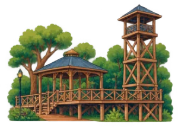

<!doctype html>
<html lang="es">
<head>
<meta charset="utf-8">
<meta name="viewport" content="width=device-width,initial-scale=1,viewport-fit=cover">
<meta name="theme-color" content="#165277">
<meta name="description" content="TRAZA by ZEROS3 Travel Company · Traza tu Guayaquil">
<link rel="manifest" href="manifest.json">
<link rel="icon" href="img/icon-192.png">
<link rel="apple-touch-icon" href="img/icon-192.png">
<meta name="apple-mobile-web-app-capable" content="yes">
<title>TRAZA</title>
<link rel="preconnect" href="https://fonts.googleapis.com">
<link rel="stylesheet" href="https://fonts.googleapis.com/css2?family=Montserrat:wght@400;500;600;700&family=Source+Serif+4:ital,opsz,wght@0,8..60,600;0,8..60,700;1,8..60,400&display=swap">
<style>
/* Layout: una sola pantalla de app (máx. 430 px) centrada; pantallas apiladas que se muestran una a la vez. Paleta TRAZA, look claro fijo por marca. */
:root{
  --navy:#165277; --navy-2:#0F3F5D; --cream:#F7F5F0; --cream-2:#EFEBE3; --white:#FFFFFF;
  --gray:#616C79; --gray-2:#8A939D; --line:#E4DED2; --sky:#49ACE5; --sky-soft:#E3F2FB;
  --green:#789E8A; --green-soft:#E6EFE9; --terra:#F2947A; --terra-dk:#B84A30; --terra-soft:#FCE9E3;
  --ink:#1D2B36;
  --f-display:"Source Serif 4", Georgia, "Times New Roman", serif;
  --f-ui:"Montserrat", "Segoe UI", system-ui, sans-serif;
  --r-s:12px; --r-m:16px; --r-l:24px;
  --shadow:0 6px 20px rgba(22,82,119,.12);
  color-scheme:light;
}
html,body{height:100%}
body{background:var(--cream-2);color:var(--ink);font-family:var(--f-ui);margin:0;-webkit-tap-highlight-color:transparent}
button{font:inherit;color:inherit;background:none;border:0;padding:0;cursor:pointer}
a{color:inherit}
:focus-visible{outline:3px solid var(--sky);outline-offset:2px}
#app{position:relative;height:100%;max-width:430px;margin:0 auto;background:var(--cream);overflow:hidden;box-shadow:0 0 0 1px var(--line),0 20px 60px rgba(22,82,119,.15)}
.screen{position:absolute;inset:0;display:flex;flex-direction:column;background:var(--cream);overflow:hidden}
.scroll{flex:1;overflow-y:auto;overflow-x:hidden;-webkit-overflow-scrolling:touch}
.pad{padding-left:max(20px,env(safe-area-inset-left,0px));padding-right:max(20px,env(safe-area-inset-right,0px))}
h1,h2,h3{font-family:var(--f-display);color:var(--navy);margin:0;text-wrap:balance;font-weight:700}
.h1{font-size:30px;line-height:1.15}
.h2{font-size:22px;line-height:1.2}
.h3{font-size:18px}
.muted{color:var(--gray)}
.small{font-size:12px}
p{margin:0;line-height:1.5}
.stack{display:flex;flex-direction:column}
.row{display:flex;align-items:center}
.gap4{gap:4px}.gap8{gap:8px}.gap12{gap:12px}.gap16{gap:16px}.gap24{gap:24px}
.between{justify-content:space-between}
.btn{display:inline-flex;align-items:center;justify-content:center;gap:8px;min-height:52px;padding:0 20px;border-radius:999px;font-weight:600;font-size:15px;text-decoration:none;transition:transform .12s,background .2s}
.btn:active{transform:scale(.98)}
/* Estados de interacción: normal → hover → presionado → seleccionado → desactivado */
@media (hover:hover){.btn-primary:hover{background:var(--navy-2)}.btn-ghost:hover{background:var(--cream)}.btn-terra:hover{filter:brightness(1.08)}.icon-btn:hover{background:var(--cream)}.icon-btn.on:hover{background:var(--navy-2)}.filter:hover{background:var(--cream-2)}.filter[aria-pressed="true"]:hover{background:var(--navy-2)}.tab:hover{color:var(--navy)}.opt:hover{background:var(--cream-2)}.list-item:hover{background:var(--cream)}.chip-btn:hover{background:#FAD9CE}}
.icon-btn:active,.filter:active,.opt:active,.list-item:active,.tab:active,.chip-btn:active,.poi:active .poi-ic{transform:scale(.94)}
.icon-btn,.filter,.opt,.list-item,.tab,.chip-btn,.poi-ic{transition:transform .12s,background .2s,color .2s}
.btn:disabled,.btn[aria-disabled="true"]{background:var(--cream-2);color:#9AA3AD;box-shadow:none;border-color:transparent;cursor:not-allowed;transform:none}

.btn-primary{background:var(--navy);color:#fff;box-shadow:0 6px 16px rgba(22,82,119,.25)}
.btn-ghost{border:1.5px solid var(--navy);color:var(--navy);background:var(--white)}
.btn-terra{background:var(--terra-dk);color:#fff}
.btn-block{width:100%}
.btn-s{min-height:38px;padding:0 16px;font-size:13px}
.icon-btn{width:44px;height:44px;border-radius:50%;display:grid;place-items:center;background:var(--white);box-shadow:var(--shadow);color:var(--navy)}
.chip{display:inline-flex;align-items:center;gap:6px;padding:6px 12px;border-radius:999px;font-size:12px;font-weight:600;background:var(--sky-soft);color:var(--navy)}
.card{background:var(--white);border-radius:var(--r-m);box-shadow:0 2px 10px rgba(22,82,119,.06)}
.svg{width:20px;height:20px;flex:none}
.svg-s{width:16px;height:16px;flex:none}

/* Barra inferior */
.tabbar{display:flex;justify-content:space-around;background:var(--white);border-top:1px solid var(--line);padding:8px max(8px,env(safe-area-inset-right,0px)) calc(8px + env(safe-area-inset-bottom,0px)) max(8px,env(safe-area-inset-left,0px));flex:none;z-index:30}
.tab{display:flex;flex-direction:column;align-items:center;gap:3px;font-size:11px;color:var(--gray);padding:4px 6px;min-width:58px;position:relative}
.tab[aria-current="page"]{color:var(--navy);font-weight:600}
.tab[aria-current="page"]::after{content:"";position:absolute;bottom:-4px;width:16px;height:2px;border-radius:2px;background:var(--navy)}

/* Splash */
.splash{align-items:center;justify-content:center;gap:16px;text-align:center}
.splash img{width:150px;animation:pop .8s cubic-bezier(.2,1.4,.4,1) both}
.splash .by{letter-spacing:.22em;font-size:11px;color:var(--gray);margin-top:12px}
.splash .lema{font-size:16px;color:var(--navy);font-weight:500}
.loader{width:120px;height:3px;border-radius:3px;background:var(--line);overflow:hidden;position:absolute;bottom:calc(60px + env(safe-area-inset-bottom,0px))}
.loader::after{content:"";display:block;height:100%;width:40%;background:var(--navy);animation:load 1.4s ease-in-out infinite}
@keyframes load{0%{transform:translateX(-100%)}100%{transform:translateX(260%)}}
@keyframes pop{from{transform:scale(.6);opacity:0}to{transform:scale(1);opacity:1}}

/* Onboarding */
.onb-img{width:100%;aspect-ratio:342/370;max-height:46vh;object-fit:cover;border-radius:var(--r-m);background:var(--white)}
.dots{display:flex;gap:6px;justify-content:center}
.dots i{width:7px;height:7px;border-radius:4px;background:var(--line);transition:width .2s}
.dots i.on{width:22px;background:var(--navy)}

/* Formularios */
.field{display:flex;align-items:center;gap:10px;background:var(--white);border:1.5px solid var(--line);border-radius:var(--r-s);padding:0 14px;min-height:54px}
.field:focus-within{border-color:var(--navy)}
.field input,.field textarea{flex:1;border:0;outline:0;font:inherit;font-size:15px;background:transparent;color:var(--ink);min-width:0}
.otp{display:grid;grid-template-columns:repeat(6,minmax(0,1fr));gap:8px}
.otp input{height:56px;text-align:center;font-family:var(--f-display);font-size:24px;font-weight:700;color:var(--navy);border:1.5px solid var(--line);border-radius:var(--r-s);background:var(--white);outline:0;min-width:0;width:100%}
.otp input:focus{border-color:var(--navy)}
.skyline{width:100%;display:block;margin-top:auto}
.lang{display:inline-flex;border-radius:999px;background:var(--white);border:1px solid var(--line);padding:3px;font-size:12px;font-weight:600}
.lang button{padding:5px 10px;border-radius:999px;color:var(--gray)}
.lang button.on{color:var(--navy);background:var(--cream-2)}

/* Inicio */
.avatar{width:46px;height:46px;border-radius:50%;object-fit:cover;border:2px solid var(--white);box-shadow:var(--shadow)}
.search{display:flex;align-items:center;gap:10px;background:var(--white);border-radius:var(--r-s);padding:0 14px;min-height:48px;color:var(--gray);font-size:14px;box-shadow:0 2px 10px rgba(22,82,119,.06);width:100%;text-align:left}
.trip{background:var(--navy);color:#fff;border-radius:var(--r-m);padding:18px;position:relative;overflow:hidden}
.trip h3{color:#fff;font-size:20px}
.trip .pill{display:inline-flex;align-items:center;gap:6px;border:1px solid rgba(255,255,255,.35);border-radius:999px;padding:4px 10px;font-size:11px}
.trip .pill::before{content:"";width:6px;height:6px;border-radius:50%;background:var(--sky)}
.trip .dash{height:0;border-top:2px dashed rgba(255,255,255,.35);margin:14px 0;position:relative}
.steps{display:grid;grid-template-columns:repeat(5,minmax(0,1fr));position:relative}
.steps::before{content:"";position:absolute;left:10%;right:10%;top:15px;border-top:2px solid var(--line)}
.step{display:flex;flex-direction:column;align-items:center;gap:6px;font-size:10.5px;color:var(--gray);position:relative;text-align:center}
.step .dot{width:30px;height:30px;border-radius:50%;background:var(--cream-2);display:grid;place-items:center;border:2px solid var(--white);box-shadow:0 0 0 1px var(--line)}
.step .dot::after{content:"";width:8px;height:8px;border-radius:50%;background:var(--gray-2)}
.step.done{color:var(--navy);font-weight:600}
.step.done .dot{background:var(--navy);box-shadow:none;color:#fff}
.step.done .dot::after{display:none}
.hscroll{display:flex;gap:14px;overflow-x:auto;scroll-snap-type:x mandatory;padding-bottom:6px}
.hscroll::-webkit-scrollbar{display:none}
.place-card{flex:0 0 220px;scroll-snap-align:start;text-align:left;overflow:hidden}
.place-card .ph{height:130px;background:var(--cream-2);display:grid;place-items:center;position:relative}
.place-card .ph img{max-height:118px;max-width:92%;object-fit:contain}
.place-card .badge{position:absolute;top:8px;right:8px;background:var(--navy);color:#fff;font-size:10px;font-weight:600;border-radius:999px;padding:4px 8px}
.list-item{display:flex;align-items:center;gap:12px;padding:14px;width:100%;box-sizing:border-box;text-align:left}
a.list-item,a.list-item *{text-decoration:none}
.list-item .ico{width:44px;height:44px;border-radius:var(--r-s);background:var(--cream-2);display:grid;place-items:center;color:var(--navy);flex:none}

/* Mapa */
.map-wrap{position:relative;flex:1;overflow:hidden;background:#EAE0CF;touch-action:none;cursor:grab;user-select:none;-webkit-user-select:none}
.map-wrap.dragging{cursor:grabbing}
.world{position:absolute;left:0;top:0;transform-origin:0 0;will-change:transform}
.mapsvg svg{display:block}
.lm{position:absolute;padding:0;transition:opacity .25s,transform .2s}
.lm img{width:100%;height:100%;object-fit:contain;pointer-events:none;user-select:none;-webkit-user-drag:none}
.lm:active{transform:scale(.96)}
.lbl{position:absolute;transform:translateX(-50%);white-space:nowrap;background:var(--white);color:var(--navy);font-size:10px;font-weight:600;border-radius:10px;padding:3px 8px;box-shadow:0 2px 6px rgba(0,0,0,.16);transition:opacity .25s}
.dim{opacity:.28;pointer-events:none}
.pads .tap{cursor:pointer}
.me{position:absolute;width:28px;height:28px;border-radius:50%;background:rgba(73,172,229,.25);display:grid;place-items:center;transform:translate(-50%,-50%);transition:left .6s,top .6s;pointer-events:none}
.me::after{content:"";width:14px;height:14px;border-radius:50%;background:var(--sky);border:2.5px solid #fff;box-shadow:0 0 0 0 rgba(73,172,229,.6);animation:ping 2s infinite}
@keyframes ping{0%{box-shadow:0 0 0 0 rgba(73,172,229,.55)}80%,100%{box-shadow:0 0 0 14px rgba(73,172,229,0)}}
.hist-card{position:absolute;background:var(--cream);border:1.5px dashed var(--navy);border-radius:16px;padding:8px 8px 6px;display:flex;flex-direction:column;align-items:center;gap:2px;box-shadow:0 3px 10px rgba(0,0,0,.18)}
.hist-card img{width:72px;height:54px;object-fit:contain}
.hist-card b{font-size:10px;color:var(--navy)}
.hist-card span{font-size:9px;color:var(--gray)}
.map-top{position:absolute;top:0;left:0;right:0;padding:calc(12px + env(safe-area-inset-top,0px)) max(16px,env(safe-area-inset-right,0px)) 10px max(16px,env(safe-area-inset-left,0px));display:flex;flex-direction:column;gap:10px;background:linear-gradient(var(--cream) 70%,rgba(247,245,240,0));z-index:5}
.filters{display:flex;gap:8px;overflow-x:auto}
.filters::-webkit-scrollbar{display:none}
.filter{flex:none;padding:8px 16px;border-radius:999px;background:var(--white);font-size:13px;color:var(--ink);box-shadow:0 1px 4px rgba(0,0,0,.08)}
.filter[aria-pressed="true"]{background:var(--navy);color:#fff}
.fabs{position:absolute;right:max(14px,env(safe-area-inset-right,0px));bottom:20px;display:flex;flex-direction:column;gap:10px;z-index:5;transition:bottom .3s}
.zoom{display:flex;flex-direction:column;background:var(--white);border-radius:22px;box-shadow:var(--shadow);overflow:hidden}
.zoom button{width:44px;height:42px;display:grid;place-items:center;color:var(--navy)}
.zoom button+button{border-top:1px solid var(--line)}
.hist-chip{position:absolute;right:max(16px,env(safe-area-inset-right,0px));top:0;display:flex;align-items:center;gap:6px;background:var(--white);border-radius:22px;padding:5px 12px 5px 5px;font-size:11px;font-weight:600;color:var(--navy);box-shadow:var(--shadow);z-index:5}
.hist-chip img{width:28px;height:28px;border-radius:50%;object-fit:contain;background:var(--cream)}
.sheet-card{position:absolute;left:max(12px,env(safe-area-inset-left,0px));right:max(12px,env(safe-area-inset-right,0px));bottom:12px;background:var(--white);border-radius:var(--r-l);box-shadow:0 10px 30px rgba(0,0,0,.18);padding:12px 16px 16px;z-index:6;transform:translateY(130%);transition:transform .32s cubic-bezier(.2,.9,.3,1)}
.sheet-card.open{transform:none}
.poi{position:absolute;transform:translate(-50%,-50%);display:flex;flex-direction:column;align-items:center;gap:3px;padding:0;transition:opacity .25s}
.poi-ic{width:40px;height:40px;border-radius:50%;background:#fff;border:2.5px solid var(--c);display:grid;place-items:center;color:var(--c);box-shadow:0 2px 6px rgba(0,0,0,.18)}
.poi-ic svg{width:22px;height:22px}
.poi-t{font-size:11px;font-weight:600;color:var(--navy);background:rgba(255,255,255,.94);padding:2px 7px;border-radius:9px;white-space:nowrap;box-shadow:0 1px 3px rgba(0,0,0,.1)}
.lbl-sub{position:absolute;transform:translateX(-50%);white-space:nowrap;font-size:10px;font-weight:600;color:var(--terra-dk);background:var(--terra-soft);border-radius:10px;padding:2px 8px;transition:opacity .25s}
.poi.svc{display:none}.world.zin .poi.svc,.world.svcon .poi.svc{display:flex}
.poi.svc .poi-ic{width:32px;height:32px;border-width:2px}.poi.svc .poi-ic svg{width:17px;height:17px}.poi.svc .poi-t{font-size:10px}
.poi.sel .poi-ic{background:var(--c);color:#fff}
.poi.pulse .poi-ic{animation:poipulse 1.2s ease-in-out 2}@keyframes poipulse{50%{transform:scale(1.45);box-shadow:0 0 0 10px rgba(242,148,122,.35)}}
.stamp-ok{position:absolute;width:30px;height:30px;border-radius:50%;background:#789E8A;color:#fff;display:grid;place-items:center;border:3px solid #fff;box-shadow:0 2px 6px rgba(0,0,0,.25);pointer-events:none;z-index:2}
.tthemes{display:flex;gap:6px;overflow-x:auto;padding-bottom:2px}.chip-btn{flex:none;border:1.5px solid var(--terra);color:var(--terra-dk);background:var(--terra-soft);border-radius:16px;padding:5px 12px;font-size:12px;font-weight:600}
.map-wrap.night{background:#1b2633}.map-wrap.night .mapsvg{filter:invert(.92) hue-rotate(180deg) brightness(.82) saturate(.75)}
.map-wrap.night .lm img{filter:drop-shadow(0 0 12px rgba(255,214,140,.55)) brightness(.95)}
.map-wrap.night .lbl,.map-wrap.night .poi-t,.map-wrap.night .lbl-sub{background:#22303f;color:#F7F5F0}
.map-wrap.night .poi-ic{background:#22303f;color:#D6E6F2;border-color:#D6E6F2}.map-wrap.night .poi.sel .poi-ic{background:#F2947A;color:#fff}
.recbar{position:absolute;left:0;top:46px;display:flex;align-items:center;gap:8px;background:var(--navy);color:#fff;border-radius:20px;padding:6px 6px 6px 12px;font-size:12px;font-weight:600;box-shadow:var(--shadow);z-index:6}
.recbar button{background:#fff;color:var(--navy);border-radius:14px;padding:4px 10px;font-size:11px;font-weight:700}
.recdot{width:9px;height:9px;border-radius:50%;background:#F2947A;animation:recpulse 1.2s infinite}@keyframes recpulse{50%{opacity:.25}}
.icon-btn.on{background:var(--navy);color:#fff}
.tstops{display:flex;flex-wrap:wrap;gap:6px}
.tstop{display:inline-flex;align-items:center;gap:6px;background:var(--cream);border-radius:14px;padding:3px 10px 3px 3px;font-size:11px;font-weight:600;color:var(--navy)}
.tstop i{width:20px;height:20px;border-radius:50%;background:var(--navy);color:#fff;display:grid;place-items:center;font-style:normal;font-size:11px}

.grab{width:40px;height:4px;border-radius:2px;background:var(--line);margin:0 auto 10px;display:block}
.pc{display:flex;gap:12px}
.pc .thumb{width:84px;height:84px;border-radius:var(--r-s);background:var(--cream-2);display:grid;place-items:center;flex:none}
.pc .thumb img{max-width:90%;max-height:90%;object-fit:contain}
.audio{background:var(--sky-soft);border-radius:var(--r-s);padding:8px 10px;display:flex;flex-direction:column;gap:6px}
.audio .bar{height:4px;border-radius:2px;background:rgba(22,82,119,.15);overflow:hidden}
.audio .bar i{display:block;height:100%;width:0;background:var(--navy)}
.audio-btn{display:inline-flex;align-items:center;gap:8px;background:var(--sky-soft);color:var(--navy);font-weight:600;font-size:12.5px;border-radius:999px;padding:6px 12px 6px 6px}
.audio-btn .play{width:26px;height:26px;border-radius:50%;background:var(--navy);color:#fff;display:grid;place-items:center}
.open-pill{display:inline-flex;align-items:center;gap:5px;font-size:10.5px;border:1px solid var(--line);border-radius:999px;padding:2px 8px;color:var(--gray)}
.open-pill::before{content:"";width:6px;height:6px;border-radius:50%;background:var(--green)}
.route-line{fill:none;stroke:var(--terra);stroke-width:5;stroke-linecap:round;stroke-linejoin:round;stroke-dasharray:10 9;animation:dash 1.2s linear infinite}
@keyframes dash{to{stroke-dashoffset:-19}}

/* Ficha */
.hero{height:280px;background:linear-gradient(180deg,var(--sky-soft),var(--cream-2));display:grid;place-items:center;position:relative;flex:none}
.hero img{max-width:78%;max-height:220px;object-fit:contain;filter:drop-shadow(0 8px 14px rgba(0,0,0,.15))}
.hero .tl{position:absolute;top:calc(14px + env(safe-area-inset-top,0px));left:max(14px,env(safe-area-inset-left,0px))}
.hero .tr{position:absolute;top:calc(14px + env(safe-area-inset-top,0px));right:max(14px,env(safe-area-inset-right,0px));display:flex;gap:8px}
.sheet-body{background:var(--white);border-radius:var(--r-l) var(--r-l) 0 0;margin-top:-24px;position:relative;padding-top:22px;padding-bottom:24px;min-height:60%}
.meta{display:flex;flex-wrap:wrap;gap:8px 16px;font-size:13px;color:var(--gray)}
.meta span{display:inline-flex;align-items:center;gap:6px}
.gallery{display:flex;gap:10px;overflow-x:auto}
.gallery img{width:120px;height:110px;object-fit:cover;border-radius:var(--r-s);background:var(--cream-2);flex:none}
.gallery img.fit{object-fit:contain;padding:8px;box-sizing:border-box}
.bottom-actions{display:flex;gap:10px;padding:12px max(16px,env(safe-area-inset-right,0px)) calc(12px + env(safe-area-inset-bottom,0px)) max(16px,env(safe-area-inset-left,0px));background:var(--white);border-top:1px solid var(--line);flex:none}
.bottom-actions .btn{flex:1}

/* Recuerdos */
.seg{display:grid;grid-template-columns:1fr 1fr;background:var(--white);border-radius:999px;padding:4px;box-shadow:0 1px 4px rgba(0,0,0,.06)}
.seg button{min-height:40px;border-radius:999px;font-size:13px;font-weight:600;color:var(--navy)}
.seg button[aria-pressed="true"]{background:var(--navy);color:#fff}
.stories{display:flex;gap:12px;overflow-x:auto}
.stories::-webkit-scrollbar{display:none}
.story{display:flex;flex-direction:column;align-items:center;gap:6px;font-size:11px;color:var(--gray);flex:none}
.story .ring{width:62px;height:62px;border-radius:50%;padding:3px;border:2px solid var(--sky);background:var(--white);display:grid;place-items:center;overflow:hidden}
.story .ring img{width:100%;height:100%;object-fit:contain;border-radius:50%}
.story .ring.add{background:var(--navy);border-color:var(--navy);color:#fff}
.progress{height:6px;border-radius:3px;background:var(--cream-2);overflow:hidden}
.progress i{display:block;height:100%;background:var(--navy);border-radius:3px;transition:width .5s}
.memory{overflow:hidden}
.memory .photo{position:relative;margin:12px 12px 0;border-radius:var(--r-s);overflow:hidden;background:var(--cream-2);aspect-ratio:324/280}
.memory .photo img{width:100%;height:100%;object-fit:cover;display:block}
.memory .where{position:absolute;left:10px;bottom:10px;background:var(--white);border-radius:999px;padding:5px 10px;font-size:12px;font-weight:600;color:var(--navy);display:flex;gap:5px;align-items:center}
.memory .acts{display:flex;align-items:center;gap:14px;padding:10px 14px 0;color:var(--navy);font-size:12px}
.memory .acts button{display:inline-flex;align-items:center;gap:5px;min-height:32px}
.liked{color:var(--terra-dk)}
.example{font-size:10px;font-weight:600;color:var(--gray);background:var(--cream-2);border-radius:999px;padding:2px 8px}
.fab{position:absolute;right:max(18px,env(safe-area-inset-right,0px));bottom:calc(84px + env(safe-area-inset-bottom,0px));width:58px;height:58px;border-radius:50%;background:var(--navy);color:#fff;display:grid;place-items:center;box-shadow:0 8px 20px rgba(22,82,119,.35);z-index:8}

/* Cámara */
.cam{background:#1E2229;color:#fff}
.cam video,.cam .frame{position:absolute;inset:0;width:100%;height:100%;object-fit:cover}
.cam .grid{position:absolute;inset:0;background-image:linear-gradient(rgba(255,255,255,.12) 1px,transparent 1px),linear-gradient(90deg,rgba(255,255,255,.12) 1px,transparent 1px);background-size:33.33% 33.33%;pointer-events:none}
.cam .top{position:absolute;top:0;left:0;right:0;display:flex;justify-content:space-between;align-items:center;padding:calc(16px + env(safe-area-inset-top,0px)) max(16px,env(safe-area-inset-right,0px)) 0 max(16px,env(safe-area-inset-left,0px));z-index:3}
.cam .round{width:42px;height:42px;border-radius:50%;background:rgba(0,0,0,.45);display:grid;place-items:center;color:#fff}
.cam .gps{display:flex;align-items:center;gap:6px;background:rgba(0,0,0,.45);border-radius:999px;padding:8px 12px;font-size:12px;font-weight:600}
.cam .hint{position:absolute;left:24px;right:24px;top:42%;text-align:center;font-size:14px;line-height:1.5;color:rgba(255,255,255,.8)}
.cam .controls{position:absolute;left:0;right:0;bottom:0;padding:18px 28px calc(28px + env(safe-area-inset-bottom,0px));display:flex;align-items:center;justify-content:space-between;background:linear-gradient(transparent,rgba(0,0,0,.75));z-index:3}
.shutter{width:76px;height:76px;border-radius:50%;border:4px solid #fff;display:grid;place-items:center}
.shutter::after{content:"";width:60px;height:60px;border-radius:50%;background:#fff;transition:transform .1s}
.shutter:active::after{transform:scale(.88)}
.flash{position:absolute;inset:0;background:#fff;opacity:0;pointer-events:none;z-index:9}
.flash.go{animation:flash .35s ease-out}
@keyframes flash{0%{opacity:.9}100%{opacity:0}}

/* Detectando */
.radar{width:180px;height:180px;border-radius:50%;position:relative;display:grid;place-items:center;margin:0 auto}
.radar::before,.radar::after{content:"";position:absolute;inset:0;border-radius:50%;border:2px solid var(--sky);animation:wave 2s infinite}
.radar::after{animation-delay:1s}
@keyframes wave{from{transform:scale(.3);opacity:1}to{transform:scale(1);opacity:0}}
.photo-prev{border-radius:var(--r-m);overflow:hidden;background:var(--white);aspect-ratio:4/5;position:relative;max-height:52vh}
.photo-prev img{width:100%;height:100%;object-fit:cover;display:block}
.photo-prev .where{position:absolute;left:50%;bottom:16px;transform:translateX(-50%);background:var(--white);border-radius:999px;padding:9px 16px;font-weight:600;color:var(--navy);display:flex;gap:6px;align-items:center;white-space:nowrap;box-shadow:var(--shadow);font-size:14px}

/* Nuevo recuerdo */
.toggle{width:50px;height:30px;border-radius:15px;background:var(--line);position:relative;flex:none;transition:background .2s}
.toggle::after{content:"";position:absolute;top:3px;left:3px;width:24px;height:24px;border-radius:50%;background:#fff;transition:transform .2s;box-shadow:0 1px 3px rgba(0,0,0,.2)}
.toggle[aria-checked="true"]{background:var(--navy)}
.toggle[aria-checked="true"]::after{transform:translateX(20px)}
.vis{display:grid;grid-template-columns:1fr 1fr;background:var(--cream-2);border-radius:var(--r-s);padding:4px}
.vis button{min-height:44px;border-radius:10px;display:flex;align-items:center;justify-content:center;gap:6px;font-weight:600;font-size:14px;color:var(--navy)}
.vis button[aria-pressed="true"]{background:var(--navy);color:#fff}

/* Compartir */
.story-prev{width:min(62%,240px);margin:0 auto;border-radius:18px;overflow:hidden;box-shadow:0 12px 30px rgba(0,0,0,.2);aspect-ratio:9/16;background:var(--cream-2)}
.story-prev img{width:100%;height:100%;object-fit:cover;display:block}
.nets{display:grid;grid-template-columns:repeat(4,minmax(0,1fr));gap:8px}
.net{display:flex;flex-direction:column;align-items:center;gap:6px;font-size:12px;color:var(--gray)}
.net span{width:54px;height:54px;border-radius:50%;background:var(--white);display:grid;place-items:center;color:var(--navy);box-shadow:var(--shadow)}
.sim{background:#000;color:#fff}
.sim .storybox{flex:1;margin:0 14px;border-radius:14px;overflow:hidden;position:relative;background:#111}
.sim .storybox img{width:100%;height:100%;object-fit:contain}

/* Pasaporte */
.stamps{display:grid;grid-template-columns:repeat(2,minmax(0,1fr));gap:18px 10px;justify-items:center}
.stamps>button:last-child:nth-child(odd){grid-column:1 / -1}
.stamp{width:100%;max-width:150px;aspect-ratio:1}
.stamp svg{width:100%;height:100%;display:block}
.stamp.got{animation:none}
.stamp.new{animation:stampIn .6s cubic-bezier(.2,1.3,.4,1) both}
@keyframes stampIn{0%{transform:scale(1.5) rotate(-12deg);opacity:0}100%{transform:scale(1) rotate(0);opacity:1}}
.reward{display:flex;gap:12px;align-items:center;border:1.5px dashed var(--terra);background:var(--terra-soft);border-radius:var(--r-m);padding:14px;font-size:13px;line-height:1.45}
.reward b{color:var(--terra-dk)}
.locked-wrap{position:relative}
.locked-wrap .stamps{opacity:.3;filter:grayscale(1)}
.locked-card{position:absolute;inset:40px 6px auto;background:var(--white);border-radius:var(--r-l);box-shadow:0 12px 30px rgba(0,0,0,.15);padding:24px 20px;text-align:center;display:flex;flex-direction:column;gap:12px}

/* Perfil */
.stat{flex:1;text-align:center;padding:12px 6px}
.stat b{display:block;font-family:var(--f-display);font-size:22px;color:var(--navy);font-variant-numeric:tabular-nums}
.menu .list-item+.list-item{border-top:1px solid var(--line)}

/* Overlays y avisos */
.overlay{position:absolute;inset:0;background:rgba(15,30,45,.45);z-index:40;display:flex;align-items:flex-end;opacity:0;transition:opacity .2s}
.overlay.show{opacity:1}
.overlay .panel{background:var(--white);width:100%;border-radius:var(--r-l) var(--r-l) 0 0;padding:14px max(20px,env(safe-area-inset-right,0px)) calc(22px + env(safe-area-inset-bottom,0px)) max(20px,env(safe-area-inset-left,0px));max-height:82%;overflow-y:auto;transform:translateY(40px);transition:transform .25s;display:flex;flex-direction:column;gap:14px}
.overlay.show .panel{transform:none}
.overlay.center{align-items:center;justify-content:center;padding:24px}
.overlay.center .panel{border-radius:var(--r-l);padding:24px}
.toast{position:absolute;left:50%;top:calc(18px + env(safe-area-inset-top,0px));transform:translate(-50%,-20px);background:var(--navy);color:#fff;font-size:13px;font-weight:600;padding:10px 16px;border-radius:999px;box-shadow:var(--shadow);opacity:0;transition:all .25s;z-index:60;max-width:88%;text-align:center}
.toast.show{opacity:1;transform:translate(-50%,0)}
.opt{display:flex;align-items:center;gap:12px;padding:12px;border-radius:var(--r-s);background:var(--cream);width:100%;text-align:left}
.opt img{width:48px;height:40px;object-fit:contain}
.select{user-select:all;background:var(--cream);border-radius:var(--r-s);padding:10px 12px;font-weight:600;color:var(--navy)}
@media (prefers-reduced-motion:reduce){*{animation:none!important;transition:none!important}}
@media (min-width:600px){#app{margin-block:0}}
</style>
</head>
<body>


<div id="app" aria-live="polite"></div>
<input type="file" id="fileCam" accept="image/*" capture="environment" hidden>
<input type="file" id="fileGal" accept="image/*" hidden>

<script>
"use strict";
/* ---------- Iconos ---------- */
const P={
back:'<path d="M15 6l-6 6 6 6"/>',close:'<path d="M6 6l12 12M18 6L6 18"/>',
home:'<path d="M4 11l8-7 8 7v9a1 1 0 0 1-1 1h-5v-6h-4v6H5a1 1 0 0 1-1-1z"/>',
map:'<path d="M9 4L3 6v14l6-2 6 2 6-2V4l-6 2-6-2zM9 4v14M15 6v14"/>',
route:'<circle cx="6" cy="18" r="2"/><circle cx="18" cy="6" r="2"/><path d="M8 18h6a4 4 0 0 0 0-8h-4a4 4 0 0 1 0-8h6"/>',
photo:'<rect x="3" y="5" width="18" height="14" rx="2"/><circle cx="9" cy="10" r="2"/><path d="M21 16l-5-5-8 8"/>',
user:'<circle cx="12" cy="8" r="4"/><path d="M4 21c1.5-4 4.5-6 8-6s6.5 2 8 6"/>',
search:'<circle cx="11" cy="11" r="7"/><path d="M20 20l-4-4"/>',
pin:'<path d="M12 21s-7-6.5-7-12a7 7 0 0 1 14 0c0 5.5-7 12-7 12z"/><circle cx="12" cy="9" r="2.5"/>',
target:'<circle cx="12" cy="12" r="7"/><circle cx="12" cy="12" r="2.5"/><path d="M12 2v3M12 19v3M2 12h3M19 12h3"/>',
layers:'<path d="M12 3l9 5-9 5-9-5 9-5z"/><path d="M3 13l9 5 9-5"/>',
plus:'<path d="M12 5v14M5 12h14"/>',minus:'<path d="M5 12h14"/>',
play:'<path d="M8 5l11 7-11 7z" fill="currentColor"/>',pause:'<path d="M8 5v14M16 5v14" stroke-width="3"/>',
head:'<path d="M4 15v-3a8 8 0 0 1 16 0v3"/><rect x="3" y="14" width="4" height="6" rx="1.5"/><rect x="17" y="14" width="4" height="6" rx="1.5"/>',
clock:'<circle cx="12" cy="12" r="9"/><path d="M12 7v5l3 2"/>',ticket:'<rect x="3" y="7" width="18" height="10" rx="2"/><path d="M8 7v10"/>',
book:'<path d="M6 4h12v16H6a2 2 0 0 1-2-2V6a2 2 0 0 1 2-2z"/><path d="M8 4v16"/>',bookf:'<path d="M6 4h12v16H6a2 2 0 0 1-2-2V6a2 2 0 0 1 2-2z" fill="currentColor"/>',
share:'<circle cx="18" cy="5" r="2.5"/><circle cx="6" cy="12" r="2.5"/><circle cx="18" cy="19" r="2.5"/><path d="M8.2 10.8l7.6-4.4M8.2 13.2l7.6 4.4"/>',
camera:'<path d="M4 8h3l2-3h6l2 3h3v11H4z"/><circle cx="12" cy="13" r="3.5"/>',
heart:'<path d="M12 20s-7-4.5-7-10a4 4 0 0 1 7-2.5A4 4 0 0 1 19 10c0 5.5-7 10-7 10z"/>',heartf:'<path d="M12 20s-7-4.5-7-10a4 4 0 0 1 7-2.5A4 4 0 0 1 19 10c0 5.5-7 10-7 10z" fill="currentColor"/>',
chat:'<path d="M4 5h16v11H9l-5 4z"/>',lock:'<rect x="5" y="11" width="14" height="9" rx="2"/><path d="M8 11V8a4 4 0 0 1 8 0v3"/>',
globe:'<circle cx="12" cy="12" r="9"/><path d="M3 12h18M12 3c3 3 3 15 0 18M12 3c-3 3-3 15 0 18"/>',
check:'<path d="M5 12l5 5 9-10"/>',chev:'<path d="M9 6l6 6-6 6"/>',mail:'<rect x="3" y="5" width="18" height="14" rx="2"/><path d="M3 7l9 6 9-6"/>',
fork:'<path d="M7 3v8M5 3v5a2 2 0 0 0 4 0V3M7 11v10M17 3c-2 0-3 3-3 6s1 3 3 3v9"/>',coffee:'<path d="M4 9h12v6a4 4 0 0 1-4 4H8a4 4 0 0 1-4-4zM16 11h2a2 2 0 0 1 0 4h-2"/>',
gallery:'<rect x="3" y="3" width="18" height="18" rx="3"/><path d="M3 15l5-5 5 5 3-3 5 5"/>',flip:'<path d="M4 12a8 8 0 0 1 14-5l2 2M20 12a8 8 0 0 1-14 5l-2-2"/><path d="M20 4v5h-5M4 20v-5h5"/>',
ig:'<rect x="4" y="4" width="16" height="16" rx="5"/><circle cx="12" cy="12" r="3.6"/><circle cx="17" cy="7" r=".8" fill="currentColor"/>',
fb:'<path d="M14 21v-8h3l.5-3H14V8.5c0-1 .3-1.5 1.6-1.5H17.6V4.2c-.4 0-1.5-.2-2.8-.2-2.6 0-4 1.6-4 4.3V10H8v3h2.8v8"/>',
tt:'<path d="M14 4v10.5a3.5 3.5 0 1 1-3-3.5M14 4c.5 2.5 2.3 4 5 4"/>',more:'<path d="M12 16V4M7 9l5-5 5 5M5 14v6h14v-6"/>',
down:'<path d="M12 4v11M7 10l5 5 5-5M5 20h14"/>',gift:'<rect x="4" y="9" width="16" height="11" rx="1"/><path d="M3 9h18M12 9v11M12 9c-2-4-6-4-6-1.5S10 9 12 9c2 0 6 0 6-1.5S14 5 12 9"/>',
compass:'<circle cx="12" cy="12" r="9"/><path d="M15.5 8.5l-2 5-5 2 2-5z"/>',logout:'<path d="M14 4h5v16h-5M10 8l-4 4 4 4M6 12h10"/>',
star:'<path d="M12 4l2.3 5 5.2.6-3.9 3.6 1 5.2L12 15.8 7.4 18.4l1-5.2L4.5 9.6l5.2-.6z"/>',bed:'<path d="M3 18V7M3 13h18v5M21 13a3 3 0 0 0-3-3h-8v3"/><circle cx="7" cy="11" r="1.5"/>',
nav:'<path d="M4 11l16-7-7 16-2-7z"/>',sliders:'<path d="M5 6h14M5 12h14M5 18h14"/><circle cx="9" cy="6" r="2" fill="#fff"/><circle cx="15" cy="12" r="2" fill="#fff"/><circle cx="8" cy="18" r="2" fill="#fff"/>'
};
const I=(n,c='svg')=>`<svg class="${c}" viewBox="0 0 24 24" fill="none" stroke="currentColor" stroke-width="1.8" stroke-linecap="round" stroke-linejoin="round" aria-hidden="true">${P[n]||''}</svg>`;
const esc=s=>String(s).replace(/[&<>"']/g,c=>({'&':'&amp;','<':'&lt;','>':'&gt;','"':'&quot;',"'":'&#39;'}[c]));

/* ---------- Datos ---------- */
const PLACES={
 penas:{id:'penas',nombre:'Las Peñas',corto:'Las Peñas',sub:'Cerro Santa Ana',cats:['Cultura','Fotografía'],tag:'Cultura',img:'img/penas.webp',dist:'a 1,2 km',dur:'1 h',horario:'Abierto todo el día',precio:'Gratis',lat:-2.1824,lng:-79.8762,
  sobre:'El barrio más antiguo de Guayaquil, al pie del cerro Santa Ana. Sus escalones numerados suben entre casas de colores, galerías y cafés hasta el faro.',
  historia:'Bienvenido a Las Peñas, el barrio más antiguo de Guayaquil. Sube por los cuatrocientos cuarenta y cuatro escalones numerados del cerro Santa Ana. A cada lado verás casas de madera pintadas de colores, galerías de arte y pequeños cafés. Arriba te espera el faro, y desde ahí toda la ciudad y el río Guayas. Cada escalón guarda una historia. Así empieza tu traza.',
  galeria:['img/foto-penas.jpg','img/penas.webp'],rest:[['Cafés de las escalinatas','Café y snacks · 100 m','coffee']]},
 malecon:{id:'malecon',nombre:'Malecón Simón Bolívar',corto:'Malecón',sub:'La Perla y La Rotonda',cats:['Mar','Fotografía'],tag:'Mar',img:'img/perla.webp',dist:'a 600 m',dur:'1 – 2 h',horario:'Abierto · 07:00 – 23:00',precio:'Gratis',lat:-2.1880,lng:-79.8790,
  sobre:'Paseo de 2,5 km a orillas del río Guayas, con jardines, monumentos, miradores y la rueda La Perla. En La Rotonda se recuerda el encuentro de Bolívar y San Martín.',
  historia:'Yo soy el río Guayas, y yo vi nacer esta ciudad. Por este malecón llegaron barcos, crecieron puertos y hubo muchas despedidas. Camina entre las palmeras hasta La Rotonda, donde se recuerda el encuentro de dos libertadores, Bolívar y San Martín, en mil ochocientos veintidós. Y si subes a La Perla, me verás desde lo alto. Acércate, tengo más historias para ti.',
  galeria:['img/foto-malecon.jpg','img/perla.webp','img/rotonda.webp'],rest:[['La Central','Restaurante · calle Panamá','fork'],['Puerto Ancla','Mariscos · calle Panamá','fork']]},
 cacao:{id:'cacao',nombre:'Museo del Cacao',corto:'Cacao',sub:'Calle Panamá',cats:['Cultura','Gastronomía'],tag:'Cultura',img:'img/cacao.webp',dist:'a 900 m',dur:'45 min',horario:'Mar a dom · 10:00 – 17:00',precio:'Gratis · aporte voluntario',lat:-2.1888,lng:-79.8812,
  sobre:'La historia de la “pepa de oro”: cómo el cacao de esta tierra llegó al mundo. En el tercer piso funciona el Bar Juliana.',
  historia:'Antes del chocolate, hubo una semilla que hizo historia. Al cacao de esta región lo llamaron la pepa de oro, porque llevó el nombre de esta tierra a todo el mundo. En este museo verás cómo se cultiva, se seca y se transforma el grano. Y al final, recuerda: cada chocolate empieza en una mazorca como esta.',
  galeria:['img/cacao.webp'],rest:[['La Central','Restaurante · calle Panamá','fork'],['Bar Juliana','Cócteles · 3.er piso del museo','coffee']]},
 seminario:{id:'seminario',nombre:'Parque Seminario',corto:'Seminario',sub:'Parque de las Iguanas',cats:['Naturaleza','Fotografía'],tag:'Naturaleza',img:'img/iguana.webp',dist:'a 800 m',dur:'30 min',horario:'Consultar horario',precio:'Gratis',lat:-2.1954,lng:-79.8826,
  sobre:'El parque de las iguanas, en pleno centro. Al frente está la Catedral. Recuerda: no toques ni alimentes a las iguanas.',
  historia:'Hola, te estaba esperando. Somos las iguanas del Parque Seminario y vivimos en el corazón de Guayaquil. Nos visitan personas de todo el mundo. Al frente, cruzando la calle, la Catedral nos cuida. En el centro del parque está la estatua de Bolívar a caballo. Quédate un rato: aquí el tiempo va lento. Y por favor, no nos toques ni nos des de comer.',
  galeria:['img/iguana.webp','img/catedral.webp'],rest:[]},
 plaza:{id:'plaza',nombre:'Plaza de la Administración',corto:'Plaza',sub:'Palacio Municipal',cats:['Cultura'],tag:'Cultura',img:'img/plaza.webp',dist:'a 700 m',dur:'20 min',horario:'Abierto todo el día',precio:'Gratis',lat:-2.1938,lng:-79.8818,extra:true,
  sobre:'Entre el Palacio Municipal y la Gobernación, frente al Malecón. Un buen punto para fotografiar la arquitectura del centro.',
  historia:'Estás en la Plaza de la Administración. A un lado está el Palacio Municipal, construido por el arquitecto Francesco Maccaferri. Al otro lado, la Gobernación. Desde aquí, el Malecón está a pocos pasos.',
  galeria:['img/plaza.webp'],rest:[]},
 puerto:{id:'puerto',nombre:'Puerto Santa Ana',corto:'Puerto',sub:'Junto a Las Peñas',cats:['Gastronomía','Fotografía','Mar'],tag:'Gastronomía',img:'img/puerto.webp',dist:'a 1,4 km',dur:'1 – 2 h',horario:'Abierto todo el día',precio:'Gratis',lat:-2.1785,lng:-79.8768,
  sobre:'Paseo moderno junto al río, al norte del cerro Santa Ana. Tiene restaurantes, miradores al Guayas, la torre The Point y el museo de la música popular Julio Jaramillo.',
  historia:'Bienvenido a Puerto Santa Ana. Aquí, donde antes había bodegas y astilleros, hoy hay un paseo frente al río. Camina junto a la baranda y mira pasar los barcos. Al fondo verás The Point, la torre que parece girar. Y si escuchas un pasillo, sigue la música: el museo de Julio Jaramillo, el Ruiseñor de América, está muy cerca.',
  galeria:['img/puerto.webp'],rest:[['Restaurantes del puerto','Mariscos y comida típica · 100 m','fork']]},
 historico:{id:'historico',nombre:'Parque Histórico',corto:'P. Histórico',sub:'Samborondón',cats:['Naturaleza','Cultura'],tag:'Naturaleza',img:'img/historico.webp',dist:'20 min en auto',dur:'2 – 3 h',horario:'Abre desde las 09:00',precio:'$4 adultos · $2 niños',lat:-2.1468,lng:-79.8707,
  sobre:'Cruzando el río, en Samborondón: casas patrimoniales de madera, senderos entre el manglar y una zona de vida silvestre.',
  historia:'Cruza el río y viaja cien años atrás. En el Parque Histórico verás cómo vivía Guayaquil hace un siglo, en casas de madera con balcones. Antes de los edificios, estaba el manglar: camina por sus senderos y escucha a las aves. Algunos viajes se hacen en el tiempo.',
  galeria:['img/historico.webp'],rest:[]}
};
const STAMP_IDS=['penas','malecon','seminario','cacao','historico'];
const IMG_LBL={penas:'Las Peñas · Cerro Santa Ana',malecon:'Malecón Simón Bolívar',cacao:'Museo del Cacao',seminario:'Parque Seminario',plaza:'Plaza de la Administración',historico:'Parque Histórico'};
const SEED_MEM=[
 {id:'s1',place:'penas',img:'img/foto-penas.jpg',text:'Atardecer subiendo los 444 escalones. La brisa del río y los colores de las casas hacen que cada paso valga la pena.',date:'2026-10-13T17:40',pub:false,likes:24,seed:true},
 {id:'s2',place:'malecon',img:'img/foto-malecon.jpg',text:'Paseo matutino junto al río Guayas, con un jugo fresco frente al agua.',date:'2026-10-12T09:15',pub:true,likes:48,seed:true}];
const COMMUNITY=[
 {who:'Camila R.',place:'malecon',img:'img/foto-malecon.jpg',text:'La Perla al atardecer es otra cosa. #TrazaTuGuayaquil',likes:132},
 {who:'Andrés M.',place:'penas',img:'img/foto-penas.jpg',text:'Llegué al escalón 444. ¡Valió cada paso!',likes:87}];

/* ---------- Estado ---------- */
const def={mode:null,name:'Dennisse',email:'',visited:{},track:[],geo:{},mems:[],saved:[],liked:{},onboarded:false,lang:'ES'};
let S=Object.assign({},def);
try{const raw=localStorage.getItem('traza-v1');if(raw)S=Object.assign({},def,JSON.parse(raw));}catch(e){}
function save(){try{localStorage.setItem('traza-v1',JSON.stringify(S));}catch(e){ /* sin espacio: se mantiene en memoria */ }}
const allMems=()=>[...S.mems,...SEED_MEM];
const isClient=()=>S.mode==='cliente';
const vis=id=>isClient()&&!!S.visited[id];
const visitedCount=()=>STAMP_IDS.filter(vis).length;
/* ---------- Idioma: español / inglés ---------- */
// Los textos se escriben en español; si el idioma es inglés, se traducen al mostrarse en pantalla.
const EN={
// Bienvenida e ingreso
'BY ZEROS3 TRAVEL COMPANY':'BY ZEROS3 TRAVEL COMPANY','Traza tu Guayaquil':'Trace your Guayaquil','Omitir':'Skip','Siguiente':'Next','Empezar':'Get started','Comenzar':'Start',
'Recorre la ciudad':'Walk the city','Explora Guayaquil con un mapa ilustrado y rutas pensadas para ti.':'Explore Guayaquil with an illustrated map and routes designed for you.',
'Descubre lo auténtico':'Discover the real Guayaquil','Escucha la historia de cada lugar y encuentra dónde comer cerca.':'Listen to the story of each place and find somewhere to eat nearby.',
'Guarda tus fotos como recuerdos y gana un sello en cada lugar.':'Save your photos as memories and earn a stamp at every place.',
'Bienvenido a TRAZA':'Welcome to TRAZA','Ingresa con el correo que usaste en tu reserva con':'Sign in with the email you used to book with',
'Te enviaremos un código de 6 dígitos para ingresar.':'We will send you a 6-digit code to sign in.','Enviar código':'Send code','o':'or','Explorar sin reserva':'Explore without a booking',
'tucorreo@ejemplo.com':'youremail@example.com','Idioma':'Language','Revisa tu correo':'Check your email','Enviamos un código de 6 dígitos a':'We sent a 6-digit code to',
'Prototipo: escribe cualquier código de 6 dígitos.':'Prototype: type any 6-digit code.','Verificar e ingresar':'Verify and sign in','Volver':'Back',
'Escribe un correo válido, por ejemplo: nombre@gmail.com':'Enter a valid email, for example: name@gmail.com','Completa los 6 dígitos':'Enter all 6 digits',
// Inicio
'¿Qué quieres descubrir hoy?':'What would you like to discover today?','Busca lugares, hoteles, cafés…':'Search places, hotels, cafés…','En ruta activa':'Trip in progress',
'Mi viaje con ZEROS3':'My trip with ZEROS3','Ver itinerario':'See itinerary','Tu traza':'Your trace','Ver pasaporte':'See passport','Lugares para ti':'Places for you',
'Ver en el mapa':'See on the map','ver en el mapa':'see on the map','✓ Visitado':'✓ Visited','Cerca de ti':'Near you','Gastronomía local':'Local food','Ver':'See','Restaurante':'Restaurant',
'Cócteles':'Cocktails','Mariscos':'Seafood','Inicio':'Home','Mapa':'Map','Rutas':'Routes','Recuerdos':'Memories','Perfil':'Profile','Navegación principal':'Main navigation',
'Modo explorador':'Explorer mode','Explora Guayaquil a tu ritmo':'Explore Guayaquil at your own pace',
'Mapa, historias en audio y recuerdos gratis. Con ZEROS3 desbloqueas sellos, guía y descuentos.':'Map, audio stories and memories for free. With ZEROS3 you unlock stamps, a guide and discounts.',
'Conocer experiencias ZEROS3':'See ZEROS3 experiences',
// Lugares
'Las Peñas':'Las Peñas','Cerro Santa Ana':'Santa Ana Hill','Malecón Simón Bolívar':'Malecón Simón Bolívar','Malecón':'Malecón','La Perla y La Rotonda':'La Perla and La Rotonda',
'Museo del Cacao':'Cacao Museum','Cacao':'Cacao','Calle Panamá':'Panamá Street','calle Panamá':'Panamá Street','Parque Seminario':'Seminario Park','Seminario':'Seminario',
'Parque de las Iguanas':'Iguana Park','Plaza de la Administración':'Plaza de la Administración','Palacio Municipal':'City Hall','Plaza':'Plaza',
'Puerto Santa Ana':'Puerto Santa Ana','Puerto':'Puerto','Junto a Las Peñas':'Next to Las Peñas','Parque Histórico':'Historical Park','P. Histórico':'Hist. Park','Samborondón':'Samborondón',
'Cultura':'Culture','Mar':'Waterfront','Naturaleza':'Nature','Fotografía':'Photography','Gastronomía':'Food','Hoteles':'Hotels','Todos':'All','Filtros':'Filters',
'Gratis':'Free','Abierto':'Open','Abierto todo el día':'Open all day','Consultar horario':'Check opening hours','Gratis · aporte voluntario':'Free · voluntary donation',
'Abre desde las 09:00':'Opens at 09:00','$4 adultos':'$4 adults','$2 niños':'$2 children','20 min en auto':'20 min by car','en auto':'by car',
'Escuchar historia':'Listen to the story','Sobre el lugar':'About this place','Galería':'Gallery','1 imagen':'1 image','Restaurantes cerca':'Restaurants nearby',
'Café y snacks':'Coffee and snacks','Mariscos y comida típica':'Seafood and local food','Cómo llegar':'Directions','Añadir recuerdo':'Add memory','Guardar lugar':'Save place','Compartir lugar':'Share place',
'Cócteles · 3.er piso del museo':'Cocktails · museum’s 3rd floor','Cerrar tarjeta':'Close card','Ver lugar':'See place',
'El barrio más antiguo de Guayaquil, al pie del cerro Santa Ana. Sus escalones numerados suben entre casas de colores, galerías y cafés hasta el faro.':'The oldest neighbourhood in Guayaquil, at the foot of Santa Ana Hill. Its numbered steps climb past colourful houses, galleries and cafés up to the lighthouse.',
'Paseo de 2,5 km a orillas del río Guayas, con jardines, monumentos, miradores y la rueda La Perla. En La Rotonda se recuerda el encuentro de Bolívar y San Martín.':'A 2.5 km promenade along the Guayas River, with gardens, monuments, viewpoints and La Perla Ferris wheel. La Rotonda commemorates the meeting of Bolívar and San Martín.',
'La historia de la “pepa de oro”: cómo el cacao de esta tierra llegó al mundo. En el tercer piso funciona el Bar Juliana.':'The story of the “golden bean”: how the cacao from this land reached the world. Bar Juliana is on the third floor.',
'El parque de las iguanas, en pleno centro. Al frente está la Catedral. Recuerda: no toques ni alimentes a las iguanas.':'The iguana park, right downtown. The Cathedral stands opposite. Remember: do not touch or feed the iguanas.',
'Entre el Palacio Municipal y la Gobernación, frente al Malecón. Un buen punto para fotografiar la arquitectura del centro.':'Between City Hall and the Governor’s Palace, facing the Malecón. A good spot to photograph downtown architecture.',
'Paseo moderno junto al río, al norte del cerro Santa Ana. Tiene restaurantes, miradores al Guayas, la torre The Point y el museo de la música popular Julio Jaramillo.':'A modern riverside promenade north of Santa Ana Hill, with restaurants, views of the Guayas, The Point tower and the Julio Jaramillo popular music museum.',
'Cruzando el río, en Samborondón: casas patrimoniales de madera, senderos entre el manglar y una zona de vida silvestre.':'Across the river in Samborondón: heritage wooden houses, mangrove trails and a wildlife area.',
// Historias (audio)
'Bienvenido a Las Peñas, el barrio más antiguo de Guayaquil. Sube por los cuatrocientos cuarenta y cuatro escalones numerados del cerro Santa Ana. A cada lado verás casas de madera pintadas de colores, galerías de arte y pequeños cafés. Arriba te espera el faro, y desde ahí toda la ciudad y el río Guayas. Cada escalón guarda una historia. Así empieza tu traza.':'Welcome to Las Peñas, the oldest neighbourhood in Guayaquil. Climb the four hundred and forty-four numbered steps of Santa Ana Hill. On each side you will see wooden houses painted in bright colours, art galleries and little cafés. The lighthouse waits at the top, and from there the whole city and the Guayas River. Every step holds a story. This is where your trace begins.',
'Yo soy el río Guayas, y yo vi nacer esta ciudad. Por este malecón llegaron barcos, crecieron puertos y hubo muchas despedidas. Camina entre las palmeras hasta La Rotonda, donde se recuerda el encuentro de dos libertadores, Bolívar y San Martín, en mil ochocientos veintidós. Y si subes a La Perla, me verás desde lo alto. Acércate, tengo más historias para ti.':'I am the Guayas River, and I watched this city being born. Ships arrived along this waterfront, ports grew and there were many farewells. Walk among the palm trees to La Rotonda, which recalls the meeting of two liberators, Bolívar and San Martín, in eighteen twenty-two. And if you ride La Perla, you will see me from above. Come closer, I have more stories for you.',
'Antes del chocolate, hubo una semilla que hizo historia. Al cacao de esta región lo llamaron la pepa de oro, porque llevó el nombre de esta tierra a todo el mundo. En este museo verás cómo se cultiva, se seca y se transforma el grano. Y al final, recuerda: cada chocolate empieza en una mazorca como esta.':'Before chocolate, there was a seed that made history. The cacao from this region was called the golden bean, because it carried the name of this land around the world. In this museum you will see how the bean is grown, dried and transformed. And remember: every chocolate begins in a pod like this one.',
'Hola, te estaba esperando. Somos las iguanas del Parque Seminario y vivimos en el corazón de Guayaquil. Nos visitan personas de todo el mundo. Al frente, cruzando la calle, la Catedral nos cuida. En el centro del parque está la estatua de Bolívar a caballo. Quédate un rato: aquí el tiempo va lento. Y por favor, no nos toques ni nos des de comer.':'Hello, I was waiting for you. We are the iguanas of Seminario Park and we live in the heart of Guayaquil. People from all over the world come to visit us. Across the street, the Cathedral watches over us. In the middle of the park stands the statue of Bolívar on horseback. Stay a while: time goes slowly here. And please, do not touch us or feed us.',
'Estás en la Plaza de la Administración. A un lado está el Palacio Municipal, construido por el arquitecto Francesco Maccaferri. Al otro lado, la Gobernación. Desde aquí, el Malecón está a pocos pasos.':'You are in Plaza de la Administración. On one side is City Hall, built by the architect Francesco Maccaferri. On the other, the Governor’s Palace. The Malecón is just a few steps away.',
'Bienvenido a Puerto Santa Ana. Aquí, donde antes había bodegas y astilleros, hoy hay un paseo frente al río. Camina junto a la baranda y mira pasar los barcos. Al fondo verás The Point, la torre que parece girar. Y si escuchas un pasillo, sigue la música: el museo de Julio Jaramillo, el Ruiseñor de América, está muy cerca.':'Welcome to Puerto Santa Ana. Where warehouses and shipyards once stood, there is now a riverside promenade. Walk along the railing and watch the boats go by. In the background you will see The Point, the tower that seems to twist. And if you hear a pasillo song, follow the music: the museum of Julio Jaramillo, the Nightingale of the Americas, is very close.',
'Cruza el río y viaja cien años atrás. En el Parque Histórico verás cómo vivía Guayaquil hace un siglo, en casas de madera con balcones. Antes de los edificios, estaba el manglar: camina por sus senderos y escucha a las aves. Algunos viajes se hacen en el tiempo.':'Cross the river and travel a hundred years back. In the Historical Park you will see how Guayaquil lived a century ago, in wooden houses with balconies. Before the buildings there was the mangrove: walk its trails and listen to the birds. Some journeys are made through time.',
// Mapa
'Gobernación':'Governor’s Palace','Río Guayas':'Guayas River','← Aerovía a Julián Coronel y Parque Centenario':'← Aerovía to Julián Coronel and Centenario Park',
'Las Peñas · Cerro Santa Ana':'Las Peñas · Santa Ana Hill','La Perla · Malecón 2000':'La Perla · Malecón 2000','Catedral':'Cathedral','Parque Histórico →':'Historical Park →',
'Iglesia Santo Domingo':'Santo Domingo Church','Cafés de las escalinatas':'Stairway cafés','Museo Julio Jaramillo':'Julio Jaramillo Museum','Museos de Barcelona y Emelec':'Barcelona & Emelec museums',
'Museo Nahim Isaías':'Nahim Isaías Museum','Restaurantes del puerto':'Port restaurants','Mercado Artesanal':'Artisan Market','Jardines del Malecón':'Malecón Gardens',
'Iglesia San Francisco':'San Francisco Church','Paseos en barco':'Boat tours','Torre Morisca':'Moorish Clock Tower','Capilla del Cerro Santa Ana':'Santa Ana Hill Chapel',
'Museo Naval El Fortín':'El Fortín Naval Museum','Sagrado Corazón de Jesús':'Sacred Heart of Jesus','Jardines del puerto':'Port gardens','Palacio de Cristal':'Crystal Palace',
'Iglesia San José':'San José Church','Parque Centenario ←':'Centenario Park ←','Cementerio General ↖':'General Cemetery ↖','Museo Municipal':'Municipal Museum',
'Sello conseguido':'Stamp earned','Trazar mi camino':'Trace my path','Mi ubicación':'My location','Capas del mapa':'Map layers','Acercar':'Zoom in','Alejar':'Zoom out',
'Solo lugares':'Places only','Mapa limpio, sin caminos':'Clean map, no paths','Ruta del centro':'Downtown route','Camino a pie por las calles, de Las Peñas a la Catedral':'Walking route through the streets, from Las Peñas to the Cathedral',
'Mapa de noche':'Night map','Colores oscuros para recorridos nocturnos':'Dark colours for night walks','Activado · toca para volver al día':'On · tap to return to day mode',
'Mapa de noche activado':'Night map on','Mapa de día':'Day map',
'Traza tu camino':'Trace your path','Toca los lugares del mapa en el orden en que quieres visitarlos.':'Tap places on the map in the order you want to visit them.',
'Toca otro lugar del mapa para seguir tu camino.':'Tap another place on the map to continue your path.','Toca los lugares en el orden que quieras':'Tap the places in any order you like',
'Del centro':'Downtown','Iglesias':'Churches','Museos':'Museums','Gastronómica':'Food','Deshacer':'Undo','Borrar':'Clear',
'Mostrando todos los lugares':'Showing all places',
// Descripciones de los puntos del mapa
'La iglesia más antigua de Guayaquil, al pie del cerro Santa Ana.':'The oldest church in Guayaquil, at the foot of Santa Ana Hill.',
'Cafés, bares y galerías junto a los escalones de Las Peñas.':'Cafés, bars and galleries along the Las Peñas steps.',
'Museo de la música popular, en el Edificio Astillero de Puerto Santa Ana. Mié a sáb 10:00–17:00, dom 10:00–15:00.':'Popular music museum in the Astillero Building, Puerto Santa Ana. Wed–Sat 10:00–17:00, Sun 10:00–15:00.',
'Museos de los dos equipos de fútbol de la ciudad, en el primer piso del Edificio Astillero.':'Museums of the city’s two football clubs, on the first floor of the Astillero Building.',
'Museo de arte en Pichincha y Clemente Ballén, junto a la Plaza de la Administración. Mar a sáb 09:00–17:00, gratis.':'Art museum at Pichincha and Clemente Ballén, next to Plaza de la Administración. Tue–Sat 09:00–17:00, free.',
'Mariscos y comida típica frente al río, en Puerto Santa Ana.':'Seafood and local food by the river, in Puerto Santa Ana.',
'Bar de cócteles en el tercer piso del Museo del Cacao, en Panamá e Imbabura.':'Cocktail bar on the third floor of the Cacao Museum, at Panamá and Imbabura.',
'Restaurante en la calle Panamá, uno de los pioneros de la zona gastronómica.':'Restaurant on Panamá Street, one of the pioneers of the food district.',
'Mariscos en la calle Panamá, sucursal de El Ancla de Milagro.':'Seafood on Panamá Street, a branch of El Ancla from Milagro.',
'Cocina molecular del chef Wladimir Castro, en la calle Panamá.':'Molecular cuisine by chef Wladimir Castro, on Panamá Street.',
'Bar de cócteles en la calle Panamá.':'Cocktail bar on Panamá Street.','Cafetería en la calle Panamá, abierta desde 2014.':'Café on Panamá Street, open since 2014.',
'Artesanías de todo el Ecuador, en Baquerizo Moreno, entre Loja y Juan Montalvo.':'Crafts from all over Ecuador, on Baquerizo Moreno, between Loja and Juan Montalvo.',
'Jardines con plantas nativas y un estanque, entre Loja y Tomás Martínez.':'Gardens with native plants and a pond, between Loja and Tomás Martínez.',
'Iglesia y Plaza San Francisco, en la Av. 9 de Octubre y Pedro Carbo.':'San Francisco Church and Square, at Av. 9 de Octubre and Pedro Carbo.',
'Muelle de botes turísticos del Malecón, a la altura de la calle Imbabura.':'Tour boat pier on the Malecón, at Imbabura Street.',
'El reloj público de Guayaquil, en el Malecón a la altura de la calle República de Guayaquil (antes 10 de Agosto).':'Guayaquil’s public clock, on the Malecón at República de Guayaquil Street (formerly 10 de Agosto).',
'Estación de la Aerovía en el Malecón y Loja. Cruza el río Guayas en cabina hasta Durán.':'Aerovía cable car station at the Malecón and Loja. Cross the Guayas River by cabin to Durán.',
'Estación de la Aerovía en el malecón de Durán, al otro lado del río.':'Aerovía station on the Durán waterfront, across the river.',
'Pequeña iglesia en la cima del cerro, frente al faro, dedicada a la Virgen de la Merced. Entrada libre.':'Small church at the top of the hill, opposite the lighthouse, dedicated to Our Lady of Mercy. Free entry.',
'Museo al aire libre junto al faro: cañones, anclas y restos de las antiguas defensas de la ciudad. Entrada libre.':'Open-air museum next to the lighthouse: cannons, anchors and remains of the old city defences. Free entry.',
'Monumento de 27 m en la cima del Cerro del Carmen. Se sube por unos 164 escalones; mejor ir en taxi.':'A 27 m monument on top of Cerro del Carmen. About 164 steps to climb; a taxi is the best way to go.',
'Pequeña plaza junto a la iglesia Santo Domingo, al pie del cerro Santa Ana.':'Small square next to Santo Domingo Church, at the foot of Santa Ana Hill.',
'Hotel frente al río en Puerto Santa Ana, calle Numa Pompilio Llona.':'Riverside hotel in Puerto Santa Ana, on Numa Pompilio Llona Street.',
'Paseo con jardines, bancas y monumentos frente al río Guayas.':'Promenade with gardens, benches and monuments facing the Guayas River.',
'Hotel en el Malecón e Imbabura, junto al Museo del Cacao y cerca de La Perla.':'Hotel at the Malecón and Imbabura, next to the Cacao Museum and close to La Perla.',
'Hotel en el Malecón y Roca, cerca de La Rotonda.':'Hotel at the Malecón and Roca, close to La Rotonda.','Hotel frente al Malecón, a pocas cuadras de La Perla.':'Hotel facing the Malecón, a few blocks from La Perla.',
'Hostal boutique en el Malecón y Aguirre.':'Boutique guesthouse at the Malecón and Aguirre.','Hotel en Clemente Ballén, frente al Parque Seminario.':'Hotel on Clemente Ballén, opposite Seminario Park.',
'Hotel en Chile y Luque, a una cuadra de la 9 de Octubre.':'Hotel at Chile and Luque, one block from 9 de Octubre.','Hotel en Sucre y Pichincha, cerca del Malecón.':'Hotel at Sucre and Pichincha, close to the Malecón.',
'Hotel boutique en Junín y Córdova.':'Boutique hotel at Junín and Córdova.','Hotel en Junín y Córdova.':'Hotel at Junín and Córdova.',
'Hotel en la calle Escobedo, cerca de la 9 de Octubre.':'Hotel on Escobedo Street, close to 9 de Octubre.','Hotel en una casa patrimonial de la calle Escobedo.':'Hotel in a heritage house on Escobedo Street.',
'Hotel boutique dentro del Parque Histórico, en Samborondón.':'Boutique hotel inside the Historical Park, in Samborondón.',
'Museo Antropológico y de Arte Contemporáneo, al norte del Malecón.':'Museum of Anthropology and Contemporary Art, at the north end of the Malecón.',
'Club de yates en el Malecón, a la altura de la calle Aguirre, junto al Paseo de los Presidentes.':'Yacht club on the Malecón at Aguirre Street, next to the Paseo de los Presidentes.',
'El antiguo Mercado Sur (1907), hoy centro de exposiciones, al final del Malecón.':'The former South Market (1907), now an exhibition centre at the end of the Malecón.',
'Iglesia frente al Palacio de Cristal, en la avenida Eloy Alfaro.':'Church opposite the Crystal Palace, on Eloy Alfaro Avenue.',
'A 1 km por la Av. 9 de Octubre: la Columna de los Próceres y el parque más grande del centro.':'1 km along Av. 9 de Octubre: the Column of the Founding Fathers and the largest park downtown.',
'Detrás del Cerro del Carmen. Tiene recorridos guiados por sus mausoleos de mármol.':'Behind Cerro del Carmen, with guided tours of its marble mausoleums.',
'En la calle Sucre, entre Chile y Pedro Carbo. Mar a sáb 09:00–17:30, entrada gratis.':'On Sucre Street, between Chile and Pedro Carbo. Tue–Sat 09:00–17:30, free entry.',
'El Parque Histórico está en Samborondón: 20 min en auto por el Puente de la Unidad Nacional':'The Historical Park is in Samborondón: 20 min by car over the Unidad Nacional Bridge',
// Rutas
'Recorre el centro histórico a pie, de norte a sur. Toca un lugar para ver su ficha.':'Walk the historic centre from north to south. Tap a place to see its details.','Ver ruta en el mapa':'See route on the map',
// Recuerdos
'Mis recuerdos':'My memories','Comunidad':'Community','Nuevo':'New','Privado':'Private','Público':'Public','Me gusta':'Like','Comentar':'Comment','Compartir':'Share','Tomar foto':'Take photo',
'Atardecer subiendo los 444 escalones. La brisa del río y los colores de las casas hacen que cada paso valga la pena.':'Sunset climbing the 444 steps. The river breeze and the colours of the houses make every step worth it.',
'Paseo matutino junto al río Guayas, con un jugo fresco frente al agua.':'Morning walk along the Guayas River, with a fresh juice by the water.',
'Recuerdos públicos de otros viajeros con #TrazaTuGuayaquil. Las publicaciones de esta pestaña son ejemplos del prototipo.':'Public memories from other travellers with #TrazaTuGuayaquil. The posts in this tab are prototype examples.',
'Ejemplo':'Example','La Perla al atardecer es otra cosa. #TrazaTuGuayaquil':'La Perla at sunset is something else. #TrazaTuGuayaquil','Llegué al escalón 444. ¡Valió cada paso!':'Made it to step 444. Worth every step!',
'Te gusta este recuerdo':'You like this memory','Los comentarios llegan en la próxima versión':'Comments are coming in the next version','Solo puedes compartir tus propios recuerdos':'You can only share your own memories',
// Pasaporte
'Mi pasaporte TRAZA':'My TRAZA passport','Completa los 5 sellos y obtén':'Complete the 5 stamps and get','15 % en tu próximo viaje':'15% off your next trip','con ZEROS3.':'with ZEROS3.',
'LAS PEÑAS · GUAYAQUIL':'LAS PEÑAS · GUAYAQUIL','MALECÓN · LA PERLA':'MALECÓN · LA PERLA','PARQUE SEMINARIO':'SEMINARIO PARK','MUSEO DEL CACAO':'CACAO MUSEUM','PARQUE HISTÓRICO':'HISTORICAL PARK',
'Ver mi recuerdo':'See my memory','Compartir sello':'Share stamp','Visita el lugar y publica un recuerdo para ganar este sello.':'Visit the place and post a memory to earn this stamp.',
'Nuevo sello':'New stamp','Ver mi pasaporte':'See my passport','Seguir':'Continue','Sellos exclusivos para viajeros ZEROS3':'Stamps exclusive to ZEROS3 travellers',
'Reserva una experiencia y colecciona los 5 sellos de Guayaquil en tu pasaporte.':'Book an experience and collect the 5 Guayaquil stamps in your passport.','Reservar una experiencia':'Book an experience','Ingresar con mi reserva':'Sign in with my booking',
'Los sellos del pasaporte son para viajeros ZEROS3.':'Passport stamps are for ZEROS3 travellers.',
// Perfil
'Viajero ZEROS3':'ZEROS3 traveller','Explorador':'Explorer','Sellos':'Stamps','Guardados':'Saved','Mi pasaporte':'My passport','Mis beneficios':'My benefits','Mi recorrido y sellos':'My walk and stamps',
'Lugares guardados':'Saved places','Idioma · Español':'Language · English','Contactar a ZEROS3':'Contact ZEROS3','Cerrar sesión':'Sign out','TRAZA · prototipo funcional · ZEROS3 Travel Company':'TRAZA · working prototype · ZEROS3 Travel Company',
'Sin reserva':'No booking','10 % en restaurantes aliados':'10% off at partner restaurants','Muestra tu código QR al pagar':'Show your QR code when paying','Guía ZEROS3':'ZEROS3 guide',
'Contacto directo durante tu viaje':'Direct contact during your trip','15 % próximo viaje':'15% off your next trip','Al completar los 5 sellos':'When you complete the 5 stamps',
'Mapa e historias en audio':'Map and audio stories','Incluido gratis':'Included for free','Recuerdos y compartir':'Memories and sharing','Sellos, guía y descuentos':'Stamps, guide and discounts','Solo viajeros ZEROS3':'ZEROS3 travellers only',
'Aún no guardas lugares. Toca el marcador en la ficha de un lugar para guardarlo aquí.':'You have no saved places yet. Tap the bookmark on a place’s page to save it here.',
'Español':'Español','English':'English','Escríbenos para dudas de tu viaje o para reservar una experiencia.':'Write to us with questions about your trip or to book an experience.',
'Copiar correo':'Copy email','Correo copiado':'Email copied','Selecciona el correo y cópialo':'Select the email and copy it','¿Cerrar sesión?':'Sign out?','Tus recuerdos se quedan guardados en este celular.':'Your memories stay saved on this phone.','Cancelar':'Cancel','Cerrar':'Close',
'Itinerario · Mi viaje con ZEROS3':'Itinerary · My trip with ZEROS3','Malecón Simón Bolívar y La Perla':'Malecón Simón Bolívar and La Perla','Llegada y recorrido guiado':'Arrival and guided tour',
'Las Peñas y Museo del Cacao':'Las Peñas and Cacao Museum','Hoy':'Today','Parque Seminario y Catedral':'Seminario Park and Cathedral','Almuerzo en la calle Panamá':'Lunch on Panamá Street','Traslado en auto':'Transfer by car',
'Experiencias ZEROS3':'ZEROS3 experiences','Viaja con la agencia y desbloquea tu itinerario, guía, descuentos en restaurantes aliados, los 5 sellos del pasaporte y 15 % de recompensa para tu próximo viaje.':'Travel with the agency and unlock your itinerary, a guide, discounts at partner restaurants, the 5 passport stamps and a 15% reward for your next trip.',
'Medio día':'Half day','City tour':'City tour','Las Peñas, Malecón y Seminario':'Las Peñas, Malecón and Seminario','Ruta del cacao':'Cacao route','Museo del Cacao y degustación':'Cacao Museum and tasting',
'Día completo':'Full day','Centro histórico + Parque Histórico':'Historic centre + Historical Park','Para reservar escribe a ZEROS3 Travel Company:':'To book, write to ZEROS3 Travel Company:','Ya tengo reserva · Ingresar':'I have a booking · Sign in',
// Recorrido y sellos
'Mi recorrido':'My walk','Caminado':'Walked','Mientras grabas, el mapa dibuja tu camino y, al llegar a cada lugar, se desbloquea su sello. Mantén la app abierta y la pantalla encendida.':'While recording, the map draws your path and each place’s stamp unlocks when you arrive. Keep the app open and the screen on.',
'Grabar mi recorrido':'Record my walk','Detener recorrido':'Stop recording','Usa el GPS del celular':'Uses your phone’s GPS','Simular recorrido':'Simulate a walk','Para presentar la app fuera de Guayaquil':'To present the app outside Guayaquil',
'Calibrar un lugar aquí':'Calibrate a place here','Guarda tu ubicación actual como punto de llegada':'Save your current location as the arrival point','Empezar de cero':'Start over','Borra el camino y los sellos de este celular':'Erase the path and stamps on this phone',
'Calibrar un lugar':'Calibrate a place','Párate en la entrada del lugar y elige cuál es. Su sello se desbloqueará al llegar a este punto.':'Stand at the entrance of the place and choose which one it is. Its stamp will unlock when you reach this point.',
'Punto por defecto':'Default point','Calibrado en este celular':'Calibrated on this phone','Detener':'Stop','Grabando tu recorrido':'Recording your walk','Simulando recorrido':'Simulating walk',
'Recorrido iniciado: tu camino se dibuja mientras caminas':'Recording started: your path is drawn as you walk','Simulación: así se ve tu camino al caminar por el centro':'Simulation: this is how your path looks as you walk downtown',
'Activa el permiso de ubicación para grabar tu recorrido':'Allow location access to record your walk','Buscando señal de GPS…':'Looking for GPS signal…','Tu celular no comparte la ubicación':'Your phone is not sharing its location',
'Estás lejos del centro de Guayaquil. Tu camino se dibujará cuando llegues; mientras tanto prueba “Simular recorrido”.':'You are far from downtown Guayaquil. Your path will be drawn when you arrive; meanwhile try “Simulate a walk”.',
'Listo: tu recorrido y tus sellos empiezan de cero':'Done: your walk and stamps start over','Leyendo tu ubicación…':'Reading your location…','No pudimos leer tu ubicación':'We could not read your location','Sin GPS en este navegador':'No GPS in this browser',
// Cámara y publicar
'Toca el botón blanco para abrir la cámara de tu celular.':'Tap the white button to open your phone’s camera.','La foto se guardará con el lugar donde la tomaste.':'The photo will be saved with the place where you took it.',
'Ubicación activada':'Location on','Cerrar cámara':'Close camera','Elegir de la galería':'Choose from gallery','Cambiar cámara':'Switch camera','Abre la cámara con el botón blanco':'Open the camera with the white button',
'Detectando el lugar…':'Detecting the place…','Confirmar lugar':'Confirm place','¿Es aquí donde tomaste tu foto?':'Is this where you took your photo?','Lo tomamos del lugar que estabas viendo.':'We took it from the place you were viewing.',
'Sí, es correcto':'Yes, that’s right','Cambiar lugar':'Change place','Elige el lugar':'Choose the place','Nuevo recuerdo':'New memory','Cuenta tu experiencia':'Tell your experience','Cuenta tu experiencia…':'Tell your experience…',
'¿Quién puede verlo?':'Who can see it?','Solo yo':'Only me','Automático':'Automatic','Publicar en mi traza':'Post to my trace','Marcar como visitado':'Mark as visited','¡Recuerdo publicado!':'Memory posted!',
'Comparte tu traza con tus amigos':'Share your trace with your friends','Más':'More','Descargar imagen':'Download image','Ahora no':'Not now','Tu historia':'Your story','Simulación del prototipo':'Prototype simulation','Publicar':'Post',
'Preparando la imagen…':'Preparing the image…','Imagen lista en tu dispositivo':'Image ready on your device','Si no se descargó, mantén presionada la imagen para guardarla':'If it did not download, press and hold the image to save it',
'Toma una foto en este lugar para compartirlo':'Take a photo at this place to share it','Enlace del lugar copiado':'Place link copied','No se pudo copiar en este navegador':'Could not copy in this browser',
'Guardado en tus lugares':'Saved to your places','Quitado de lugares guardados':'Removed from saved places','Mi traza':'My trace',
'Este navegador no tiene voz; el audio final se grabará con narrador':'This browser has no voice; the final audio will be recorded with a narrator'
};
const MES=['ene','feb','mar','abr','may','jun','jul','ago','sep','oct','nov','dic'],MON=['Jan','Feb','Mar','Apr','May','Jun','Jul','Aug','Sep','Oct','Nov','Dec'];
const MESL=['enero','febrero','marzo','abril','mayo','junio','julio','agosto','septiembre','octubre','noviembre','diciembre'],MONL=['January','February','March','April','May','June','July','August','September','October','November','December'];
const DIA={'Lun':'Mon','Mar':'Tue','Mié':'Wed','Jue':'Thu','Vie':'Fri','Sáb':'Sat','Dom':'Sun'};
const num=s=>s.replace(',','.');
const PAT=[
 [/^a ([\d,]+) (km|m)$/,m=>`${num(m[1])} ${m[2]} away`],
 [/^([\d,]+) (km|m)$/,m=>`${num(m[1])} ${m[2]}`],
 [/^(\d+) min a pie$/,m=>`${m[1]} min walk`],
 [/^(\d+) imagenes$/,m=>`${m[1]} images`],
 [/^Dígito (\d)$/,m=>`Digit ${m[1]}`],
 [/^Hola, (.+)$/,m=>`Hi, ${m[1]}`],
 [/^Día (\d+) de (\d+)$/,m=>`Day ${m[1]} of ${m[2]}`],
 [/^Hoy · Día (\d+)$/,m=>`Today · Day ${m[1]}`],
 [/^(\d+) de 5 lugares visitados$/,m=>`${m[1]} of 5 places visited`],
 [/^(\d+) de 5 lugares con recuerdos$/,m=>`${m[1]} of 5 places with memories`],
 [/^(\d+) de 5 sellos$/,m=>`${m[1]} of 5 stamps`],
 [/^Llevas (\d+) de 5 sellos en tu pasaporte\.$/,m=>`You have ${m[1]} of 5 stamps in your passport.`],
 [/^¡Llegaste a (.+)!$/,m=>`You made it to ${tr1(m[1])}!`],
 [/^Llegaste a (.+?)( · los sellos son para viajeros ZEROS3)?$/,m=>`You arrived at ${tr1(m[1])}${m[2]?' · stamps are for ZEROS3 travellers':''}`],
 [/^Estás en (.+)$/,m=>`You are at ${tr1(m[1])}`],
 [/^Estás a (\d+) m de (.+)$/,m=>`You are ${m[1]} m from ${tr1(m[2])}`],
 [/^Sello (.+) obtenido$/,m=>`${tr1(m[1])} stamp earned`],
 [/^Sello (.+) pendiente$/,m=>`${tr1(m[1])} stamp pending`],
 [/^Sello obtenido el (\d+) de (\w+)$/,m=>`Stamp earned on ${MONL[MESL.indexOf(m[2])]||m[2]} ${m[1]}`],
 [/^Ruta (.+): (\d+) paradas$/,m=>`${tr1(m[1][0].toUpperCase()+m[1].slice(1))} route: ${m[2]} stops`],
 [/^(\d+) resultados? de (.+)$/,m=>`${m[1]} result${m[1]==='1'?'':'s'} for ${tr1(m[2][0].toUpperCase()+m[2].slice(1)).toLowerCase()}`],
 [/^Recorrido guardado · (.+)$/,m=>`Walk saved · ${tr1(m[1])}`],
 [/^Recorrido simulado completo · (.+)$/,m=>`Simulated walk complete · ${tr1(m[1])}`],
 [/^(.+) queda fuera del centro: no se puede trazar a pie$/,m=>`${tr1(m[1])} is outside downtown: it can’t be traced on foot`],
 [/^(.+) calibrado: (.+)$/,m=>`${tr1(m[1])} calibrated: ${m[2]}`],
 [/^Publicado en tu historia de (.+)$/,m=>`Posted to your ${m[1]} story`],
 [/^Compartir en (.+) · Historia$/,m=>`Share to ${m[1]} · Story`],
 [/^Marcar (.+) como visitado y ganar su sello$/,m=>`Mark ${tr1(m[1])} as visited and earn its stamp`],
 [/^Mi recuerdo en (.+)$/,m=>`My memory at ${tr1(m[1])}`],
 [/^(\d+) (ene|feb|mar|abr|may|jun|jul|ago|sep|oct|nov|dic) (\d{4})$/i,m=>`${MON[MES.indexOf(m[2].toLowerCase())]} ${m[1]}, ${m[3]}`],
 [/^(\d+) (ENE|FEB|MAR|ABR|MAY|JUN|JUL|AGO|SEP|OCT|NOV|DIC)$/,m=>`${MON[MES.indexOf(m[2].toLowerCase())].toUpperCase()} ${m[1]}`],
 [/^(\d+) – (\d+) (\w{3})$/,m=>`${MON[MES.indexOf(m[3])]||m[3]} ${m[1]} – ${m[2]}`],
 [/^(Lun|Mar|Mié|Jue|Vie|Sáb|Dom) (\d+) (\w{3})$/,m=>`${DIA[m[1]]} ${MON[MES.indexOf(m[3])]||m[3]} ${m[2]}`],
 [/^Mar a dom$/,()=>'Tue to Sun'],[/^Mar a dom · (.+)$/,m=>`Tue to Sun · ${m[1]}`],
 [/^(\d+):(\d+) a\.\s?m\.$/,m=>`${m[1]}:${m[2]} a.m.`],[/^(\d+):(\d+) p\.\s?m\.$/,m=>`${m[1]}:${m[2]} p.m.`],
 [/^(.+?): (.+)$/,m=>{const a=tr1(m[1]),b=tr1(m[2]);return(a!==m[1]||b!==m[2])?`${a}: ${b}`:m[0];}]
];
function tr1(t){if(EN[t]!==undefined)return EN[t];for(const[re,f]of PAT){const m=t.match(re);if(m){const r=f(m);if(r!==t)return r;}}
 if(t.includes(' · ')){const ps=t.split(' · '),out=ps.map(tr1);if(out.some((o,i)=>o!==ps[i]))return out.join(' · ');}return t;}
const isEN=()=>S.lang==='EN';
function tr(s){if(!isEN()||!s)return s;const t=s.trim();if(!t)return s;const r=tr1(t);return r===t?s:s.replace(t,r);}
function trNode(n){if(n.nodeType===3){const v=n.nodeValue,r=tr(v);if(r!==v)n.nodeValue=r;return;}
 if(n.nodeType!==1||n.tagName==='SCRIPT'||n.tagName==='STYLE'||n.hasAttribute('data-notr'))return;
 ['placeholder','aria-label','title'].forEach(a=>{const v=n.getAttribute(a);if(v){const r=tr(v);if(r!==v)n.setAttribute(a,r);}});if(n.tagName!=='TEXTAREA')n.childNodes.forEach(trNode);}
new MutationObserver(ms=>{if(!isEN())return;ms.forEach(m=>{if(m.type==='characterData')trNode(m.target);else m.addedNodes.forEach(trNode);});}).observe(document.documentElement,{childList:true,subtree:true,characterData:true});
function setLang(l){S.lang=l;save();document.documentElement.lang=l==='EN'?'en':'es';render();toast(l==='EN'?'Language: English':'Idioma: español');}
document.documentElement.lang=isEN()?'en':'es';


/* ---------- Navegación ---------- */
const app=document.getElementById('app');
let stack=[];let cur=null;let draft=null;
const MAIN=['inicio','mapa','rutas','recuerdos','perfil'];
function go(name,params={},opts={}){
  stopAudio();
  if(!opts.replace&&cur)stack.push(cur);
  if(MAIN.includes(name))stack=stack.filter(s=>!MAIN.includes(s.name)).slice(-2);
  cur={name,params};render();
}
function back(){stopAudio();cur=stack.pop()||{name:'inicio',params:{}};render();}
function render(){
  const fn=SCREENS[cur.name];app.innerHTML=fn(cur.params);
  const after=AFTER[cur.name];if(after)after(cur.params);
  app.querySelectorAll('[data-go]').forEach(b=>b.addEventListener('click',()=>go(b.dataset.go,b.dataset.p?JSON.parse(b.dataset.p):{})));
  app.querySelectorAll('[data-back]').forEach(b=>b.addEventListener('click',back));
  app.querySelectorAll('[data-place]').forEach(b=>b.addEventListener('click',e=>{e.stopPropagation();go('ficha',{id:b.dataset.place});}));
}
const tabbar=act=>`<nav class="tabbar" aria-label="Navegación principal">${[['inicio','home','Inicio'],['mapa','map','Mapa'],['rutas','route','Rutas'],['recuerdos','photo','Recuerdos'],['perfil','user','Perfil']].map(([k,ic,l])=>`<button class="tab" data-go="${k}" ${k===act?'aria-current="page"':''}>${I(ic)}${l}</button>`).join('')}</nav>`;

/* ---------- Avisos y hojas ---------- */
function toast(msg){let t=app.querySelector('.toast');if(!t){t=document.createElement('div');t.className='toast';app.appendChild(t);}t.textContent=msg;requestAnimationFrame(()=>t.classList.add('show'));clearTimeout(t._h);t._h=setTimeout(()=>t.classList.remove('show'),2400);}
function sheet(html,{center=false,onOpen}={}){
  const o=document.createElement('div');o.className='overlay'+(center?' center':'');o.innerHTML=`<div class="panel" role="dialog" aria-modal="true">${center?'':'<span class="grab"></span>'}${html}</div>`;
  o.addEventListener('click',e=>{if(e.target===o||e.target.closest('[data-close]'))close();});
  function close(){o.classList.remove('show');setTimeout(()=>o.remove(),200);}
  app.appendChild(o);requestAnimationFrame(()=>o.classList.add('show'));
  o.querySelectorAll('[data-go]').forEach(b=>b.addEventListener('click',()=>{close();go(b.dataset.go,b.dataset.p?JSON.parse(b.dataset.p):{});}));
  o.querySelectorAll('[data-place]').forEach(b=>b.addEventListener('click',()=>{close();go('ficha',{id:b.dataset.place});}));
  if(onOpen)onOpen(o,close);return close;
}
const mapsLink=p=>`https://www.google.com/maps/dir/?api=1&destination=${p.lat},${p.lng}&travelmode=walking`;

/* ---------- Audio (narración con voz del dispositivo) ---------- */
let speaking=null;
function wordsDur(t){return Math.max(20,Math.round(t.split(/\s+/).length/2.4));}
const fmt=s=>`${Math.floor(s/60)}:${String(s%60).padStart(2,'0')}`;
function playAudio(p,onTick,onEnd){
  stopAudio();
  const dur=wordsDur(p.historia);const st={p,t0:Date.now(),dur,paused:false,el:0};
  speaking=st;
  if('speechSynthesis' in window){
    try{const u=new SpeechSynthesisUtterance(tr(p.historia));u.lang=isEN()?'en-US':'es-ES';u.rate=1;
      const v=speechSynthesis.getVoices().find(v=>(isEN()?/^en/i:/^es/i).test(v.lang));if(v)u.voice=v;
      u.onend=()=>{if(speaking===st){finish();}};speechSynthesis.speak(u);}catch(e){}
  }
  st.iv=setInterval(()=>{if(st.paused)return;st.el=Math.min(dur,(Date.now()-st.t0)/1000);onTick&&onTick(st.el,dur);if(st.el>=dur+4)finish();},250);
  function finish(){clearInterval(st.iv);if(speaking===st)speaking=null;onEnd&&onEnd();}
  st.finish=finish;return st;
}
function togglePause(){if(!speaking)return;const st=speaking;st.paused=!st.paused;try{st.paused?speechSynthesis.pause():speechSynthesis.resume();}catch(e){}if(!st.paused){st.t0=Date.now()-st.el*1000;}return st.paused;}
function stopAudio(){if(speaking){clearInterval(speaking.iv);speaking=null;}try{speechSynthesis.cancel();}catch(e){}}

/* ---------- Pantallas ---------- */
const SCREENS={};const AFTER={};

SCREENS.splash=()=>`<section class="screen splash"><div class="by">BY ZEROS3 TRAVEL COMPANY</div><div class="lema">Traza tu Guayaquil</div><div class="loader" aria-hidden="true"></div></section>`;
AFTER.splash=()=>setTimeout(()=>{if(cur.name!=='splash')return;go(S.mode?'inicio':(S.onboarded?'ingreso':'onb'),{},{replace:true});},1800);

const ONB=[['img/onb1.webp','Recorre la ciudad','Explora Guayaquil con un mapa ilustrado y rutas pensadas para ti.'],['img/onb2.webp','Descubre lo auténtico','Escucha la historia de cada lugar y encuentra dónde comer cerca.'],['img/onb3.webp','Traza tu Guayaquil','Guarda tus fotos como recuerdos y gana un sello en cada lugar.']];
SCREENS.onb=({i=0})=>`<section class="screen"><div class="pad stack gap24" style="flex:1;padding-block:calc(16px + env(safe-area-inset-top,0px)) calc(24px + env(safe-area-inset-bottom,0px))">
 <div class="row" style="justify-content:flex-end"><button class="muted" id="skip" style="min-height:44px">Omitir</button></div>
 
 <div class="stack gap12" style="text-align:center"><h1 class="h1">${ONB[i][1]}</h1><p class="muted">${ONB[i][2]}</p></div>
 <div class="stack gap16" style="margin-top:auto"><div class="dots">${ONB.map((_,k)=>`<i class="${k===i?'on':''}"></i>`).join('')}</div>
 <button class="btn btn-primary btn-block" id="next">${i<2?'Siguiente':'Comenzar'}</button></div></div></section>`;
AFTER.onb=({i=0})=>{const done=()=>{S.onboarded=true;save();go('ingreso',{},{replace:true});};
 document.getElementById('skip').onclick=done;document.getElementById('next').onclick=()=>i<2?go('onb',{i:i+1},{replace:true}):done();};

SCREENS.ingreso=()=>`<section class="screen"><div class="scroll stack"><div class="pad stack gap16" style="padding-block:calc(28px + env(safe-area-inset-top,0px)) 16px;text-align:center;align-items:center">
 
 <h1 class="h1">Bienvenido a TRAZA</h1><p class="muted">Ingresa con el correo que usaste en tu reserva con <b style="color:var(--navy)">ZEROS3 Travel Company</b>.</p>
 <form id="f" class="stack gap12" style="width:100%;text-align:left" novalidate>
  <label class="field">${I('mail')}<input id="email" type="email" inputmode="email" autocomplete="email" placeholder="tucorreo@ejemplo.com" required></label>
  <span class="small muted" id="msg">Te enviaremos un código de 6 dígitos para ingresar.</span>
  <button class="btn btn-primary btn-block" type="submit">Enviar código ${I('chev','svg-s')}</button></form>
 <div class="row gap12" style="width:100%;color:var(--gray-2)"><span style="flex:1;border-top:1px solid var(--line)"></span>o<span style="flex:1;border-top:1px solid var(--line)"></span></div>
 <button class="btn btn-ghost btn-block" id="exp">Explorar sin reserva</button>
 <div class="lang" role="group" aria-label="Idioma"><button id="es" class="${isEN()?'':'on'}">ES</button><button id="en" class="${isEN()?'on':''}">EN</button></div></div>
 </div></section>`;
AFTER.ingreso=()=>{
 document.getElementById('f').onsubmit=e=>{e.preventDefault();const v=document.getElementById('email').value.trim();
  if(!/^[^@\s]+@[^@\s]+\.[^@\s]+$/.test(v)){const m=document.getElementById('msg');m.textContent='Escribe un correo válido, por ejemplo: nombre@gmail.com';m.style.color='var(--terra-dk)';return;}
  S.email=v;save();go('verif');};
 document.getElementById('exp').onclick=()=>{S.mode='explorador';S.name='Explorador';save();go('inicio',{},{replace:true});};
 document.getElementById('en').onclick=()=>setLang('EN');document.getElementById('es').onclick=()=>setLang('ES');};

SCREENS.verif=()=>`<section class="screen"><div class="scroll stack"><div class="pad stack gap16" style="padding-block:calc(14px + env(safe-area-inset-top,0px)) 16px;align-items:center;text-align:center">
 <div style="align-self:flex-start"><button class="icon-btn" data-back aria-label="Volver">${I('back')}</button></div>
 <span class="icon-btn" style="width:60px;height:60px">${I('mail')}</span>
 <h1 class="h2">Revisa tu correo</h1><p class="muted">Enviamos un código de 6 dígitos a<br><b style="color:var(--navy)">${esc(S.email)}</b></p>
 <div class="otp" id="otp">${[0,1,2,3,4,5].map(k=>`<input inputmode="numeric" maxlength="1" aria-label="Dígito ${k+1}" id="d${k}">`).join('')}</div>
 <p class="small muted">Prototipo: escribe cualquier código de 6 dígitos.</p>
 <button class="btn btn-primary btn-block" id="ok" disabled>Verificar e ingresar ${I('chev','svg-s')}</button></div>
 </div></section>`;
AFTER.verif=()=>{const ins=[...document.querySelectorAll('#otp input')];ins[0].focus();
 const okb=document.getElementById('ok'),chk=()=>{okb.disabled=ins.some(i=>!i.value);};
 ins.forEach((inp,k)=>{inp.oninput=()=>{inp.value=inp.value.replace(/\D/g,'').slice(-1);if(inp.value&&ins[k+1])ins[k+1].focus();chk();};inp.onkeydown=e=>{if(e.key==='Backspace'&&!inp.value&&ins[k-1])ins[k-1].focus();};
  inp.onpaste=e=>{const t=(e.clipboardData.getData('text')||'').replace(/\D/g,'').slice(0,6);if(t){e.preventDefault();t.split('').forEach((c,j)=>ins[j]&&(ins[j].value=c));chk();}};});
 document.getElementById('ok').onclick=()=>{const code=ins.map(i=>i.value).join('');if(code.length<6){toast('Completa los 6 dígitos');return;}
  const n=(S.email.split('@')[0]||'Viajero').replace(/[._\d]+/g,' ').trim().split(' ')[0];S.name=n?n[0].toUpperCase()+n.slice(1):'Viajero';
  S.mode='cliente';save();stack=[];go('inicio',{},{replace:true});};};

SCREENS.inicio=()=>{const vc=visitedCount();const lugares=['penas','malecon','cacao','seminario','historico'];
 return `<section class="screen"><div class="scroll"><div class="pad stack gap24" style="padding-block:calc(20px + env(safe-area-inset-top,0px)) 24px">
 <div class="row between gap12"><div class="stack gap4"><h1 class="h1">Hola, ${esc(S.name)}</h1><p class="muted">¿Qué quieres descubrir hoy?</p></div>
  <button data-go="perfil" aria-label="Perfil"></button></div>
 <button class="search" id="srch">${I('search')}Busca lugares, hoteles, cafés…</button>
 ${isClient()?`<div class="trip"><div class="row between gap8"><span class="pill">En ruta activa</span><span class="small" style="opacity:.8">Guayaquil · 12 – 15 oct</span></div>
  <h3 style="margin-top:12px">Mi viaje con ZEROS3</h3><div class="dash"></div>
  <div class="row gap8 small">${I('bed','svg-s')}Hotel del Parque, Samborondón</div>
  <div class="row between" style="margin-top:14px;border-top:1px solid rgba(255,255,255,.2);padding-top:12px"><button class="row gap4" id="itin" style="font-weight:600;font-size:13px">Ver itinerario ${I('chev','svg-s')}</button><span class="small" style="opacity:.75">Día 2 de 4</span></div></div>`
 :`<div class="trip"><span class="pill">Modo explorador</span><h3 style="margin-top:12px">Explora Guayaquil a tu ritmo</h3><p class="small" style="opacity:.85;margin-top:6px">Mapa, historias en audio y recuerdos gratis. Con ZEROS3 desbloqueas sellos, guía y descuentos.</p>
  <button class="btn btn-s" id="exper" style="background:#fff;color:var(--navy);margin-top:14px">Conocer experiencias ZEROS3</button></div>`}
 <div class="stack gap12"><div class="row between"><h2 class="h2">Tu traza</h2><button class="small muted" data-go="pasaporte">Ver pasaporte</button></div>
  <button class="card stack gap16" data-go="pasaporte" style="padding:16px;text-align:left"><b style="color:var(--navy);font-size:14px">${vc} de 5 lugares visitados</b>
  <div class="steps">${STAMP_IDS.map(id=>`<div class="step ${vis(id)?'done':''}"><span class="dot">${vis(id)?I('check','svg-s'):''}</span>${PLACES[id].corto}</div>`).join('')}</div></button></div>
 <div class="stack gap12"><div class="row between"><h2 class="h2">Lugares para ti</h2><button class="small muted" data-go="mapa">Ver en el mapa</button></div>
  <div class="hscroll">${lugares.map(id=>{const p=PLACES[id];return `<button class="card place-card" data-place="${id}"><div class="ph">${vis(id)?`<span class="badge">✓ Visitado</span>`:''}</div><div class="stack gap4" style="padding:12px"><b style="font-family:var(--f-display);color:var(--navy);font-size:16px">${p.nombre}</b><span class="small muted">${p.sub} · ${p.dist}</span></div></button>`;}).join('')}</div></div>
 <div class="stack gap12"><div class="row between"><h2 class="h2">Cerca de ti</h2><span class="small muted">Gastronomía local</span></div>
  ${[['La Central','Restaurante · calle Panamá','Ver','fork'],['Bar Juliana','Cócteles · Museo del Cacao','Ver','coffee'],['Puerto Ancla','Mariscos · calle Panamá','Ver','fork']].map(r=>`<a class="card list-item" href="https://www.google.com/maps/search/${encodeURIComponent(r[0]+' Guayaquil')}" target="_blank" rel="noopener"><span class="ico">${I(r[3])}</span><span class="stack gap4" style="flex:1;min-width:0"><b style="color:var(--navy)">${r[0]}</b><span class="small muted">${r[1]}</span></span><span class="small row gap4" style="color:var(--navy)">${I('nav','svg-s')}${r[2]}</span></a>`).join('')}</div>
 </div></div>${tabbar('inicio')}</section>`;};
AFTER.inicio=()=>{document.getElementById('srch').onclick=openSearch;
 const it=document.getElementById('itin');if(it)it.onclick=()=>sheet(`<h2 class="h2">Itinerario · Mi viaje con ZEROS3</h2>${[['Lun 12 oct','Malecón Simón Bolívar y La Perla','Llegada y recorrido guiado'],['Mar 13 oct','Las Peñas y Museo del Cacao','Hoy · Día 2'],['Mié 14 oct','Parque Seminario y Catedral','Almuerzo en la calle Panamá'],['Jue 15 oct','Parque Histórico','Traslado en auto · 20 min']].map(d=>`<div class="row gap12" style="align-items:flex-start"><span class="chip" style="flex:none">${d[0]}</span><span class="stack gap4"><b style="color:var(--navy)">${d[1]}</b><span class="small muted">${d[2]}</span></span></div>`).join('')}<button class="btn btn-ghost" data-close>Cerrar</button>`);
 const ex=document.getElementById('exper');if(ex)ex.onclick=openExperiencias;};

function openSearch(){sheet(`<label class="field">${I('search')}<input id="q" placeholder="Busca lugares, hoteles, cafés…" autocomplete="off"></label><div class="stack gap8" id="res"></div>`,{onOpen:(o,close)=>{
 const q=o.querySelector('#q'),res=o.querySelector('#res');
 const draw=()=>{const t=q.value.toLowerCase().normalize('NFD').replace(/[̀-ͯ]/g,'');const list=Object.values(PLACES).filter(p=>(p.nombre+' '+p.sub+' '+p.cats.join(' ')).toLowerCase().normalize('NFD').replace(/[̀-ͯ]/g,'').includes(t));
  const pl=POIS.map((q,i)=>({q,i})).filter(({q})=>t&&(q.n+' '+q.cats.join(' ')+' '+q.d).toLowerCase().normalize('NFD').replace(/[̀-ͯ]/g,'').includes(t)).filter((o,k,a)=>a.findIndex(z=>z.q.n===o.q.n)===k).slice(0,12);
  res.innerHTML=(list.length||pl.length)?list.map(p=>`<button class="opt" data-pl="${p.id}"><span class="stack gap4"><b style="color:var(--navy)">${p.nombre}</b><span class="small muted">${p.tag} · ${p.dist}</span></span></button>`).join('')+pl.map(({q,i})=>`<button class="opt" data-ps="${i}"><span class="poi-ic" style="--c:${q.c};flex:none"><svg viewBox="0 0 24 24" width="22" height="22" fill="none" stroke="currentColor" stroke-width="2" stroke-linecap="round" stroke-linejoin="round">${POI_IC[q.ic]}</svg></span><span class="stack gap4"><b style="color:var(--navy)">${q.n}</b><span class="small muted">${q.cats[0]} · ver en el mapa</span></span></button>`).join(''):'<p class="muted">No encontramos ese lugar. Prueba con “hotel”, “café” o “museo”.</p>';
  res.querySelectorAll('[data-ps]').forEach(b=>b.onclick=()=>{const i=+b.dataset.ps,q=POIS[i];close();mapFocus={x:q.x,y:q.y,i,n:q.n,d:q.d};if(q.svc&&mapFilter!=='Servicios'&&mapFilter!=='Todos')mapFilter='Todos';go('mapa');});
  res.querySelectorAll('[data-pl]').forEach(b=>b.onclick=()=>{close();go('ficha',{id:b.dataset.pl});});};
 q.oninput=draw;draw();setTimeout(()=>q.focus(),250);}});}
function openExperiencias(){sheet(`<h2 class="h2">Experiencias ZEROS3</h2><p class="muted">Viaja con la agencia y desbloquea tu itinerario, guía, descuentos en restaurantes aliados, los 5 sellos del pasaporte y 15 % de recompensa para tu próximo viaje.</p>
 ${[['Medio día · City tour','Las Peñas, Malecón y Seminario'],['Ruta del cacao','Museo del Cacao y degustación'],['Día completo','Centro histórico + Parque Histórico']].map(e=>`<div class="opt"><span class="ico" style="width:40px;height:40px;border-radius:10px;background:var(--sky-soft);display:grid;place-items:center;color:var(--navy)">${I('compass')}</span><span class="stack gap4"><b style="color:var(--navy)">${e[0]}</b><span class="small muted">${e[1]}</span></span></div>`).join('')}
 <p class="small muted">Para reservar escribe a ZEROS3 Travel Company:</p><div class="select">reservations@zeros3travel.com</div>
 <button class="btn btn-primary" id="copy">Copiar correo</button><button class="btn btn-ghost" data-go="ingreso">Ya tengo reserva · Ingresar</button>`,{onOpen:(o)=>{o.querySelector('#copy').onclick=async()=>{try{await navigator.clipboard.writeText('reservations@zeros3travel.com');toast('Correo copiado');}catch(e){toast('Selecciona el correo y cópialo');}};}});}

/* ---------- Mapa ---------- */
// ===== Mapa del centro de Guayaquil a escala (2 px = 1 m), norte arriba, río Guayas al este =====
const NY=780,MW=1720,MH=3270,PXM=2,BW=144,PX=166,PY=190,H0=380;
const bx=b=>36+b*PX;                          // borde izquierdo de la manzana b (0..5)
const sx=[25,191,357,523,689,855,1028];       // calles norte–sur: …, Boyacá, Chimborazo, Chile, P. Carbo, Pichincha/Panamá, Malecón
const ys=r=>H0+(r-1)*PY+13;                   // calle este–oeste sobre la fila r
const by=r=>ys(r)+13;                         // borde superior de la manzana de la fila r
const PROM=1172;const shoreX=y=>1205+9*Math.sin(y/260);const farX=y=>1492+14*Math.sin(y/320+1.2);
const LM=[
 {k:'penas',id:'penas',img:'img/penas.webp',x:640,y:4,w:440,h:366,lbl:'Las Peñas · Cerro Santa Ana',lx:860,ly:350,node:[PROM,ys(1)]},
 {k:'perla',id:'malecon',img:'img/perla.webp',x:1048,y:ys(2)-14,w:150,h:140,lbl:'La Perla · Malecón 2000',lx:1123,ly:ys(2)+130,node:[PROM,ys(2)]},
 {k:'cacao',id:'cacao',img:'img/cacao.webp',x:bx(5)+2,y:by(3)+6,w:140,h:118,lbl:'Museo del Cacao',lx:bx(5)+72,ly:by(3)+124,node:[sx[5],ys(3)]},
 {k:'rotonda',id:'malecon',img:'img/rotonda.webp',x:1053,y:ys(8)-65,w:140,h:130,rot:90,lbl:'La Rotonda',lx:1123,ly:ys(8)+74,node:[PROM,ys(8)]},
 {k:'plaza',id:'plaza',img:'img/plaza.webp',x:bx(5)+2,y:by(11)+6,w:140,h:118,lbl:'Plaza de la Administración',lx:bx(5)+72,ly:by(11)+124,node:[sx[6],ys(11)]},
 {k:'parque',id:'seminario',img:'img/iguana.webp',x:bx(2)+12,y:by(11)+22,w:120,h:94,lbl:'Parque Seminario',lx:bx(2)+72,ly:by(11)+124,node:[sx[3],ys(11)]},
 {k:'catedral',id:'seminario',img:'img/catedral.webp',x:bx(1)+2,y:by(11)+6,w:140,h:118,lbl:'Catedral',lx:bx(1)+72,ly:by(11)+124,node:[sx[2],ys(11)]},
 {k:'puerto',id:'puerto',img:'img/puerto.webp',x:680,y:-768,w:440,h:396,lbl:'Puerto Santa Ana',lx:900,ly:-362,node:[1150,-430]},
 {k:'',id:'historico',img:'img/historico.webp',x:1512,y:150,w:200,h:160,lbl:'Parque Histórico',lx:1612,ly:312}];
const x0m=sx[6]+18;const POIS=[
 {n:'Iglesia Santo Domingo',ic:'church',c:'#165277',cats:['Cultura'],x:bx(2)+72,y:by(0)+78,d:'La iglesia más antigua de Guayaquil, al pie del cerro Santa Ana.'},
 {n:'Cafés de las escalinatas',ic:'coffee',c:'#B84A30',cats:['Gastronomía','Fotografía'],x:1120,y:236,d:'Cafés, bares y galerías junto a los escalones de Las Peñas.'},
 {n:'Museo Julio Jaramillo',ic:'music',c:'#165277',cats:['Cultura'],x:bx(3)+70,y:-560,d:'Museo de la música popular, en el Edificio Astillero de Puerto Santa Ana. Mié a sáb 10:00–17:00, dom 10:00–15:00.'},
 {n:'Museos de Barcelona y Emelec',ic:'museum',c:'#165277',cats:['Cultura'],x:bx(3)+70,y:-400,d:'Museos de los dos equipos de fútbol de la ciudad, en el primer piso del Edificio Astillero.'},
 {n:'Museo Nahim Isaías',ic:'museum',c:'#165277',cats:['Cultura'],x:sx[5]-44,y:ys(11)-44,d:'Museo de arte en Pichincha y Clemente Ballén, junto a la Plaza de la Administración. Mar a sáb 09:00–17:00, gratis.'},
 {n:'Restaurantes del puerto',ic:'food',c:'#B84A30',cats:['Gastronomía'],x:1150,y:-300,d:'Mariscos y comida típica frente al río, en Puerto Santa Ana.'},
 {n:'Bar Juliana',ic:'coffee',c:'#B84A30',cats:['Gastronomía'],x:sx[5]+20,y:ys(3)+4,d:'Bar de cócteles en el tercer piso del Museo del Cacao, en Panamá e Imbabura.'},
 {n:'La Central',ic:'food',c:'#B84A30',cats:['Gastronomía'],x:sx[5]-48,y:by(3)+40,d:'Restaurante en la calle Panamá, uno de los pioneros de la zona gastronómica.'},
 {n:'Puerto Ancla',ic:'food',c:'#B84A30',cats:['Gastronomía'],x:sx[5]-48,y:by(3)+112,d:'Mariscos en la calle Panamá, sucursal de El Ancla de Milagro.'},
 {n:'La Veredita',ic:'food',c:'#B84A30',cats:['Gastronomía'],x:sx[5]-48,y:by(2)+40,d:'Cocina molecular del chef Wladimir Castro, en la calle Panamá.'},
 {n:'Bar Nicanor',ic:'coffee',c:'#B84A30',cats:['Gastronomía'],x:sx[5]-48,y:by(2)+112,d:'Bar de cócteles en la calle Panamá.'},
 {n:'El Mono Goloso',ic:'coffee',c:'#B84A30',cats:['Gastronomía'],x:sx[5]-48,y:by(4)+46,d:'Cafetería en la calle Panamá, abierta desde 2014.'},
 {n:'Mercado Artesanal',ic:'bag',c:'#B84A30',cats:['Cultura'],x:bx(2)+72,y:by(1)+80,d:'Artesanías de todo el Ecuador, en Baquerizo Moreno, entre Loja y Juan Montalvo.'},
 {n:'Jardines del Malecón',ic:'leaf',c:'#4F7F64',cats:['Naturaleza'],x:1108,y:by(1)+118,d:'Jardines con plantas nativas y un estanque, entre Loja y Tomás Martínez.'},
 {n:'Iglesia San Francisco',ic:'church',c:'#165277',cats:['Cultura'],x:sx[4]-46,y:by(8)+44,d:'Iglesia y Plaza San Francisco, en la Av. 9 de Octubre y Pedro Carbo.'},
 {n:'Paseos en barco',ic:'boat',c:'#2F86BE',cats:['Mar','Fotografía'],x:1300,y:ys(3)+50,d:'Muelle de botes turísticos del Malecón, a la altura de la calle Imbabura.'},
 {n:'Torre Morisca',ic:'tower',c:'#165277',cats:['Cultura','Fotografía'],x:1100,y:ys(12),d:'El reloj público de Guayaquil, en el Malecón a la altura de la calle República de Guayaquil (antes 10 de Agosto).'},
 {n:'Aerovía · Cuatro Mosqueteros',ic:'cable',c:'#2F86BE',cats:['Mar','Fotografía'],x:1100,y:ys(1)-2,d:'Estación de la Aerovía en el Malecón y Loja. Cruza el río Guayas en cabina hasta Durán.'},
 {n:'Aerovía · Durán',ic:'cable',c:'#2F86BE',cats:['Mar','Fotografía'],x:1590,y:760,d:'Estación de la Aerovía en el malecón de Durán, al otro lado del río.'},
 {n:'Capilla del Cerro Santa Ana',ic:'church',c:'#165277',cats:['Cultura','Fotografía'],x:1010,y:-70,d:'Pequeña iglesia en la cima del cerro, frente al faro, dedicada a la Virgen de la Merced. Entrada libre.'},
 {n:'Museo Naval El Fortín',ic:'anchor',c:'#165277',cats:['Cultura','Mar'],x:760,y:-50,d:'Museo al aire libre junto al faro: cañones, anclas y restos de las antiguas defensas de la ciudad. Entrada libre.'},
 {n:'Sagrado Corazón de Jesús',ic:'cross',c:'#165277',cats:['Cultura','Fotografía'],x:270,y:-560,d:'Monumento de 27 m en la cima del Cerro del Carmen. Se sube por unos 164 escalones; mejor ir en taxi.'},
 {n:'Plaza Colón',ic:'leaf',c:'#4F7F64',cats:['Naturaleza','Cultura'],x:bx(2)+72,y:by(-1)+82,d:'Pequeña plaza junto a la iglesia Santo Domingo, al pie del cerro Santa Ana.'},
 {n:'Hotel Wyndham',ic:'bed',c:'#616C79',cats:['Hoteles'],x:880,y:-262,d:'Hotel frente al río en Puerto Santa Ana, calle Numa Pompilio Llona.'},
 {n:'Jardines del puerto',ic:'leaf',c:'#4F7F64',cats:['Naturaleza'],x:1010,y:-215,d:'Paseo con jardines, bancas y monumentos frente al río Guayas.'},
 {n:'DoubleTree by Hilton',ic:'bed',c:'#616C79',cats:['Hoteles'],x:bx(5)+100,y:ys(3)-56,d:'Hotel en el Malecón e Imbabura, junto al Museo del Cacao y cerca de La Perla.'},
 {n:'Ibis Styles El Malecón',ic:'bed',c:'#616C79',cats:['Hoteles'],x:bx(5)+104,y:ys(7)+50,d:'Hotel en el Malecón y Roca, cerca de La Rotonda.'},
 {n:'Hotel Ramada',ic:'bed',c:'#616C79',cats:['Hoteles'],x:bx(5)+100,y:ys(5)+62,d:'Hotel frente al Malecón, a pocas cuadras de La Perla.'},
 {n:'Manso Boutique',ic:'bed',c:'#616C79',cats:['Hoteles'],x:bx(5)+100,y:ys(10)-56,d:'Hostal boutique en el Malecón y Aguirre.'},
 {n:'Unipark',ic:'bed',c:'#616C79',cats:['Hoteles'],x:bx(2)+100,y:by(10)+128,d:'Hotel en Clemente Ballén, frente al Parque Seminario.'},
 {n:'Hotel Palace',ic:'bed',c:'#616C79',cats:['Hoteles'],x:sx[3]+44,y:by(9)+60,d:'Hotel en Chile y Luque, a una cuadra de la 9 de Octubre.'},
 {n:'Malecón Inn',ic:'bed',c:'#616C79',cats:['Hoteles'],x:bx(5)+60,y:by(12)+128,d:'Hotel en Sucre y Pichincha, cerca del Malecón.'},
 {n:'Hotel Presidente',ic:'bed',c:'#616C79',cats:['Hoteles'],x:sx[3]-46,y:ys(7)-46,d:'Hotel boutique en Junín y Córdova.'},
 {n:'Hotel del Centro',ic:'bed',c:'#616C79',cats:['Hoteles'],x:sx[3]+50,y:ys(7)+46,d:'Hotel en Junín y Córdova.'},
 {n:'Hotel Las Peñas',ic:'bed',c:'#616C79',cats:['Hoteles'],x:bx(1)+72,y:by(7)+70,d:'Hotel en la calle Escobedo, cerca de la 9 de Octubre.'},
 {n:'Hotel Patrimonial',ic:'bed',c:'#616C79',cats:['Hoteles'],x:bx(1)+72,y:by(3)+82,d:'Hotel en una casa patrimonial de la calle Escobedo.'},
 {n:'Hotel del Parque',ic:'bed',c:'#616C79',cats:['Hoteles'],x:1612,y:392,d:'Hotel boutique dentro del Parque Histórico, en Samborondón.'},
 {n:'MAAC',ic:'museum',c:'#165277',cats:['Cultura'],x:(x0m+PROM)/2-2,y:by(1)+44,d:'Museo Antropológico y de Arte Contemporáneo, al norte del Malecón.'},
 {n:'Guayaquil Yacht Club',ic:'anchor',c:'#2F86BE',cats:['Mar'],x:1262,y:ys(10),d:'Club de yates en el Malecón, a la altura de la calle Aguirre, junto al Paseo de los Presidentes.'},
 {n:'Palacio de Cristal',ic:'glass',c:'#165277',cats:['Cultura','Fotografía'],x:(x0m+shoreX(ys(14)))/2,y:ys(14)+22,d:'El antiguo Mercado Sur (1907), hoy centro de exposiciones, al final del Malecón.'},
 {n:'Iglesia San José',ic:'church',c:'#165277',cats:['Cultura'],x:bx(5)+72,y:by(14)+82,d:'Iglesia frente al Palacio de Cristal, en la avenida Eloy Alfaro.'},
 {n:'Parque Centenario ←',ic:'leaf',c:'#4F7F64',cats:['Naturaleza','Cultura'],x:80,y:ys(8)+70,d:'A 1 km por la Av. 9 de Octubre: la Columna de los Próceres y el parque más grande del centro.'},
 {n:'Cementerio General ↖',ic:'cross',c:'#165277',cats:['Cultura'],x:110,y:-740,d:'Detrás del Cerro del Carmen. Tiene recorridos guiados por sus mausoleos de mármol.'},
 {n:'Museo Municipal',ic:'museum',c:'#165277',cats:['Cultura'],x:bx(3)+72,y:by(12)+120,d:'En la calle Sucre, entre Chile y Pedro Carbo. Mar a sáb 09:00–17:30, entrada gratis.'}];
const POI_IC={church:'<path d="M12 2v4M10 4h4M5 22V11l7-5 7 5v11M10 22v-5h4v5"/>',coffee:'<path d="M4 9h13v5a5 5 0 0 1-5 5H9a5 5 0 0 1-5-5zM17 11h2a2 2 0 0 1 0 4h-2M8 3v3M12 3v3"/>',bag:'<path d="M5 8h14l-1 13H6zM9 8V6a3 3 0 0 1 6 0v2"/>',leaf:'<path d="M5 19c0-9 6-14 15-14 0 9-5 15-14 15M5 19l7-7"/>',food:'<path d="M7 3v8M5 3v5a2 2 0 0 0 4 0V3M7 11v10M17 3c-2 0-3 3-3 7h3v11"/>',boat:'<path d="M3 16l2 5h14l2-5zM12 3v12M12 4l6 9h-6"/>',tower:'<path d="M8 22V9l4-6 4 6v13M8 22h8"/><circle cx="12" cy="12" r="2"/>',cable:'<path d="M2 5l20-3M12 3.5V8"/><rect x="6" y="8" width="12" height="11" rx="3"/><path d="M6 13h12M10 8v5M14 8v5"/>',film:'<rect x="3" y="5" width="18" height="14" rx="2"/><path d="M7 5v14M17 5v14M3 9h4M3 15h4M17 9h4M17 15h4"/>',star:'<path d="M12 3l2.6 5.6 6 .7-4.5 4.1 1.2 6L12 16.5 6.7 19.4l1.2-6L3.4 9.3l6-.7z"/>',glass:'<path d="M3 21h18M5 21V10l7-6 7 6v11M9 21v-6h6v6M5 13h14"/>',monument:'<circle cx="12" cy="4" r="2"/><path d="M10 7h4l1 8H9zM7 21h10l-1-6H8z"/>',wc:'<circle cx="7" cy="4" r="2"/><circle cx="17" cy="4" r="2"/><path d="M5 21v-6H4l1-7h4l1 7H9v6M15 21V8h4v7h-1v6"/>',info:'<circle cx="12" cy="12" r="9"/><path d="M12 11v6M12 7.5v.5"/>',atm:'<rect x="3" y="6" width="18" height="12" rx="2"/><path d="M3 10h18M7 15h3"/>',pharm:'<rect x="4" y="4" width="16" height="16" rx="4"/><path d="M12 8v8M8 12h8"/>',police:'<path d="M12 3l8 3v6c0 5-3.5 8-8 9-4.5-1-8-4-8-9V6z"/><path d="M9 12l2 2 4-4"/>',wifi:'<path d="M2 9a15 15 0 0 1 20 0M5 12.5a10 10 0 0 1 14 0M8.5 16a5 5 0 0 1 7 0"/><circle cx="12" cy="19.5" r="1"/>',cross:'<path d="M12 2v20M6 8h12"/>',anchor:'<circle cx="12" cy="5" r="2"/><path d="M12 7v14M5 13a7 7 0 0 0 14 0M8 11h8"/>',beer:'<path d="M6 9h10v11H6zM16 12h2a2 2 0 0 1 0 4h-2M6 9a3 3 0 0 1 5-3 3 3 0 0 1 5 3M9 12v5M13 12v5"/>',bed:'<path d="M3 19V7M3 15h18v4M21 15v-2a3 3 0 0 0-3-3h-8v5"/><circle cx="7" cy="12" r="2"/>',music:'<path d="M9 18V5l11-2v13"/><circle cx="6" cy="18" r="3"/><circle cx="17" cy="16" r="3"/>',museum:'<path d="M3 9l9-6 9 6M5 9v10M9 9v10M15 9v10M19 9v10M3 21h18"/>'};
const LMK=Object.fromEntries(LM.map(l=>[l.k,l]));
const CENTER=['penas','perla','cacao','rotonda','plaza','parque','catedral'];
let mapView={z:.46,tx:0,ty:0,first:true};let mapFilter='Todos';let showRoute=false;let mePos={x:PROM,y:ys(8)+130};
let trace=[],traceMode=false,fitTrace=false,nightMap=false,mapFocus=null;
const _nn={};function nearNode(x,y){const k=x+','+y;if(_nn[k])return _nn[k];let b=null,bd=1e9;GRAPH.N.forEach(n=>{const d=Math.hypot(n.p[0]-x,n.p[1]-y);if(d<bd){bd=d;b=n.p;}});return _nn[k]=b;}
const itemNode=k=>k.startsWith('p:')?(q=>nearNode(q.x,q.y))(POIS[+k.slice(2)]):LMK[k].node;
const itemLbl=k=>k.startsWith('p:')?POIS[+k.slice(2)].n.replace(/ [←↓↖]$/,''):LMK[k].lbl.split(' · ')[0];
const PI=n=>'p:'+POIS.findIndex(q=>q.n===n);
const THEMES={centro:['Del centro',()=>CENTER.slice()],iglesias:['Iglesias',()=>[PI('Capilla del Cerro Santa Ana'),PI('Iglesia Santo Domingo'),PI('Iglesia San Francisco'),'catedral',PI('Iglesia San José')]],museos:['Museos',()=>[PI('Museo Julio Jaramillo'),PI('MAAC'),'cacao',PI('Museo Nahim Isaías'),PI('Museo Municipal')]],gastro:['Gastronómica',()=>[PI('Restaurantes del puerto'),PI('Cafés de las escalinatas'),PI('La Veredita'),PI('La Central'),PI('Bar Juliana'),PI('Puerto Ancla'),PI('El Mono Goloso')]]};
function matches(id){return mapFilter==='Todos'||PLACES[id].cats.includes(mapFilter);}
// red de calles para trazar caminos (cuadrícula + paseo del Malecón)
const GRAPH=(()=>{const N=new Map(),K=p=>p[0]+','+p[1];
 const add=(a,b)=>{[a,b].forEach(p=>{if(!N.has(K(p)))N.set(K(p),{p,e:[]});});const d=Math.hypot(a[0]-b[0],a[1]-b[1]);N.get(K(a)).e.push([K(b),d]);N.get(K(b)).e.push([K(a),d]);};
 for(let r=1;r<=15;r++){for(let i=0;i<sx.length;i++){if(i<sx.length-1)add([sx[i],ys(r)],[sx[i+1],ys(r)]);if(r<15)add([sx[i],ys(r)],[sx[i],ys(r+1)]);}
  add([sx[6],ys(r)],[PROM,ys(r)]);if(r<15)add([PROM,ys(r)],[PROM,ys(r+1)]);}
 const n1=[1182,300],n2=[1182,-200];add([PROM,ys(1)],n1);add(n1,n2);add(n2,[1150,-430]);
 return{N,K};})();
function shortest(a,b){const{N,K}=GRAPH,s=K(a),t=K(b),dist=new Map([[s,0]]),prev=new Map(),done=new Set();
 while(true){let u=null,best=Infinity;dist.forEach((d,k)=>{if(!done.has(k)&&d<best){best=d;u=k;}});if(u===null||u===t)break;done.add(u);
  N.get(u).e.forEach(([v,w])=>{const nd=best+w;if(nd<(dist.has(v)?dist.get(v):Infinity)){dist.set(v,nd);prev.set(v,u);}});}
 const pts=[];let c=t;while(c){pts.unshift(N.get(c).p);c=prev.get(c);}return{pts,d:dist.get(t)||0};}
function traceGeom(){let pts=[],d=0;for(let i=1;i<trace.length;i++){const r=shortest(itemNode(trace[i-1]),itemNode(trace[i]));d+=r.d;pts.push(...(pts.length?r.pts.slice(1):r.pts));}return{pts,d};}
const fmtDist=px=>{const m=px/PXM;return m<1000?`${Math.round(m/10)*10} m`:`${(m/1000).toFixed(1).replace('.',',')} km`;};
const fmtWalk=px=>`${Math.max(1,Math.round(px/PXM/75))} min a pie`;
function traceSVG(){if(!trace.length)return'';const g=traceGeom();
 let s=g.pts.length>1?`<polyline points="${g.pts.map(p=>p.join(',')).join(' ')}" fill="none" stroke="#fff" stroke-width="14" stroke-linejoin="round" stroke-linecap="round" opacity=".9"/><polyline class="route-line" style="stroke-width:7" points="${g.pts.map(p=>p.join(',')).join(' ')}"/>`:'';
 const seen={};trace.forEach((k,i)=>{const[n0,n1]=itemNode(k);const nk=n0+','+n1;const o=(seen[nk]=(seen[nk]||0)+1)-1;const x=n0+o*26,y=n1;s+=`<g><circle cx="${x}" cy="${y}" r="17" fill="#165277" stroke="#fff" stroke-width="4"/><text x="${x}" y="${y+6}" text-anchor="middle" font-family="Montserrat,sans-serif" font-weight="700" font-size="17" fill="#fff">${i+1}</text></g>`;});
 return s;}
let MAP_SVG=null;
function mapSVG(){if(MAP_SVG)return MAP_SVG;
 const C={street:'#FBF7EE',block:'#EFE3CF',park:'#B7D1A6',park2:'#A3C493',tree:'#6E9C78',acc:'#F3A988',acc2:'#9FB8C8',water:'#5DB3E6',pave:'#F6EEDF',txt:'#8C96A1'};
 let s=`<svg viewBox="0 ${-NY} ${MW} ${MH+NY}" width="${MW}" height="${MH+NY}" xmlns="http://www.w3.org/2000/svg" aria-hidden="true"><rect y="${-NY}" width="${MW}" height="${MH+NY}" fill="${C.street}"/>`;
 const reserved=new Set(['-5,0','-5,1','-5,2','-4,0','-4,1','-4,2','-3,0','-3,1','-3,2','-5,3','-5,4','-5,5','-4,3','-4,4','-4,5','-3,3','-3,4','-3,5','-2,3','-2,4','-2,5','-1,3','-1,4','-1,5','0,3','0,4','0,5','3,5','10,5','11,5','11,1','11,2']);
 const parks=new Set(['5,1','8,3','13,4','-1,0','2,2','-1,2']);let seed=11;const rnd=()=>(seed=(seed*9301+49297)%233280)/233280;
 const roofs=['#E6D5BB','#EDE0CA','#E2CFB3','#F0E6D4'];const LOTS=[[[.05,.05,.43,.42],[.52,.05,.43,.42],[.05,.52,.9,.43]],[[.05,.05,.28,.9],[.38,.05,.57,.42],[.38,.52,.57,.43]],[[.05,.05,.9,.28],[.05,.38,.43,.57],[.52,.38,.43,.57]],[[.05,.05,.43,.42],[.52,.05,.43,.42],[.05,.52,.43,.43],[.52,.52,.43,.43]]];
 for(let r=-5;r<=15;r++)for(let b=0;b<6;b++){const k=r+','+b;if(reserved.has(k))continue;const x=bx(b),y=by(r),w=BW,h=164;
  if(parks.has(k)){s+=`<rect x="${x}" y="${y}" width="${w}" height="${h}" rx="10" fill="${C.park}"/><path d="M${x+10} ${y+h/2}H${x+w-10}M${x+w/2} ${y+10}V${y+h-10}" stroke="${C.pave}" stroke-width="7"/>`;[[24,24],[w-24,24],[24,h-24],[w-24,h-24],[w/2-30,h/2-34],[w/2+34,h/2+30]].forEach(t=>s+=`<circle cx="${x+t[0]}" cy="${y+t[1]}" r="11" fill="${C.tree}"/>`);continue;}
  s+=`<rect x="${x}" y="${y}" width="${w}" height="${h}" rx="7" fill="${C.block}"/>`;
  LOTS[Math.floor(rnd()*LOTS.length)].forEach(p=>{const q=rnd();const col=q<.1?C.acc:q<.16?C.acc2:roofs[Math.floor(rnd()*roofs.length)];s+=`<rect x="${(x+p[0]*w).toFixed(1)}" y="${(y+p[1]*h).toFixed(1)}" width="${(p[2]*w).toFixed(1)}" height="${(p[3]*h).toFixed(1)}" rx="3" fill="${col}"/>`;});
  if(rnd()<.5)s+=`<circle cx="${x+(rnd()<.5?-11:w+11)}" cy="${y+30+rnd()*100}" r="6" fill="${C.tree}" opacity=".85"/>`;}
 // manzanas de los lugares
 const plaza=(x,y)=>{s+=`<rect x="${x}" y="${y}" width="${BW}" height="164" rx="10" fill="${C.pave}" stroke="${C.block}" stroke-width="4"/>`;[[12,12],[BW-12,12],[12,152],[BW-12,152]].forEach(t=>s+=`<circle cx="${x+t[0]}" cy="${y+t[1]}" r="8" fill="${C.tree}"/>`);};
 plaza(bx(5),by(3));plaza(bx(5),by(11));plaza(bx(1),by(11));
 {const x=bx(2),y=by(11);s+=`<rect x="${x}" y="${y}" width="${BW}" height="164" rx="12" fill="${C.park}"/><path d="M${x+10} ${y+10}L${x+BW-10} ${y+154}M${x+BW-10} ${y+10}L${x+10} ${y+154}" stroke="${C.pave}" stroke-width="7" opacity=".85"/>`;[[14,16],[BW-14,16],[14,150],[BW-14,150]].forEach(t=>s+=`<circle cx="${x+t[0]}" cy="${y+t[1]}" r="9" fill="${C.tree}"/>`);}
 // Gobernación y Plaza de la Administración (calle peatonal entre los dos palacios)
 {const x=bx(5),y=by(10);s+=`<rect x="${x}" y="${y}" width="${BW}" height="164" rx="7" fill="${C.block}"/><rect x="${x+8}" y="${y+8}" width="${BW-16}" height="148" rx="5" fill="#EBCDB9"/><text x="${x+BW/2}" y="${y+88}" text-anchor="middle" font-family="Montserrat,sans-serif" font-size="13" font-weight="600" fill="${C.txt}">Gobernación</text>`;
  s+=`<rect x="${x-4}" y="${ys(11)-13}" width="${BW+8}" height="26" fill="${C.pave}"/>`;[14,50,94,130].forEach(t=>s+=`<circle cx="${x+t}" cy="${ys(11)}" r="6" fill="${C.tree}"/>`);}
 // Av. 9 de Octubre: más ancha, con árboles
 s+=`<rect x="0" y="${ys(8)-21}" width="${sx[6]+18}" height="42" fill="${C.street}"/>`;const lblX=[bx(0)+BW/2+83,bx(3)+BW/2+83];for(let x=60;x<sx[6]-20;x+=56)if(lblX.every(c=>Math.abs(x-c)>95))s+=`<circle cx="${x}" cy="${ys(8)}" r="6" fill="${C.tree}" opacity=".9"/>`;
 const T0=(x,y,t)=>`<text x="${x}" y="${y}" text-anchor="middle" font-family="Montserrat,sans-serif" font-size="11" font-weight="600" fill="#8C96A1" transform="rotate(-90 ${x} ${y})">${t}</text>`;
 // cerro Santa Ana y Las Peñas
 const top=ys(1)-13;
 s+=`<path d="M${bx(3)-6} -196 H${shoreX(-196)} L${shoreX(-NY)} ${-NY} H${bx(3)-6} Z" fill="${C.pave}"/>`;
 {let pf='';for(let y=-NY;y<=-200;y+=10)pf+=`${y===-NY?'M':'L'}${(shoreX(y)-30).toFixed(1)} ${y}`;s+=`<path d="${pf}" stroke="${C.park}" stroke-width="44" fill="none"/>`;for(let y=-NY+30;y<-210;y+=46)s+=`<circle cx="${(shoreX(y)-14).toFixed(1)}" cy="${y}" r="6" fill="${C.tree}"/>`;}
 [[bx(3)+10,-740,120,150,'#E9DCC6'],[bx(3)+10,-450,120,110,'#E4D3BA'],[bx(3)+10,-320,120,100,'#F3A988']].forEach(b=>s+=`<rect x="${b[0]}" y="${b[1]}" width="${b[2]}" height="${b[3]}" rx="8" fill="${b[4]}" opacity=".9"/>`);
 s+=`<path d="M${bx(3)-6} ${top} C${bx(3)-6} 200 ${bx(3)+40} -60 ${bx(4)+40} -150 C${bx(4)+140} -205 ${bx(5)+120} -175 ${shoreX(-80)} -90 L${shoreX(top)} ${top} Z" fill="${C.park}"/><path d="M${bx(3)+70} ${top} C${bx(3)+80} 240 ${bx(4)+40} 110 ${bx(4)+140} 70 C${bx(5)+40} 40 ${bx(5)+150} 80 ${shoreX(140)} 140 L${shoreX(top)} ${top}Z" fill="${C.park2}" opacity=".55"/>`;
 // Cerro del Carmen con el Sagrado Corazón
 s+=`<path d="M24 -196 C20 -470 120 -770 270 -776 C420 -770 520 -470 518 -196 Z" fill="${C.park}"/><path d="M110 -196 C120 -420 190 -640 270 -650 C350 -640 430 -420 440 -196 Z" fill="${C.park2}" opacity=".5"/>`;
 s+=`<path d="M270 -230 l-40 -40 l60 -40 l-60 -40 l60 -40 l-40 -40 l20 -40" stroke="${C.pave}" stroke-width="8" fill="none" stroke-linecap="round" stroke-linejoin="round"/>`;
 [[90,-260],[150,-420],[420,-300],[380,-470],[200,-680],[340,-660],[70,-360],[460,-240]].forEach(t=>s+=`<circle cx="${t[0]}" cy="${t[1]}" r="12" fill="${C.tree}"/>`);
 s+=`<text x="270" y="-224" text-anchor="middle" font-family="Montserrat,sans-serif" font-size="15" font-weight="700" letter-spacing=".2em" fill="#4F7F64">CERRO DEL CARMEN</text>`;
 // jardines de Puerto Santa Ana
 s+=`<rect x="720" y="-340" width="330" height="120" rx="20" fill="${C.park}" opacity=".85"/>`;[[740,-322],[1030,-322],[740,-238],[1030,-238],[940,-300]].forEach(t=>s+=`<circle cx="${t[0]}" cy="${t[1]}" r="10" fill="${C.tree}"/>`);
 s+=`<path d="M${PROM} ${top} L1182 300 L1182 -200 L1150 -430" stroke="${C.pave}" stroke-width="14" fill="none" stroke-linecap="round" stroke-linejoin="round"/>`+T0(1196,60,'Numa Pompilio Llona');
 // Malecón 2000: franja verde, paseo y palmeras
 const x0=sx[6]+18;let edge='';for(let y=top;y<=MH;y+=10)edge+=`L${shoreX(y).toFixed(1)} ${y}`;
 s+=`<path d="M${x0} ${top} ${edge} L${x0} ${MH} Z" fill="${C.park}"/>`;
 s+=`<rect x="${PROM-9}" y="${top+6}" width="18" height="${MH-top}" rx="9" fill="${C.pave}"/>`;
 const busy=y=>(y>ys(2)-20&&y<ys(2)+150)||(y>ys(8)-80&&y<ys(8)+80)||(y>by(1)-10&&y<by(1)+160)||(y>ys(12)-50&&y<ys(12)+50)||(y>ys(14)-80&&y<ys(15)+70);
 for(let y=top+24;y<MH;y+=46){if(busy(y))continue;s+=`<circle cx="${x0+14}" cy="${y}" r="6" fill="${C.tree}"/><circle cx="${(shoreX(y)-14).toFixed(1)}" cy="${y+20}" r="6" fill="${C.tree}" opacity=".85"/>`;}
 // MAAC al norte del Malecón
 s+=`<rect x="${x0+10}" y="${by(1)+8}" width="${PROM-x0-24}" height="72" rx="10" fill="${C.acc2}" opacity=".75"/><text x="${(x0+PROM)/2-2}" y="${by(1)+50}" text-anchor="middle" font-family="Montserrat,sans-serif" font-size="14" font-weight="700" fill="#fff"></text>`;
 // río Guayas
 let river='M'+shoreX(-NY).toFixed(1)+' '+(-NY);for(let y=-NY;y<=MH;y+=10)river+=`L${shoreX(y).toFixed(1)} ${y}`;s+=`<path d="${river}L${MW} ${MH}L${MW} ${-NY}Z" fill="${C.water}"/>`;
 for(let y=-NY+80;y<MH;y+=150)s+=`<path d="M${shoreX(y)+40+(Math.abs(Math.round(y/150))%2)*60} ${y} q12 -6 24 0 t24 0" stroke="#fff" stroke-width="2.5" fill="none" opacity=".5"/>`;
 // orilla de enfrente: Samborondón (norte) y Durán (sur)
 let far='M'+farX(-NY).toFixed(1)+' '+(-NY);for(let y=-NY;y<=MH;y+=10)far+=`L${farX(y).toFixed(1)} ${y}`;s+=`<path d="${far}L${MW} ${MH}L${MW} ${-NY}Z" fill="#F3EBDD"/>`;
 let fe='';for(let y=-NY;y<=MH;y+=10)fe+=`${y>-NY?'L':'M'}${(farX(y)+10).toFixed(1)} ${y}`;s+=`<path d="${fe}" stroke="${C.park}" stroke-width="20" fill="none"/>`;
 s+=`<rect x="1508" y="118" width="208" height="250" rx="22" fill="${C.park}"/>`;[[1522,134],[1700,134],[1522,352],[1700,352]].forEach(t=>s+=`<circle cx="${t[0]}" cy="${t[1]}" r="10" fill="${C.tree}"/>`);
 for(let y=-NY+40;y<MH-40;y+=150){if((y>-20&&y<400)||(y>640&&y<1100))continue;[1536,1630].forEach((x,i)=>{const w=i?80:76;s+=`<rect x="${x}" y="${y}" width="${w}" height="124" rx="7" fill="${C.block}"/><rect x="${x+6}" y="${y+6}" width="${w-12}" height="52" rx="3" fill="${roofs[Math.abs(Math.round(y/150)+i)%4]}"/><rect x="${x+6}" y="${y+64}" width="${w-12}" height="54" rx="3" fill="${roofs[Math.abs(Math.round(y/150)+i+2)%4]}"/>`;});}
 s+=`<text x="1614" y="-560" text-anchor="middle" font-family="Source Serif 4,serif" font-style="italic" font-size="20" fill="#fff" transform="translate(-280 0)">Río Guayas</text>`;s+=`<text x="1614" y="76" text-anchor="middle" font-family="Montserrat,sans-serif" font-size="16" font-weight="700" letter-spacing=".22em" fill="${C.txt}">SAMBORONDÓN</text>`;
 s+=`<rect x="1520" y="880" width="190" height="200" rx="16" fill="#F3EBDD"/><text x="1614" y="986" text-anchor="middle" font-family="Montserrat,sans-serif" font-size="18" font-weight="700" letter-spacing=".3em" fill="${C.txt}">DURÁN</text>`;
 // botes en el río
 const boat=(x,y,sc)=>`<g transform="translate(${x} ${y}) scale(${sc})"><path d="M-22 0h44l-8 10h-28z" fill="#fff"/><path d="M0 -2V-30l16 26z" fill="#F7F5F0" opacity=".95"/><path d="M-26 16q8 -4 16 0t16 0t16 0" stroke="#fff" stroke-width="2" fill="none" opacity=".6"/></g>`;
 s+=boat(1400,880,1)+boat(1300,1540,.8)+boat(1420,2240,1.1)+boat(1330,2620,.7);

 // jardines del Malecón: estanque
 s+=`<ellipse cx="${(x0+PROM)/2-2}" cy="${by(1)+118}" rx="46" ry="30" fill="#8CCBEB"/>`;
 // Aerovía: cable Guayaquil – Durán
 {const ax=1100,ay=ys(1)-2,dx=1590,dy=760;s+=`<path d="M0 ${ay-18} H${ax}" stroke="#2F86BE" stroke-width="3" stroke-dasharray="2 7" stroke-linecap="round" opacity=".8"/><path d="M${ax} ${ay} L${dx} ${dy}" stroke="#165277" stroke-width="3" opacity=".75"/>`;
  for(let t=.15;t<.95;t+=.17){const x=ax+(dx-ax)*t,y=ay+(dy-ay)*t;s+=`<g transform="translate(${x.toFixed(1)} ${y.toFixed(1)})"><path d="M0 0V7" stroke="#165277" stroke-width="2"/><rect x="-10" y="7" width="20" height="16" rx="4" fill="#F2947A" stroke="#fff" stroke-width="2"/><rect x="-6" y="10" width="12" height="6" rx="1.5" fill="#fff" opacity=".85"/></g>`;}
  s+=`<text x="${(ax+dx)/2+40}" y="${(ay+dy)/2-6}" text-anchor="middle" font-family="Montserrat,sans-serif" font-size="14" font-weight="700" fill="#fff" transform="rotate(${(Math.atan2(dy-ay,dx-ax)*180/Math.PI).toFixed(1)} ${(ax+dx)/2+40} ${(ay+dy)/2-6})">AEROVÍA</text>`;
  s+=`<text x="14" y="${ay-30}" font-family="Montserrat,sans-serif" font-size="12" font-weight="600" fill="#2F86BE">← Aerovía a Julián Coronel y Parque Centenario</text>`;}
 // hacia el sur
 // Palacio de Cristal y Plaza de la Integración
 s+=`<rect x="${x0+4}" y="${ys(14)-74}" width="${shoreX(ys(14))-x0-14}" height="${ys(15)-ys(14)+40}" rx="14" fill="${C.pave}"/><rect x="${x0+18}" y="${ys(14)-52}" width="${shoreX(ys(14))-x0-42}" height="150" rx="10" fill="#CFE6F3" stroke="#7FB6DA" stroke-width="3"/>`;for(let k=1;k<6;k++)s+=`<path d="M${x0+18} ${ys(14)-52+k*25}H${shoreX(ys(14))-24}" stroke="#fff" stroke-width="2" opacity=".8"/>`;

 // avenida del Malecón
 s+=`<rect x="${sx[6]-18}" y="${top}" width="36" height="${MH-top}" fill="${C.street}"/>`;
 // nombres de calles
 const T=(x,y,t,o={})=>`<text x="${x}" y="${y}" text-anchor="middle" dominant-baseline="central" font-family="Montserrat,sans-serif" font-size="${o.fs||13}" font-weight="${o.fw||600}" fill="${C.txt}" letter-spacing=".04em"${o.rot?` transform="rotate(-90 ${x} ${y})"`:''}>${t}</text>`;
 const EW={1:'Loja',2:'Tomás Martínez',3:'Imbabura',4:'Luzárraga',10:'Aguirre',11:'Clemente Ballén',12:'10 de Agosto',13:'Sucre',14:'Colón',15:'Av. Olmedo'};
 Object.entries(EW).forEach(([r,t])=>{[0,3].forEach(b=>s+=T(bx(b)+BW/2+(b?83:0),ys(+r),t));});
 [bx(0)+BW/2+83,bx(3)+BW/2+83].forEach(x=>s+=T(x,ys(8),'Av. 9 de Octubre',{fs:15,fw:700}));
 const NS=[[1,'Boyacá'],[2,'Chimborazo'],[3,'Chile'],[4,'Pedro Carbo'],[5,'Pichincha']];
 NS.forEach(([i,t])=>{s+=T(sx[i],ys(9)+95,t,{rot:1});s+=T(sx[i],ys(12)+95,t,{rot:1});});
 s+=T(sx[5],ys(5)+95,'Panamá',{rot:1});[4,10].forEach(r=>s+=T(sx[6],ys(r)+95,'Malecón Simón Bolívar',{rot:1}));
 s+='</svg>';return MAP_SVG=s;}
const tpHTML=()=>{const g=traceGeom();return `<button class="grab" id="tpClose" aria-label="Cerrar"></button><div class="stack gap8">
 <div class="row" style="justify-content:space-between;align-items:baseline;gap:8px"><h3 class="h3" style="font-size:18px">Traza tu camino</h3>${trace.length>1?`<b class="small" style="color:var(--terra-dk);white-space:nowrap">${fmtDist(g.d)} · ${fmtWalk(g.d)}</b>`:''}</div>
 <p class="small muted" style="margin:0">${trace.length?'Toca otro lugar del mapa para seguir tu camino.':'Toca los lugares del mapa en el orden en que quieres visitarlos.'}</p>
 ${trace.length?`<div class="tstops">${trace.map((k,i)=>`<span class="tstop"><i>${i+1}</i>${itemLbl(k)}</span>`).join('')}</div>`:''}
 <div class="tthemes">${Object.entries(THEMES).map(([k,v])=>`<button class="chip-btn" data-th="${k}">${v[0]}</button>`).join('')}</div>
 <div class="row gap8" style="flex-wrap:wrap">${trace.length?`<button class="btn btn-ghost btn-s" id="tpUndo">Deshacer</button><button class="btn btn-ghost btn-s" id="tpClear">Borrar</button>`:''}</div></div>`;};
SCREENS.mapa=({sel})=>`<section class="screen"><div class="map-wrap${nightMap?' night':''}" id="mw">
 <div class="world${mapFilter==='Servicios'?' svcon':''}" id="world" style="width:${MW}px;height:${MH+NY}px">
  <div style="position:absolute;inset:0" class="mapsvg">${mapSVG()}</div>
  <div style="position:absolute;left:0;top:${NY}px;width:${MW}px;height:${MH}px">
  ${LM.map(l=>`<button class="lm ${matches(l.id)?'':'dim'}" data-lm="${l.id}" ${l.k?`data-k="${l.k}"`:''} style="left:${l.x}px;top:${l.y}px;width:${l.w}px;height:${l.h}px" aria-label="${l.lbl}"></button>`).join('')}
  <svg id="trsvg" style="position:absolute;left:0;top:${-NY}px;pointer-events:none;overflow:visible" viewBox="0 ${-NY} ${MW} ${MH+NY}" width="${MW}" height="${MH+NY}">${traceSVG()}</svg>
  <svg id="tracksvg" style="position:absolute;left:0;top:${-NY}px;pointer-events:none;overflow:visible" viewBox="0 ${-NY} ${MW} ${MH+NY}" width="${MW}" height="${MH+NY}">${trackSVG()}</svg>
  ${(()=>{const seen={};return LM.filter(l=>STAMP_IDS.includes(l.id)&&vis(l.id)&&!seen[l.id]&&(seen[l.id]=1)).map(l=>`<span class="stamp-ok" style="left:${l.lx-15}px;top:${l.ly-34}px" title="Sello conseguido">${I('check','svg-s')}</span>`).join('');})()}
  ${LM.map(l=>`<span class="lbl ${matches(l.id)?'':'dim'}" style="left:${l.lx}px;top:${l.ly}px">${l.lbl}</span>`).join('')}
  <span class="lbl-sub ${matches('historico')?'':'dim'}" style="left:1612px;top:338px">Samborondón · 20 min en auto</span>
  ${POIS.map((q,i)=>`<button class="poi${q.svc?' svc':''} ${mapFilter==='Todos'||q.cats.includes(mapFilter)?'':'dim'}${trace.includes('p:'+i)?' sel':''}" data-poi="${i}" style="left:${q.x}px;top:${q.y}px;--c:${q.c}" aria-label="${q.n}"><span class="poi-ic"><svg viewBox="0 0 24 24" fill="none" stroke="currentColor" stroke-width="2" stroke-linecap="round" stroke-linejoin="round">${POI_IC[q.ic]}</svg></span><span class="poi-t">${q.n}</span></button>`).join('')}
  <span style="position:absolute;left:1336px;top:1180px;writing-mode:vertical-rl;transform:rotate(180deg);font-family:var(--f-display);font-style:italic;font-size:26px;color:#fff;opacity:.95">Río Guayas</span>
  <span class="me" id="me" style="left:${mePos.x}px;top:${mePos.y}px"></span>
  </div>
 </div>
 <div class="map-top"><button class="search" id="srch">${I('search')}Busca lugares, hoteles, cafés…</button>
  <div class="filters" role="group" aria-label="Filtros">${['Todos','Cultura','Mar','Naturaleza','Fotografía','Gastronomía','Hoteles'].map(f=>`<button class="filter" aria-pressed="${f===mapFilter}" data-f="${f}">${f}</button>`).join('')}</div>
  <div style="position:relative;height:40px"><button class="hist-chip" data-lm="historico">Parque Histórico →</button>${recBar()}</div></div>
 <div class="fabs" id="fabs"><button class="icon-btn${traceMode?' on':''}" id="trz" aria-label="Trazar mi camino" aria-pressed="${traceMode}">${I('route')}</button><button class="icon-btn" id="loc" aria-label="Mi ubicación">${I('target')}</button><button class="icon-btn" id="lay" aria-label="Capas del mapa">${I('layers')}</button>
  <div class="zoom"><button id="zin" aria-label="Acercar">${I('plus')}</button><button id="zout" aria-label="Alejar">${I('minus')}</button></div></div>
 <div class="sheet-card" id="pc"></div><div class="sheet-card" id="tp"></div>
</div>${tabbar('mapa')}</section>`;
AFTER.mapa=({sel})=>{
 const mw=document.getElementById('mw'),world=document.getElementById('world');
 const minZ=()=>Math.max(mw.clientWidth/MW,(mw.clientHeight-130)/(MH+NY));
 function clamp(){const vw=mw.clientWidth,vh=mw.clientHeight;mapView.z=Math.max(minZ(),mapView.z);const sw=MW*mapView.z,sh=(MH+NY)*mapView.z;
  mapView.tx=Math.min(0,Math.max(vw-sw,mapView.tx));mapView.ty=Math.min(130,Math.max(vh-sh,mapView.ty));}
 function apply(anim){clamp();world.style.transition=anim?'transform .35s ease':'none';world.style.transform=`translate(${mapView.tx}px,${mapView.ty}px) scale(${mapView.z})`;world.classList.toggle('zin',mapView.z>=.85);}
 function zoomAt(nz,cx,cy,anim){nz=Math.max(minZ(),Math.min(2.4,nz));const wx=(cx-mapView.tx)/mapView.z,wy=(cy-mapView.ty)/mapView.z;mapView.z=nz;mapView.tx=cx-wx*nz;mapView.ty=cy-wy*nz;apply(anim);}
 function centerOn(cx,cy,anim=true){const vw=mw.clientWidth,vh=mw.clientHeight;mapView.tx=vw/2-cx*mapView.z;mapView.ty=(vh+130)/2-(cy+NY)*mapView.z-60;apply(anim);}
 AFTER.mapa.center=centerOn;if(mapView.first){mapView.first=false;centerOn(830,1180,false);}else apply(false);
 // arrastre y pellizco
 const pts=new Map();let moved=0,last=null,pinch=null;
 mw.addEventListener('pointerdown',e=>{moved=0;if(e.target.closest('.map-top,.fabs,.sheet-card'))return;pts.set(e.pointerId,{x:e.clientX,y:e.clientY});
  if(pts.size===2){const[a,b]=[...pts.values()];pinch={d:Math.hypot(a.x-b.x,a.y-b.y),z:mapView.z};}else last={x:e.clientX,y:e.clientY};mw.classList.add('dragging');});
 mw.addEventListener('pointermove',e=>{if(!pts.has(e.pointerId))return;pts.set(e.pointerId,{x:e.clientX,y:e.clientY});
  if(pts.size===2&&pinch){const[a,b]=[...pts.values()];const r=mw.getBoundingClientRect();zoomAt(pinch.z*Math.hypot(a.x-b.x,a.y-b.y)/pinch.d,(a.x+b.x)/2-r.left,(a.y+b.y)/2-r.top,false);moved=99;return;}
  if(last){const dx=e.clientX-last.x,dy=e.clientY-last.y;moved+=Math.abs(dx)+Math.abs(dy);if(moved>6){if(!mw.hasPointerCapture(e.pointerId))try{mw.setPointerCapture(e.pointerId);}catch(_){};mapView.tx+=dx;mapView.ty+=dy;apply(false);}last={x:e.clientX,y:e.clientY};}});
 const up=e=>{pts.delete(e.pointerId);if(pts.size<2)pinch=null;if(!pts.size){last=null;mw.classList.remove('dragging');}};
 mw.addEventListener('pointerup',up);mw.addEventListener('pointercancel',up);
 mw.addEventListener('wheel',e=>{e.preventDefault();const r=mw.getBoundingClientRect();zoomAt(mapView.z*(e.deltaY<0?1.12:.9),e.clientX-r.left,e.clientY-r.top,false);},{passive:false});
 // trazar mi camino
 const tp=document.getElementById('tp'),pc=document.getElementById('pc'),fabs=document.getElementById('fabs'),trz=document.getElementById('trz');
 const lift=()=>{const open=[tp,pc].find(x=>x.classList.contains('open'));fabs.style.bottom=open?(open.offsetHeight+24)+'px':'20px';};
 function drawTrace(){document.getElementById('trsvg').innerHTML=traceSVG();if(traceMode){tp.innerHTML=tpHTML();wireTp();}lift();}
 function wireTp(){tp.querySelector('#tpClose').onclick=()=>setTrace(false);
  tp.querySelectorAll('[data-th]').forEach(b=>b.onclick=()=>{trace=THEMES[b.dataset.th][1]().filter(k=>k!=='p:-1');drawTrace();fitRoute();toast(`Ruta ${THEMES[b.dataset.th][0].toLowerCase()}: ${trace.length} paradas`);});
  const u=tp.querySelector('#tpUndo');if(u)u.onclick=()=>{trace.pop();drawTrace();};
  const c=tp.querySelector('#tpClear');if(c)c.onclick=()=>{trace=[];drawTrace();};}
 function setTrace(on){traceMode=on;trz.classList.toggle('on',on);trz.setAttribute('aria-pressed',on);
  if(on){stopAudio();pc.classList.remove('open');tp.classList.add('open');}else tp.classList.remove('open');drawTrace();}
 function fitAll(){mapView.z=Math.max(minZ(),.3);centerOn(760,1150);}
 function fitRoute(){const ps=trace.map(itemNode);if(!ps.length)return;const xs=ps.map(p=>p[0]),yy=ps.map(p=>p[1]);const x1=Math.min(...xs),x2=Math.max(...xs),y1=Math.min(...yy),y2=Math.max(...yy);const vw=mw.clientWidth,vh=mw.clientHeight-130-(tp.offsetHeight||300);mapView.z=Math.max(minZ(),Math.min(1,vw/(x2-x1+220),vh/(y2-y1+220)));const vh0=mw.clientHeight;mapView.tx=vw/2-((x1+x2)/2)*mapView.z;mapView.ty=130+vh/2-((y1+y2)/2+NY)*mapView.z;apply(true);}
 trz.onclick=()=>{setTrace(!traceMode);if(traceMode&&!trace.length)toast('Toca los lugares en el orden que quieras');};
 AFTER.mapa.lift=lift;
 mw.addEventListener('click',e=>{const q=e.target.closest('[data-poi]');if(q){if(moved>6){moved=0;return;}const i=+q.dataset.poi,P=POIS[i];
   if(traceMode){if(P.x>1440||P.x<100||P.y<-700||P.y>MH-80){toast(`${itemLbl('p:'+i)} queda fuera del centro: no se puede trazar a pie`);return;}const k='p:'+i;if(trace[trace.length-1]!==k){trace.push(k);drawTrace();}return;}
   toast(`${P.n}: ${P.d}`);return;}
  const t=e.target.closest('[data-lm]');if(!t)return;if(moved>6){moved=0;return;}
  if(t.classList.contains('hist-chip')){const H=LM.find(l=>l.id==='historico');centerOn(H.lx,H.ly-60);}
  if(traceMode){const k=t.dataset.k;if(!k){toast('El Parque Histórico está en Samborondón: 20 min en auto por el Puente de la Unidad Nacional');return;}
   if(trace[trace.length-1]===k)return;trace.push(k);drawTrace();return;}
  tp.classList.remove('open');openCard(t.dataset.lm);},true);
 document.getElementById('zin').onclick=()=>zoomAt(mapView.z*1.35,mw.clientWidth/2,mw.clientHeight/2,true);
 document.getElementById('zout').onclick=()=>zoomAt(mapView.z/1.35,mw.clientWidth/2,mw.clientHeight/2,true);
 document.getElementById('srch').onclick=openSearch;
 document.querySelectorAll('.filter').forEach(b=>b.onclick=()=>{mapFilter=b.dataset.f;const n=Object.values(PLACES).filter(p=>matches(p.id)).length+POIS.filter(q=>q.cats.includes(mapFilter)).length;render();toast(mapFilter==='Todos'?'Mostrando todos los lugares':`${n} resultado${n===1?'':'s'} de ${mapFilter.toLowerCase()}`);});
 document.getElementById('lay').onclick=()=>sheet(`<h2 class="h2">Capas del mapa</h2>
  <button class="opt" id="l1">${I(trace.length?'map':'check')}<span class="stack gap4"><b style="color:var(--navy)">Solo lugares</b><span class="small muted">Mapa limpio, sin caminos</span></span></button>
  <button class="opt" id="l2">${I(trace.length?'check':'route')}<span class="stack gap4"><b style="color:var(--navy)">Ruta del centro</b><span class="small muted">Camino a pie por las calles, de Las Peñas a la Catedral</span></span></button>
  <button class="opt" id="l3">${I(nightMap?'check':'star')}<span class="stack gap4"><b style="color:var(--navy)">Mapa de noche</b><span class="small muted">${nightMap?'Activado · toca para volver al día':'Colores oscuros para recorridos nocturnos'}</span></span></button>`,{onOpen:(o,close)=>{o.querySelector('#l3').onclick=()=>{nightMap=!nightMap;close();mw.classList.toggle('night',nightMap);toast(nightMap?'Mapa de noche activado':'Mapa de día');};o.querySelector('#l1').onclick=()=>{trace=[];close();setTrace(false);};o.querySelector('#l2').onclick=()=>{trace=CENTER.slice();close();setTrace(true);fitAll();};}});
 document.getElementById('loc').onclick=recSheet;const rs=document.getElementById('recStop');if(rs)rs.onclick=()=>stopTracking(true);
 mw.addEventListener('pointerdown',()=>{if(recording())followMe=false;});
 function locate(){const fx=PROM,fy=ys(8)+130;const fallback=why=>{mePos={x:fx,y:fy};const me=document.getElementById('me');if(me){me.style.left=fx+'px';me.style.top=fy+'px';}centerOn(fx,fy);toast(why);};
  if(!navigator.geolocation){fallback('Tu navegador no comparte la ubicación. Te mostramos el Malecón.');return;}
  navigator.geolocation.getCurrentPosition(pos=>{const{latitude:la,longitude:lo}=pos.coords;const near=nearest(la,lo);
   if(near.d>4000){fallback('Estás lejos del centro de Guayaquil. Te mostramos el Malecón como ejemplo.');return;}
   let x=-105146.9007*la+332219.0369*lo+26308093.8653,y=-224663.5979*la+74783.5409*lo+5483116.7234;
   x=Math.max(20,Math.min(MW-20,x));y=Math.max(-NY+20,Math.min(MH-20,y));
   mePos={x,y};const me=document.getElementById('me');me.style.left=x+'px';me.style.top=y+'px';centerOn(x,y);toast(near.d<250?`Estás en ${near.p.nombre}`:`Estás a ${Math.round(near.d)} m de ${near.p.nombre}`);
  },()=>fallback('No pudimos usar tu ubicación. Te mostramos el Malecón como ejemplo.'),{enableHighAccuracy:true,timeout:8000});}
 if(mapFocus){const f=mapFocus;mapFocus=null;mapView.z=Math.max(mapView.z,.9);centerOn(f.x,f.y,false);const el=document.querySelector(`[data-poi="${f.i}"]`);if(el){el.classList.add('pulse');setTimeout(()=>el.classList.remove('pulse'),2600);}toast(`${f.n}: ${f.d}`);}
 if(showRoute){showRoute=false;trace=CENTER.slice();setTrace(true);fitAll();}
 else if(traceMode)setTrace(true);
 if(sel){const L=LM.find(l=>l.id===sel);if(L)centerOn(L.lx,L.ly-40,false);openCard(sel);}
};
function openCard(id){const p=PLACES[id];const pc=document.getElementById('pc');if(!pc)return;stopAudio();
 pc.innerHTML=`<button class="grab" id="pcClose" aria-label="Cerrar tarjeta"></button><div class="pc"><div class="thumb"></div><div class="stack gap8" style="flex:1;min-width:0">
  <h3 class="h3" style="font-size:19px">${p.nombre}</h3><div id="aud"></div>
  <div class="row gap8" style="flex-wrap:wrap"><span class="small muted">${p.tag} · ${p.dist} · ${p.dur}</span><span class="open-pill">${p.horario.startsWith('Abierto')?'Abierto':p.horario.split('·')[0].trim()}</span></div>
  <div class="row" style="justify-content:flex-end"><button class="btn btn-primary btn-s" data-place="${id}">Ver lugar</button></div></div></div>`;
 pc.classList.add('open');document.getElementById('fabs').style.bottom=(pc.offsetHeight+24)+'px';
 pc.querySelector('[data-place]').onclick=()=>go('ficha',{id});
 pc.querySelector('#pcClose').onclick=()=>{stopAudio();pc.classList.remove('open');document.getElementById('fabs').style.bottom='20px';};
 audioWidget(pc.querySelector('#aud'),p,()=>{document.getElementById('fabs').style.bottom=(pc.offsetHeight+24)+'px';});}
function audioWidget(host,p,onChange){const dur=wordsDur(p.historia);
 const idle=()=>{host.innerHTML=`<button class="audio-btn"><span class="play">${I('play','svg-s')}</span>Escuchar historia · ${fmt(dur)}</button>`;host.querySelector('button').onclick=start;onChange&&onChange();};
 const start=()=>{host.innerHTML=`<div class="audio"><div class="row gap8"><button class="audio-btn" style="padding:0;background:none" id="pp" aria-label="Pausar"><span class="play">${I('pause','svg-s')}</span></button><b class="small" style="color:var(--navy);flex:1">Historia de ${p.corto}</b><span class="small muted" id="tm">0:00 / ${fmt(dur)}</span></div><div class="bar"><i id="br"></i></div></div>`;onChange&&onChange();
  playAudio(p,(el,d)=>{const br=host.querySelector('#br'),tm=host.querySelector('#tm');if(br)br.style.width=(el/d*100)+'%';if(tm)tm.textContent=`${fmt(Math.floor(el))} / ${fmt(d)}`;},idle);
  host.querySelector('#pp').onclick=()=>{const paused=togglePause();host.querySelector('#pp .play').innerHTML=I(paused?'play':'pause','svg-s');};
  if(!('speechSynthesis' in window))toast('Este navegador no tiene voz; el audio final se grabará con narrador');};
 idle();}

/* ---------- Ficha ---------- */
SCREENS.ficha=({id})=>{const p=PLACES[id];const sv=S.saved.includes(id);
 return `<section class="screen"><div class="scroll"><div class="hero">
 <div class="tl"><button class="icon-btn" data-back aria-label="Volver">${I('back')}</button></div>
 <div class="tr"><button class="icon-btn" id="bm" aria-label="Guardar lugar" aria-pressed="${sv}">${I(sv?'bookf':'book')}</button><button class="icon-btn" id="sh" aria-label="Compartir lugar">${I('share')}</button></div></div>
 <div class="sheet-body pad stack gap16"><span class="chip" style="align-self:flex-start">${p.tag}</span>
  <h1 class="h1" style="font-size:28px">${p.nombre}</h1>
  <div class="meta"><span>${I('pin','svg-s')}${p.dist}</span><span>${I('clock','svg-s')}${p.dur}</span><span style="color:var(--green)">${I('ticket','svg-s')}${p.precio}</span><span>${I('clock','svg-s')}${p.horario}</span></div>
  <div id="aud"></div>
  <div class="stack gap8"><h2 class="h3">Sobre el lugar</h2><p>${p.sobre}</p></div>
  <div class="stack gap8"><div class="row between"><h2 class="h3">Galería</h2><span class="small muted">${p.galeria.length} imagen${p.galeria.length>1?'es':''}</span></div>
   <div class="gallery">${p.galeria.map(g=>``).join('')}</div></div>
  ${p.rest.length?`<div class="stack gap8"><h2 class="h3">Restaurantes cerca</h2>${p.rest.map(r=>`<a class="card list-item" style="border:1px solid var(--line)" href="https://www.google.com/maps/search/${encodeURIComponent(r[0]+' Guayaquil')}" target="_blank" rel="noopener"><span class="ico">${I(r[2])}</span><span class="stack gap4" style="flex:1"><b style="color:var(--navy)">${r[0]}</b><span class="small muted">${r[1]}</span></span>${I('chev','svg-s')}</a>`).join('')}</div>`:''}
  <button class="btn btn-ghost" data-go="mapa" data-p='${JSON.stringify({sel:id})}'>${I('map','svg-s')}Ver en el mapa</button>
 </div></div>
 <div class="bottom-actions"><a class="btn btn-ghost" href="${mapsLink(p)}" target="_blank" rel="noopener">Cómo llegar</a><button class="btn btn-primary" id="addm">${I('camera','svg-s')}Añadir recuerdo</button></div></section>`;};
AFTER.ficha=({id})=>{const p=PLACES[id];audioWidget(document.getElementById('aud'),p);
 document.getElementById('bm').onclick=()=>{const i=S.saved.indexOf(id);if(i>=0)S.saved.splice(i,1);else S.saved.push(id);save();const b=document.getElementById('bm');b.innerHTML=I(i>=0?'book':'bookf');b.setAttribute('aria-pressed',i<0);toast(i>=0?'Quitado de lugares guardados':'Guardado en tus lugares');};
 document.getElementById('sh').onclick=async()=>{const txt=`${p.nombre} en Guayaquil · Descúbrelo con TRAZA #TrazaTuGuayaquil ${mapsLink(p)}`;try{await navigator.clipboard.writeText(txt);toast('Enlace del lugar copiado');}catch(e){toast('No se pudo copiar en este navegador');}};
 document.getElementById('addm').onclick=()=>{draft={place:id};go('camara');};};

/* ---------- Rutas ---------- */
SCREENS.rutas=()=>`<section class="screen"><div class="scroll"><div class="pad stack gap16" style="padding-block:calc(20px + env(safe-area-inset-top,0px)) 24px">
 <h1 class="h1">Rutas</h1><p class="muted">Recorre el centro histórico a pie, de norte a sur. Toca un lugar para ver su ficha.</p>
 <div class="card stack" style="padding:6px 0">${['penas','malecon','cacao','plaza','seminario'].map((id,k)=>{const p=PLACES[id];return `<button class="list-item" data-place="${id}"><span class="ico" style="font-family:var(--f-display);font-weight:700;font-size:18px;${vis(id)?'background:var(--navy);color:#fff':''}">${vis(id)?I('check'):k+1}</span><span class="stack gap4" style="flex:1"><b style="color:var(--navy)">${p.nombre}</b><span class="small muted">${p.sub} · ${p.dur}</span></span>${I('chev','svg-s')}</button>`;}).join('')}</div>
 <div class="card list-item" style="border:1.5px dashed var(--navy)"><span class="ico"></span><span class="stack gap4" style="flex:1"><b style="color:var(--navy)">Parque Histórico</b><span class="small muted">Samborondón · 20 min en auto</span></span><button class="btn btn-ghost btn-s" data-place="historico">Ver</button></div>
 <button class="btn btn-primary" id="vr">${I('route','svg-s')}Ver ruta en el mapa</button></div></div>${tabbar('rutas')}</section>`;
AFTER.rutas=()=>{document.getElementById('vr').onclick=()=>{showRoute=true;go('mapa');};};

/* ---------- Recuerdos ---------- */
SCREENS.recuerdos=({tab='mios'})=>{const mems=allMems();const withMem=new Set(mems.map(m=>m.place));
 const cardM=(m,i,comm)=>{const p=PLACES[m.place];const liked=!comm&&S.liked[m.id];const d=m.date?new Date(m.date):null;
  return `<article class="card memory"><div class="photo"><span class="where">${I('pin','svg-s')}${IMG_LBL[m.place]}</span></div>
  <div class="acts"><button data-like="${comm?'':m.id}" class="${liked?'liked':''}" aria-label="Me gusta">${I(liked?'heartf':'heart')}${(m.likes||0)+(liked?1:0)}</button><button aria-label="Comentar" data-cm>${I('chat')}</button><button aria-label="Compartir" data-sh="${comm?'':m.id}">${I('share')}</button>
   <span style="margin-left:auto" class="small muted row gap4">${comm?`<span class="example">Ejemplo</span>`:I(m.pub?'globe':'lock','svg-s')+(m.pub?'Público':'Privado')}</span></div>
  <div class="stack gap4" style="padding:8px 14px 14px">${comm?`<b class="small" style="color:var(--navy)">${m.who}</b>`:''}<p style="font-size:14px">${esc(m.text||'')}</p>${d?`<span class="small muted">${d.toLocaleDateString('es-EC',{day:'numeric',month:'short',year:'numeric'})}</span>`:''}</div></article>`;};
 return `<section class="screen"><div class="scroll"><div class="pad stack gap16" style="padding-block:calc(20px + env(safe-area-inset-top,0px)) 96px">
 <h1 class="h1">Recuerdos</h1>
 <div class="seg" role="group"><button aria-pressed="${tab==='mios'}" data-go="recuerdos" data-p='{"tab":"mios"}'>Mis recuerdos</button><button aria-pressed="${tab==='com'}" data-go="recuerdos" data-p='{"tab":"com"}'>Comunidad</button></div>
 ${tab==='mios'?`<div class="stories"><button class="story" id="nuevo"><span class="ring add">${I('plus')}</span>Nuevo</button>${STAMP_IDS.map(id=>`<button class="story" data-place="${id}"><span class="ring" style="${withMem.has(id)?'':'border-color:var(--line)'}"></span>${PLACES[id].corto}</button>`).join('')}</div>
 <div class="card stack gap8" style="padding:14px"><div class="row between"><b style="font-family:var(--f-display);color:var(--navy)">Tu traza</b><span class="small" style="color:var(--green)">#TrazaTuGuayaquil</span></div><span class="small muted">${STAMP_IDS.filter(i=>withMem.has(i)).length} de 5 lugares con recuerdos</span><div class="progress"><i style="width:${STAMP_IDS.filter(i=>withMem.has(i)).length*20}%"></i></div></div>
 ${mems.map((m,i)=>cardM(m,i,false)).join('')}`
 :`<p class="small muted">Recuerdos públicos de otros viajeros con #TrazaTuGuayaquil. Las publicaciones de esta pestaña son ejemplos del prototipo.</p>${COMMUNITY.map((m,i)=>cardM(m,i,true)).join('')}`}
 </div></div><button class="fab" id="fab" aria-label="Tomar foto">${I('camera')}</button>${tabbar('recuerdos')}</section>`;};
AFTER.recuerdos=()=>{document.getElementById('fab').onclick=()=>{draft={};go('camara');};const n=document.getElementById('nuevo');if(n)n.onclick=()=>{draft={};go('camara');};
 app.querySelectorAll('[data-like]').forEach(b=>b.onclick=()=>{const id=b.dataset.like;if(!id){toast('Te gusta este recuerdo');return;}S.liked[id]=!S.liked[id];save();render();});
 app.querySelectorAll('[data-cm]').forEach(b=>b.onclick=()=>toast('Los comentarios llegan en la próxima versión'));
 app.querySelectorAll('[data-sh]').forEach(b=>b.onclick=()=>{const m=allMems().find(x=>x.id===b.dataset.sh);if(!m){toast('Solo puedes compartir tus propios recuerdos');return;}draft={place:m.place,photo:m.img,text:m.text,date:m.date};go('compartir');});};

/* ---------- Cámara ---------- */
let stream=null;
function stopCam(){if(stream){stream.getTracks().forEach(t=>t.stop());stream=null;}}
SCREENS.camara=()=>`<section class="screen cam"><video id="vid" playsinline muted autoplay hidden></video><div class="grid"></div>
 <p class="hint" id="hint">Toca el botón blanco para abrir la cámara de tu celular.<br>La foto se guardará con el lugar donde la tomaste.</p>
 <div class="top"><button class="round" id="cx" aria-label="Cerrar cámara">${I('close')}</button><span class="gps">${I('pin','svg-s')}Ubicación activada</span></div>
 <div class="controls"><button class="round" id="gal" aria-label="Elegir de la galería" style="border-radius:12px;width:48px;height:48px">${I('gallery')}</button><button class="shutter" id="shot" aria-label="Tomar foto"></button><button class="round" id="flip" aria-label="Cambiar cámara" style="width:48px;height:48px">${I('flip')}</button></div>
 <div class="flash" id="flash"></div></section>`;
AFTER.camara=()=>{let facing='environment';const vid=document.getElementById('vid');
 async function startCam(){stopCam();try{stream=await navigator.mediaDevices.getUserMedia({video:{facingMode:facing},audio:false});vid.srcObject=stream;vid.hidden=false;document.getElementById('hint').hidden=true;}catch(e){stream=null;}}
 if(navigator.mediaDevices&&navigator.mediaDevices.getUserMedia)startCam();
 document.getElementById('cx').onclick=()=>{stopCam();back();};
 document.getElementById('flip').onclick=()=>{if(!stream){toast('Abre la cámara con el botón blanco');return;}facing=facing==='environment'?'user':'environment';startCam();};
 document.getElementById('gal').onclick=()=>pick('fileGal');
 document.getElementById('shot').onclick=()=>{if(stream&&vid.videoWidth){const c=document.createElement('canvas');const s=Math.min(1,1080/Math.max(vid.videoWidth,vid.videoHeight));c.width=vid.videoWidth*s;c.height=vid.videoHeight*s;c.getContext('2d').drawImage(vid,0,0,c.width,c.height);
   document.getElementById('flash').classList.add('go');const url=c.toDataURL('image/jpeg',.82);stopCam();setTimeout(()=>gotPhoto(url),300);}else pick('fileCam');};};
function pick(id){const inp=document.getElementById(id);inp.value='';inp.onchange=()=>{const f=inp.files[0];if(!f)return;const r=new FileReader();r.onload=()=>{const im=new Image();im.onload=()=>{const s=Math.min(1,1080/Math.max(im.width,im.height));const c=document.createElement('canvas');c.width=Math.round(im.width*s);c.height=Math.round(im.height*s);c.getContext('2d').drawImage(im,0,0,c.width,c.height);gotPhoto(c.toDataURL('image/jpeg',.82));};im.src=r.result;};r.readAsDataURL(f);};inp.click();}
function gotPhoto(url){stopCam();draft=Object.assign({},draft||{},{photo:url,date:new Date().toISOString()});go('detectando',{},{replace:true});}

/* ---------- Ubicación ---------- */
function dist(a,b,c,d){const R=6371000,r=Math.PI/180;const x=(d-b)*r*Math.cos((a+c)/2*r),y=(c-a)*r;return Math.sqrt(x*x+y*y)*R;}
/* ---------- Recorrido en vivo y sellos por ubicación ---------- */
// Puntos de llegada de cada lugar (lat, lng) y radio en metros. Se pueden recalibrar desde Perfil.
const GEO={penas:{pts:[[-2.1826,-79.8762],[-2.1803,-79.8758]],r:120},malecon:{pts:[[-2.1857,-79.8776],[-2.1890,-79.8785],[-2.1913,-79.8792]],r:110},cacao:{pts:[[-2.1872,-79.8801]],r:70},seminario:{pts:[[-2.1951,-79.8822]],r:90},plaza:{pts:[[-2.1940,-79.8806]],r:70},puerto:{pts:[[-2.1785,-79.8768]],r:150},historico:{pts:[[-2.1466,-79.8687]],r:300}};
const geoOf=id=>(S.geo&&S.geo[id])?{pts:[S.geo[id]],r:GEO[id].r}:GEO[id];
const toMap=(la,lo)=>[-105146.9007*la+332219.0369*lo+26308093.8653,-224663.5979*la+74783.5409*lo+5483116.7234];
let watchId=null,simTimer=null,followMe=true;const arrived={};
const fmtKm=m=>m<1000?`${Math.round(m)} m`:`${(m/1000).toFixed(1).replace('.',',')} km`;
function trackLen(){const t=S.track||[];let d=0;for(let i=1;i<t.length;i++)d+=Math.hypot(t[i][0]-t[i-1][0],t[i][1]-t[i-1][1]);return d/PXM;}
function trackSVG(){const t=S.track||[];if(t.length<2)return'';const pts=t.map(p=>p[0].toFixed(0)+','+p[1].toFixed(0)).join(' ');
 return `<polyline points="${pts}" fill="none" stroke="#fff" stroke-width="14" stroke-linecap="round" stroke-linejoin="round" opacity=".9"/><polyline points="${pts}" fill="none" stroke="#165277" stroke-width="7" stroke-linecap="round" stroke-linejoin="round"/><circle cx="${t[0][0]}" cy="${t[0][1]}" r="9" fill="#fff" stroke="#165277" stroke-width="4"/>`;}
const recording=()=>watchId!==null||simTimer!==null;
function recBar(){return recording()?`<div id="recbar" class="recbar"><span class="recdot"></span><span>${simTimer?'Simulando recorrido':'Grabando tu recorrido'} · ${fmtKm(trackLen())}</span><button id="recStop">Detener</button></div>`:'<div id="recbar" hidden></div>';}
function refreshTrackUI(){const el=document.getElementById('tracksvg');if(el)el.innerHTML=trackSVG();const b=document.getElementById('recbar');if(b){b.outerHTML=recBar();const s=document.getElementById('recStop');if(s)s.onclick=()=>stopTracking(true);}}
function placeMe(x,y){mePos={x,y};const me=document.getElementById('me');if(me){me.style.left=x+'px';me.style.top=y+'px';}if(followMe&&document.getElementById('mw')&&AFTER.mapa.center)AFTER.mapa.center(x,y);}
function addPoint(x,y){S.track=S.track||[];const l=S.track[S.track.length-1];if(!l||Math.hypot(x-l[0],y-l[1])>6){S.track.push([+x.toFixed(1),+y.toFixed(1)]);if(S.track.length>4000)S.track.shift();save();}placeMe(x,y);refreshTrackUI();}
function unlock(id){if(!PLACES[id])return;
 if(STAMP_IDS.includes(id)&&isClient()){if(S.visited[id])return;S.visited[id]=new Date().toISOString().slice(0,10);save();try{navigator.vibrate&&navigator.vibrate([120,60,120]);}catch(e){}stampOverlay(id);return;}
 if(arrived[id])return;arrived[id]=1;toast(`Llegaste a ${PLACES[id].nombre}${STAMP_IDS.includes(id)?' · los sellos son para viajeros ZEROS3':''}`);}
function checkGeo(la,lo){Object.keys(GEO).forEach(id=>{const g=geoOf(id);if(g.pts.some(p=>dist(la,lo,p[0],p[1])<=g.r))unlock(id);});}
function startTracking(){if(!navigator.geolocation){toast('Tu celular no comparte la ubicación');return;}stopSim();followMe=true;S.track=[];save();let warned=false;
 watchId=navigator.geolocation.watchPosition(pos=>{const{latitude:la,longitude:lo,accuracy:acc}=pos.coords;checkGeo(la,lo);
   if(nearest(la,lo).d>5000){if(!warned){warned=true;toast('Estás lejos del centro de Guayaquil. Tu camino se dibujará cuando llegues; mientras tanto prueba “Simular recorrido”.');}return;}
   if(acc>60)return;const[x,y]=toMap(la,lo);addPoint(x,y);},
  err=>{if(err.code===1){toast('Activa el permiso de ubicación para grabar tu recorrido');stopTracking(false);}else if(!warned){warned=true;toast('Buscando señal de GPS…');}},
  {enableHighAccuracy:true,maximumAge:2000,timeout:20000});
 toast('Recorrido iniciado: tu camino se dibuja mientras caminas');refreshTrackUI();}
function stopSim(){if(simTimer){clearInterval(simTimer);simTimer=null;}}
function stopTracking(msg){if(watchId!==null){navigator.geolocation.clearWatch(watchId);watchId=null;}stopSim();refreshTrackUI();if(msg)toast(`Recorrido guardado · ${fmtKm(trackLen())}`);}
function simulateWalk(){stopTracking(false);S.track=[];save();followMe=true;
 const keys=CENTER;let path=[];for(let i=1;i<keys.length;i++){const r=shortest(LMK[keys[i-1]].node,LMK[keys[i]].node);path.push(...(path.length?r.pts.slice(1):r.pts));}
 const dense=[];for(let i=1;i<path.length;i++){const[a,b]=[path[i-1],path[i]];const n=Math.max(1,Math.round(Math.hypot(b[0]-a[0],b[1]-a[1])/14));for(let k=0;k<n;k++)dense.push([a[0]+(b[0]-a[0])*k/n,a[1]+(b[1]-a[1])*k/n]);}dense.push(path[path.length-1]);
 let i=0,pause=0;if(document.getElementById('mw')){mapView.z=Math.max(mapView.z,.8);}
 simTimer=setInterval(()=>{if(pause>0){pause--;return;}if(document.querySelector('.overlay.show'))return;
  if(i>=dense.length){stopSim();refreshTrackUI();toast(`Recorrido simulado completo · ${fmtKm(trackLen())}`);return;}
  const[x,y]=dense[i++];addPoint(x,y);
  LM.forEach(l=>{if(l.k&&Math.hypot(l.node[0]-x,l.node[1]-y)<16&&!(STAMP_IDS.includes(l.id)&&S.visited[l.id])&&!arrived[l.id]){unlock(l.id);pause=6;}});},90);
 toast('Simulación: así se ve tu camino al caminar por el centro');refreshTrackUI();}
function resetJourney(){stopTracking(false);S.visited={};S.track=[];Object.keys(arrived).forEach(k=>delete arrived[k]);save();}
function recSheet(){const vc=STAMP_IDS.filter(id=>S.visited[id]).length;
 sheet(`<h2 class="h2">Mi recorrido</h2>
 <div class="row gap8"><div class="card stat"><b>${fmtKm(trackLen())}</b><span class="small muted">Caminado</span></div><div class="card stat"><b>${isClient()?vc:0}/5</b><span class="small muted">Sellos</span></div></div>
 <p class="small muted" style="margin:0">Mientras grabas, el mapa dibuja tu camino y, al llegar a cada lugar, se desbloquea su sello. Mantén la app abierta y la pantalla encendida.</p>
 <button class="opt" id="r1">${I(recording()?'check':'route')}<span class="stack gap4"><b style="color:var(--navy)">${recording()?'Detener recorrido':'Grabar mi recorrido'}</b><span class="small muted">Usa el GPS del celular</span></span></button>
 <button class="opt" id="r2">${I('compass')}<span class="stack gap4"><b style="color:var(--navy)">Simular recorrido</b><span class="small muted">Para presentar la app fuera de Guayaquil</span></span></button>
 <button class="opt" id="r3">${I('pin')}<span class="stack gap4"><b style="color:var(--navy)">Calibrar un lugar aquí</b><span class="small muted">Guarda tu ubicación actual como punto de llegada</span></span></button>
 <button class="opt" id="r4" style="color:var(--terra-dk)">${I('logout')}<span class="stack gap4"><b>Empezar de cero</b><span class="small muted">Borra el camino y los sellos de este celular</span></span></button>`,
 {onOpen:(o,close)=>{o.querySelector('#r1').onclick=()=>{close();if(recording())stopTracking(true);else{startTracking();if(!document.getElementById('mw'))go('mapa');}};
  o.querySelector('#r2').onclick=()=>{close();if(!document.getElementById('mw'))go('mapa');setTimeout(simulateWalk,400);};
  o.querySelector('#r3').onclick=()=>{close();calibrate();};
  o.querySelector('#r4').onclick=()=>{close();resetJourney();toast('Listo: tu recorrido y tus sellos empiezan de cero');render();};}});}
function calibrate(){sheet(`<h2 class="h2">Calibrar un lugar</h2><p class="small muted">Párate en la entrada del lugar y elige cuál es. Su sello se desbloqueará al llegar a este punto.</p>${Object.keys(GEO).map(id=>`<button class="opt" data-cal="${id}"><span class="stack gap4"><b style="color:var(--navy)">${PLACES[id].nombre}</b><span class="small muted">${S.geo&&S.geo[id]?'Calibrado en este celular':'Punto por defecto'}</span></span></button>`).join('')}`,
 {onOpen:(o,close)=>o.querySelectorAll('[data-cal]').forEach(b=>b.onclick=()=>{const id=b.dataset.cal;close();if(!navigator.geolocation){toast('Sin GPS en este navegador');return;}toast('Leyendo tu ubicación…');
  navigator.geolocation.getCurrentPosition(p=>{S.geo=S.geo||{};S.geo[id]=[+p.coords.latitude.toFixed(6),+p.coords.longitude.toFixed(6)];save();toast(`${PLACES[id].nombre} calibrado: ${S.geo[id].join(', ')} (±${Math.round(p.coords.accuracy)} m)`);},()=>toast('No pudimos leer tu ubicación'),{enableHighAccuracy:true,timeout:15000});})});}

function nearest(la,lo){let best=null;Object.values(PLACES).forEach(p=>{const d=dist(la,lo,p.lat,p.lng);if(!best||d<best.d)best={p,d};});return best;}
SCREENS.detectando=()=>`<section class="screen"><div class="pad stack gap24" style="flex:1;justify-content:center;text-align:center;padding-block:24px">
 <div class="radar"><span class="icon-btn" style="width:64px;height:64px;color:var(--terra-dk)">${I('pin')}</span></div>
 <div class="stack gap8"><h1 class="h2">Detectando ubicación…</h1><p class="muted">Buscamos el lugar de TRAZA más cercano a tu foto.</p></div></div></section>`;
AFTER.detectando=()=>{let done=false;const t0=Date.now();
 const finish=(place,how)=>{if(done)return;done=true;setTimeout(()=>{if(cur.name!=='detectando')return;draft.place=place||draft.place||null;draft.how=how;go('lugar',{},{replace:true});},Math.max(0,1600-(Date.now()-t0)));};
 if(navigator.geolocation){navigator.geolocation.getCurrentPosition(pos=>{const n=nearest(pos.coords.latitude,pos.coords.longitude);finish(n.d<600?n.p.id:null,n.d<600?'gps':'lejos');},()=>finish(null,'sin'),{enableHighAccuracy:true,timeout:7000});}
 else finish(null,'sin');setTimeout(()=>finish(null,'sin'),8000);};
SCREENS.lugar=()=>{const p=draft.place?PLACES[draft.place]:null;
 return `<section class="screen"><div class="row between pad" style="padding-block:calc(12px + env(safe-area-inset-top,0px)) 8px"><button class="icon-btn" id="bk" aria-label="Volver" style="box-shadow:none;background:none">${I('back')}</button><b style="color:var(--navy);font-size:14px">Confirmar lugar</b><span style="width:44px"></span></div>
 <div class="scroll"><div class="pad stack gap16" style="padding-bottom:16px"><div class="photo-prev">${p?`<span class="where">${I('pin','svg-s')}${IMG_LBL[p.id]}</span>`:''}</div>
 <div class="stack gap8" style="text-align:center">${p?`<h1 class="h2">¿Es aquí donde tomaste tu foto?</h1><p class="muted small">${draft.how==='gps'?'Detectamos el lugar con tu ubicación.':'Lo tomamos del lugar que estabas viendo.'}</p>`
  :`<h1 class="h2">¿Dónde tomaste tu foto?</h1><p class="muted small">${draft.how==='lejos'?'Estás lejos de los lugares de TRAZA.':'No pudimos leer tu ubicación en este navegador.'} Elige el lugar para guardar tu recuerdo.</p>`}</div></div></div>
 <div class="pad stack gap8" style="padding-block:8px calc(16px + env(safe-area-inset-bottom,0px))">${p?`<button class="btn btn-primary" id="yes">${I('check','svg-s')}Sí, es correcto</button>`:''}<button class="btn btn-ghost" id="chg">${I('pin','svg-s')}${p?'Cambiar lugar':'Elegir lugar'}</button></div></section>`;};
AFTER.lugar=()=>{document.getElementById('bk').onclick=()=>{go('camara',{},{replace:true});};
 const y=document.getElementById('yes');if(y)y.onclick=()=>go('nuevo',{},{replace:true});
 document.getElementById('chg').onclick=()=>sheet(`<h2 class="h2">Elige el lugar</h2>${Object.values(PLACES).map(p=>`<button class="opt" data-pick="${p.id}"><span class="stack gap4"><b style="color:var(--navy)">${p.nombre}</b><span class="small muted">${p.sub}</span></span></button>`).join('')}`,{onOpen:(o,close)=>o.querySelectorAll('[data-pick]').forEach(b=>b.onclick=()=>{draft.place=b.dataset.pick;draft.how='manual';close();go('nuevo',{},{replace:true});})});};

/* ---------- Nuevo recuerdo ---------- */
SCREENS.nuevo=()=>{const p=PLACES[draft.place];const d=new Date(draft.date);if(draft.pub===undefined)draft.pub=true;if(draft.mark===undefined)draft.mark=isClient()&&STAMP_IDS.includes(p.id);
 return `<section class="screen"><div class="row gap12 pad" style="padding-block:calc(12px + env(safe-area-inset-top,0px)) 8px"><button class="icon-btn" data-back aria-label="Volver" style="box-shadow:none;background:none">${I('back')}</button><h1 class="h2">Nuevo recuerdo</h1></div>
 <div class="scroll"><div class="pad stack gap16" style="padding-bottom:16px">
 <div class="card row gap12" style="padding:12px;align-items:flex-start"><div class="stack gap8" style="min-width:0"><span class="chip" style="background:var(--white);border:1px solid var(--line)">${I('pin','svg-s')}${IMG_LBL[p.id]}</span><span class="small muted row gap4">${I('clock','svg-s')}${d.toLocaleDateString('es-EC',{day:'numeric',month:'short',year:'numeric'})} · ${d.toLocaleTimeString('es-EC',{hour:'2-digit',minute:'2-digit'})}</span></div></div>
 <label class="field" style="align-items:flex-start;padding:12px 14px;flex-direction:column;gap:6px"><span class="sr" style="position:absolute;width:1px;height:1px;overflow:hidden;clip:rect(0 0 0 0)">Cuenta tu experiencia</span><textarea id="tx" rows="4" maxlength="280" placeholder="Cuenta tu experiencia…" style="width:100%;resize:none">${esc(draft.text||'')}</textarea><span class="small muted" id="cnt" style="align-self:flex-end">${(draft.text||'').length}/280</span></label>
 <div class="stack gap8"><b style="color:var(--navy);font-size:14px">¿Quién puede verlo?</b><div class="vis" role="group"><button aria-pressed="${draft.pub}" id="vpub">${I('globe','svg-s')}Público</button><button aria-pressed="${!draft.pub}" id="vpri">${I('lock','svg-s')}Solo yo</button></div></div>
 <div class="card row between" style="padding:12px 14px"><b style="color:var(--green)"># TrazaTuGuayaquil</b><span class="small muted row gap4">${I('check','svg-s')}Automático</span></div>
 ${STAMP_IDS.includes(p.id)?(isClient()?`<div class="card row between gap12" style="padding:12px 14px"><span style="font-size:14px">Marcar ${p.corto==='Cacao'?'el Museo del Cacao':p.nombre} como visitado y ganar su sello</span><button class="toggle" role="switch" aria-checked="${draft.mark}" id="mk" aria-label="Marcar como visitado"></button></div>`
  :`<div class="card row gap12" style="padding:12px 14px">${I('lock')}<span class="small muted">Los sellos del pasaporte son para viajeros ZEROS3.</span></div>`):''}
 </div></div>
 <div class="pad" style="padding-block:8px calc(16px + env(safe-area-inset-bottom,0px))"><button class="btn btn-primary btn-block" id="pub">${I('pin','svg-s')}Publicar en mi traza</button></div></section>`;};
AFTER.nuevo=()=>{const tx=document.getElementById('tx');tx.oninput=()=>{draft.text=tx.value;document.getElementById('cnt').textContent=tx.value.length+'/280';};
 document.getElementById('vpub').onclick=()=>{draft.pub=true;render();};document.getElementById('vpri').onclick=()=>{draft.pub=false;render();};
 const mk=document.getElementById('mk');if(mk)mk.onclick=()=>{draft.mark=!draft.mark;mk.setAttribute('aria-checked',draft.mark);};
 document.getElementById('pub').onclick=()=>{const m={id:'m'+Date.now(),place:draft.place,img:draft.photo,text:(draft.text||'').trim()||`Mi recuerdo en ${PLACES[draft.place].nombre}.`,date:draft.date,pub:draft.pub,likes:0};
  S.mems.unshift(m);let nuevo=false;if(draft.mark&&isClient()&&!S.visited[draft.place]){S.visited[draft.place]=new Date().toISOString().slice(0,10);nuevo=true;}
  save();if(S.mems.length>6){/* limita el espacio del navegador */S.mems=S.mems.slice(0,6);save();}
  draft.text=m.text;go('compartir',{nuevo:nuevo?draft.place:null},{replace:true});};};

/* ---------- Compartir ---------- */
let storyURL=null;let storyBlob=null;
function loadImg(src){return new Promise((res,rej)=>{const i=new Image();i.onload=()=>res(i);i.onerror=rej;i.src=src;});}
async function makeStory(){const p=PLACES[draft.place];const c=document.createElement('canvas');c.width=1080;c.height=1920;const g=c.getContext('2d');{const ft=g.fillText.bind(g);g.fillText=(t,...a)=>ft(tr(String(t)),...a);}
 g.fillStyle='#165277';g.fillRect(0,0,1080,1920);
 try{const im=await loadImg(draft.photo);const s=Math.max(1080/im.width,1500/im.height);const w=im.width*s,h=im.height*s;g.save();g.beginPath();g.rect(0,0,1080,1500);g.clip();g.drawImage(im,(1080-w)/2,(1500-h)/2,w,h);g.restore();}catch(e){}
 const grd=g.createLinearGradient(0,1200,0,1500);grd.addColorStop(0,'rgba(22,82,119,0)');grd.addColorStop(1,'rgba(22,82,119,1)');g.fillStyle=grd;g.fillRect(0,1200,1080,300);
 g.strokeStyle='#F2947A';g.lineWidth=10;g.lineCap='round';g.beginPath();g.moveTo(80,1560);g.bezierCurveTo(300,1500,520,1640,1000,1540);g.stroke();
 g.fillStyle='#fff';g.font='700 66px "Source Serif 4", Georgia, serif';g.fillText(IMG_LBL[p.id],80,1680,920);
 g.font='500 40px Montserrat, sans-serif';g.globalAlpha=.85;g.fillText(new Date(draft.date).toLocaleDateString(isEN()?'en-US':'es-EC',{day:'numeric',month:'long',year:'numeric'}),80,1745);g.globalAlpha=1;
 g.fillStyle='#F2947A';g.font='600 44px Montserrat, sans-serif';g.fillText('#TrazaTuGuayaquil',80,1825);
 try{const lg=await loadImg('img/logo.webp');g.drawImage(lg,890,1690,110,119);}catch(e){}
 g.fillStyle='rgba(0,0,0,.35)';const rr=(x,y,w,h,r)=>{g.beginPath();g.roundRect?g.roundRect(x,y,w,h,r):g.rect(x,y,w,h);g.fill();};rr(60,60,250,76,38);g.fillStyle='#fff';g.font='600 36px Montserrat, sans-serif';g.fillText('Mi traza',100,111);
 return new Promise(res=>c.toBlob(b=>{storyBlob=b;if(storyURL)URL.revokeObjectURL(storyURL);storyURL=URL.createObjectURL(b);res(storyURL);},'image/jpeg',.9));}
SCREENS.compartir=({nuevo})=>`<section class="screen"><div class="scroll"><div class="pad stack gap16" style="padding-block:calc(22px + env(safe-area-inset-top,0px)) 16px;text-align:center">
 <span class="icon-btn" style="margin:0 auto;background:var(--green);color:#fff;width:52px;height:52px">${I('check')}</span>
 <div class="stack gap4"><h1 class="h2">¡Recuerdo publicado!</h1><p class="muted small">Comparte tu traza con tus amigos</p></div>
 <div class="story-prev"></div>
 <div class="nets">${[['ig','Instagram'],['fb','Facebook'],['tt','TikTok'],['more','Más']].map(n=>`<button class="net" data-net="${n[1]}"><span>${I(n[0])}</span>${n[1]}</button>`).join('')}</div>
 <button class="btn btn-ghost" id="dl">${I('down','svg-s')}Descargar imagen</button>
 <button class="muted" data-go="recuerdos" style="min-height:44px">Ahora no</button></div></div></section>`;
AFTER.compartir=({nuevo})=>{makeStory().then(u=>{const sp=document.getElementById('sp');if(sp)sp.src=u;});
 if(nuevo)setTimeout(()=>stampOverlay(nuevo),500);
 app.querySelectorAll('[data-net]').forEach(b=>b.onclick=async()=>{const net=b.dataset.net;
  if(net==='Más'){await downloadStory();return;}go('publicar',{net});});
 document.getElementById('dl').onclick=downloadStory;};
async function downloadStory(){if(!storyBlob){toast('Preparando la imagen…');return;}
 try{const dl=window.claude&&window.claude.use?await window.claude.use('downloads'):null;
  if(dl){await dl.save({filename:`traza-${draft.place}.jpg`,data:storyBlob});toast('Imagen lista en tu dispositivo');return;}}catch(e){if(e&&e.code==='declined')return;}
 try{const f=new File([storyBlob],`traza-${draft.place}.jpg`,{type:'image/jpeg'});if(navigator.canShare&&navigator.canShare({files:[f]})){await navigator.share({files:[f],text:'#TrazaTuGuayaquil'});return;}}catch(e){}
 const a=document.createElement('a');a.href=storyURL;a.download=`traza-${draft.place}.jpg`;document.body.appendChild(a);a.click();a.remove();toast('Si no se descargó, mantén presionada la imagen para guardarla');}
SCREENS.publicar=({net})=>`<section class="screen sim"><div class="row gap12" style="padding:calc(14px + env(safe-area-inset-top,0px)) max(16px,env(safe-area-inset-right,0px)) 12px max(16px,env(safe-area-inset-left,0px))"><button data-back aria-label="Cerrar" style="color:#fff">${I('close')}</button><b style="font-size:15px">Compartir en ${net} · Historia</b></div>
 <div class="storybox"></div>
 <div class="row between" style="padding:14px max(16px,env(safe-area-inset-right,0px)) calc(16px + env(safe-area-inset-bottom,0px)) max(16px,env(safe-area-inset-left,0px));border-top:1px solid #222"><div class="row gap12"><span class="stack"><b style="font-size:14px">Tu historia</b><span style="font-size:11px;opacity:.6">Simulación del prototipo</span></span></div><button class="btn btn-s" id="go" style="background:#fff;color:#000">Publicar</button></div></section>`;
AFTER.publicar=({net})=>{document.getElementById('go').onclick=async()=>{
 try{const f=new File([storyBlob],`traza-${draft.place}.jpg`,{type:'image/jpeg'});if(navigator.canShare&&navigator.canShare({files:[f]})){await navigator.share({files:[f],text:'#TrazaTuGuayaquil'});}}catch(e){}
 stack=stack.filter(s=>MAIN.includes(s.name));go('recuerdos',{},{replace:true});setTimeout(()=>toast(`Publicado en tu historia de ${net}`),150);};};

/* ---------- Pasaporte ---------- */
const STAMP_ICON={penas:'<path d="M-9 14 L-6 -14 H6 L9 14 Z M-7 -2 H7 M-8 6 H8"/><path d="M-8 -14 L0 -22 L8 -14"/>',malecon:'<circle r="15"/><path d="M0 -15V15M-15 0H15M-10.6 -10.6L10.6 10.6M10.6 -10.6L-10.6 10.6M-8 22L0 15 8 22"/>',seminario:'<path d="M-16 8q8-10 20-6l8-5 3 4-8 5q-6 7-22 6z"/><path d="M-6 8v6M6 8v6"/>',cacao:'<path d="M0 -18C-12 -10-12 10 0 18 12 10 12-10 0-18zM0 -16V16M-6-8q6 4 12 0M-6 2q6 4 12 0"/>',historico:'<path d="M-16 14V-2L0-14 16-2V14zM-16 2H16M-4 14V6H4v8"/>'};
const STAMP_NAME={penas:'LAS PEÑAS · GUAYAQUIL',malecon:'MALECÓN · LA PERLA',seminario:'PARQUE SEMINARIO',cacao:'MUSEO DEL CACAO',historico:'PARQUE HISTÓRICO'};
function stampSVG(id,got,date){const p=PLACES[id];const name=STAMP_NAME[id];const col=got?'#165277':'#B9B3A8';const uid='a'+id;
 return `<svg viewBox="-75 -75 150 150" role="img" aria-label="Sello ${p.nombre}${got?' obtenido':' pendiente'}"><defs><path id="${uid}" d="M-53 4 A53 53 0 0 1 53 4"/></defs>
 <circle r="70" fill="${got?'#fff':'none'}" stroke="${col}" stroke-width="${got?4:2}" ${got?'':'stroke-dasharray="5 5"'}/><circle r="61" fill="none" stroke="${col}" stroke-width="1.5" stroke-dasharray="2 4"/>
 <text font-family="Montserrat, sans-serif" font-size="9" font-weight="700" letter-spacing="1.6" fill="${col}"><textPath href="#${uid}" startOffset="50%" text-anchor="middle">${name}</textPath></text>
 <g fill="none" stroke="${col}" stroke-width="2.2" stroke-linecap="round" stroke-linejoin="round" transform="translate(0 8)">${STAMP_ICON[id]}</g>
 ${got?`<g transform="translate(0 46) rotate(-4)"><rect x="-34" y="-9" width="68" height="18" rx="3" fill="#165277"/><text text-anchor="middle" y="4" font-family="Montserrat, sans-serif" font-size="9" font-weight="700" fill="#fff">${new Date(date+'T12:00').toLocaleDateString('es-EC',{day:'numeric',month:'short'}).toUpperCase()}</text></g><circle cx="44" cy="-46" r="9" fill="#F2947A"/><path d="M40 -46l3 3 5-6" stroke="#fff" stroke-width="2" fill="none"/>`
 :`<g transform="translate(0 46)"><circle r="10" fill="#EFEBE3"/><g transform="translate(-6 -6) scale(.5)" fill="none" stroke="#8A939D" stroke-width="2.4">${P.lock}</g></g>`}</svg>`;}
SCREENS.pasaporte=({fresh})=>{const vc=visitedCount();const grid=`<div class="stamps">${STAMP_IDS.map(id=>`<button class="stamp ${S.visited[id]?'got':''} ${fresh===id?'new':''}" data-st="${id}">${stampSVG(id,!!S.visited[id],S.visited[id])}</button>`).join('')}</div>`;
 return `<section class="screen"><div class="row gap12 pad" style="padding-block:calc(12px + env(safe-area-inset-top,0px)) 8px"><button class="icon-btn" data-back aria-label="Volver" style="box-shadow:none;background:none">${I('back')}</button><h1 class="h2">Mi pasaporte TRAZA</h1></div>
 <div class="scroll"><div class="pad stack gap16" style="padding-bottom:24px">
 ${isClient()?`<div class="stack gap8"><div class="row between small"><span class="muted">${vc} de 5 sellos</span><b style="color:var(--navy)">${vc*20}%</b></div><div class="progress"><i style="width:${vc*20}%"></i></div></div>${grid}
 <div class="reward"><span class="icon-btn" style="background:var(--white);color:var(--terra-dk);flex:none">${I('gift')}</span><span>${vc<5?`Completa los 5 sellos y obtén <b>15 % en tu próximo viaje</b> con ZEROS3.`:`<b>¡Completaste tu traza!</b> Tu 15 % para el próximo viaje con ZEROS3 ya está activo.`}</span></div>`
 :`<div class="stack gap8"><div class="row between small"><span class="muted">0 de 5 sellos</span><b style="color:var(--navy)">0%</b></div><div class="progress"><i style="width:0"></i></div></div>
 <div class="locked-wrap">${grid.replace(/data-st/g,'data-x')}<div class="locked-card"><span class="icon-btn" style="margin:0 auto;color:var(--navy)">${I('lock')}</span><h2 class="h3">Sellos exclusivos para viajeros ZEROS3</h2><p class="small muted">Reserva una experiencia y colecciona los 5 sellos de Guayaquil en tu pasaporte.</p><button class="btn btn-primary" id="res">Reservar una experiencia</button><button class="btn btn-ghost" data-go="ingreso">Ingresar con mi reserva</button></div></div>`}
 </div></div></section>`;};
AFTER.pasaporte=()=>{const r=document.getElementById('res');if(r)r.onclick=openExperiencias;
 app.querySelectorAll('[data-st]').forEach(b=>b.onclick=()=>{const id=b.dataset.st,p=PLACES[id];
  if(S.visited[id]){const m=allMems().find(x=>x.place===id);sheet(`<div style="width:150px;margin:0 auto">${stampSVG(id,true,S.visited[id])}</div><h2 class="h2" style="text-align:center">${p.nombre}</h2><p class="muted small" style="text-align:center">Sello obtenido el ${new Date(S.visited[id]+'T12:00').toLocaleDateString('es-EC',{day:'numeric',month:'long'})}</p>
   ${m?`<button class="btn btn-ghost" id="vm">Ver mi recuerdo</button>`:''}<button class="btn btn-primary" id="cs">${I('share','svg-s')}Compartir sello</button>`,{onOpen:(o,close)=>{const vm=o.querySelector('#vm');if(vm)vm.onclick=()=>{close();go('recuerdos');};o.querySelector('#cs').onclick=()=>{close();if(m){draft={place:id,photo:m.img,text:m.text,date:m.date};go('compartir');}else toast('Toma una foto en este lugar para compartirlo');};}});}
  else sheet(`<div style="width:150px;margin:0 auto">${stampSVG(id,false)}</div><h2 class="h2" style="text-align:center">${p.nombre}</h2><p class="muted small" style="text-align:center">Visita el lugar y publica un recuerdo para ganar este sello.</p><a class="btn btn-primary" href="${mapsLink(p)}" target="_blank" rel="noopener">${I('nav','svg-s')}Cómo llegar</a><button class="btn btn-ghost" data-place="${id}">Ver lugar</button>`);});};
function stampOverlay(id){const p=PLACES[id];sheet(`<div class="stack gap12" style="align-items:center;text-align:center"><span class="chip">Nuevo sello</span><div class="stamp new" style="width:170px">${stampSVG(id,true,S.visited[id])}</div><h2 class="h2">¡Llegaste a ${p.nombre}!</h2><p class="muted small">Llevas ${visitedCount()} de 5 sellos en tu pasaporte.</p><button class="btn btn-primary btn-block" data-go="pasaporte" data-p='{"fresh":"${id}"}'>Ver mi pasaporte</button><button class="btn btn-ghost btn-block" data-close>Seguir</button></div>`,{center:true});}

/* ---------- Perfil ---------- */
SCREENS.perfil=()=>{const vc=visitedCount();
 return `<section class="screen"><div class="scroll"><div class="pad stack gap16" style="padding-block:calc(20px + env(safe-area-inset-top,0px)) 24px">
 <h1 class="h1">Perfil</h1>
 <div class="card row gap16" style="padding:16px"><div class="stack gap4"><b style="font-family:var(--f-display);font-size:20px;color:var(--navy)">${esc(S.name)}</b><span class="small muted">${esc(S.email||'Sin reserva')}</span><span class="chip" style="background:${isClient()?'var(--navy)':'var(--cream-2)'};color:${isClient()?'#fff':'var(--navy)'};align-self:flex-start">${isClient()?'Viajero ZEROS3':'Explorador'}</span></div></div>
 <div class="row gap8"><div class="card stat"><b>${isClient()?vc:0}/5</b><span class="small muted">Sellos</span></div><div class="card stat"><b>${allMems().length}</b><span class="small muted">Recuerdos</span></div><div class="card stat"><b>${S.saved.length}</b><span class="small muted">Guardados</span></div></div>
 <div class="card menu">${[['pas','book','Mi pasaporte'],['viaje','compass','Mi viaje con ZEROS3'],['ben','gift','Mis beneficios'],['rec','route','Mi recorrido y sellos'],['sav','bookf','Lugares guardados'],['idi','globe','Idioma · Español'],['con','chat','Contactar a ZEROS3']].map(m=>`<button class="list-item" data-m="${m[0]}">${I(m[1])}<span style="flex:1;color:var(--navy)">${m[2]}</span>${I('chev','svg-s')}</button>`).join('')}
 <button class="list-item" data-m="out" style="color:var(--terra-dk)">${I('logout')}<span style="flex:1">Cerrar sesión</span></button></div>
 <p class="small muted" style="text-align:center">TRAZA · prototipo funcional · ZEROS3 Travel Company</p></div></div>${tabbar('perfil')}</section>`;};
AFTER.perfil=()=>app.querySelectorAll('[data-m]').forEach(b=>b.onclick=()=>{const k=b.dataset.m;
 if(k==='pas')go('pasaporte');
 else if(k==='viaje'){if(!isClient()){openExperiencias();return;}go('inicio');setTimeout(()=>{const i=document.getElementById('itin');i&&i.click();},50);}
 else if(k==='ben')sheet(`<h2 class="h2">Mis beneficios</h2>${(isClient()?[['10 % en restaurantes aliados','Muestra tu código QR al pagar'],['Guía ZEROS3','Contacto directo durante tu viaje'],['15 % próximo viaje','Al completar los 5 sellos']]:[['Mapa e historias en audio','Incluido gratis'],['Recuerdos y compartir','Incluido gratis'],['Sellos, guía y descuentos','Solo viajeros ZEROS3']]).map(x=>`<div class="opt"><span style="color:var(--terra-dk)">${I('gift')}</span><span class="stack gap4"><b style="color:var(--navy)">${x[0]}</b><span class="small muted">${x[1]}</span></span></div>`).join('')}<button class="btn btn-ghost" data-close>Cerrar</button>`);
 else if(k==='rec')recSheet();
 else if(k==='sav')sheet(`<h2 class="h2">Lugares guardados</h2>${S.saved.length?S.saved.map(id=>`<button class="opt" data-place="${id}"><b style="color:var(--navy)">${PLACES[id].nombre}</b></button>`).join(''):'<p class="muted">Aún no guardas lugares. Toca el marcador en la ficha de un lugar para guardarlo aquí.</p>'}`);
 else if(k==='idi')sheet(`<h2 class="h2">Idioma</h2><button class="opt" id="es">${I(isEN()?'globe':'check')}<b style="color:var(--navy)" data-notr>Español</b></button><button class="opt" id="en">${I(isEN()?'check':'globe')}<b style="color:var(--navy)" data-notr>English</b></button>`,{onOpen:(o,close)=>{o.querySelector('#en').onclick=()=>{close();setLang('EN');};o.querySelector('#es').onclick=()=>{close();setLang('ES');};}});
 else if(k==='con')sheet(`<h2 class="h2">Contactar a ZEROS3</h2><p class="muted">Escríbenos para dudas de tu viaje o para reservar una experiencia.</p><div class="select">reservations@zeros3travel.com</div><button class="btn btn-primary" id="cp">Copiar correo</button>`,{onOpen:o=>o.querySelector('#cp').onclick=async()=>{try{await navigator.clipboard.writeText('reservations@zeros3travel.com');toast('Correo copiado');}catch(e){toast('Selecciona el correo y cópialo');}}});
 else if(k==='out')sheet(`<h2 class="h2" style="text-align:center">¿Cerrar sesión?</h2><p class="muted small" style="text-align:center">Tus recuerdos se quedan guardados en este celular.</p><button class="btn btn-terra" id="yo">Cerrar sesión</button><button class="btn btn-ghost" data-close>Cancelar</button>`,{center:true,onOpen:(o,close)=>o.querySelector('#yo').onclick=()=>{close();S.mode=null;save();stack=[];go('ingreso',{},{replace:true});}});});

/* ---------- Inicio de la app ---------- */
try{speechSynthesis.getVoices();}catch(e){}
go('splash',{},{replace:true});
</script>

</body>
</html>
